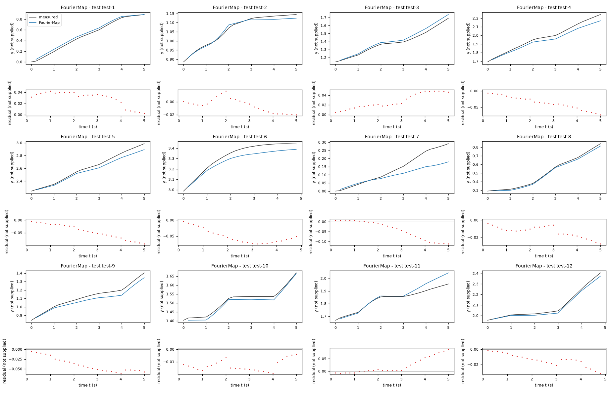
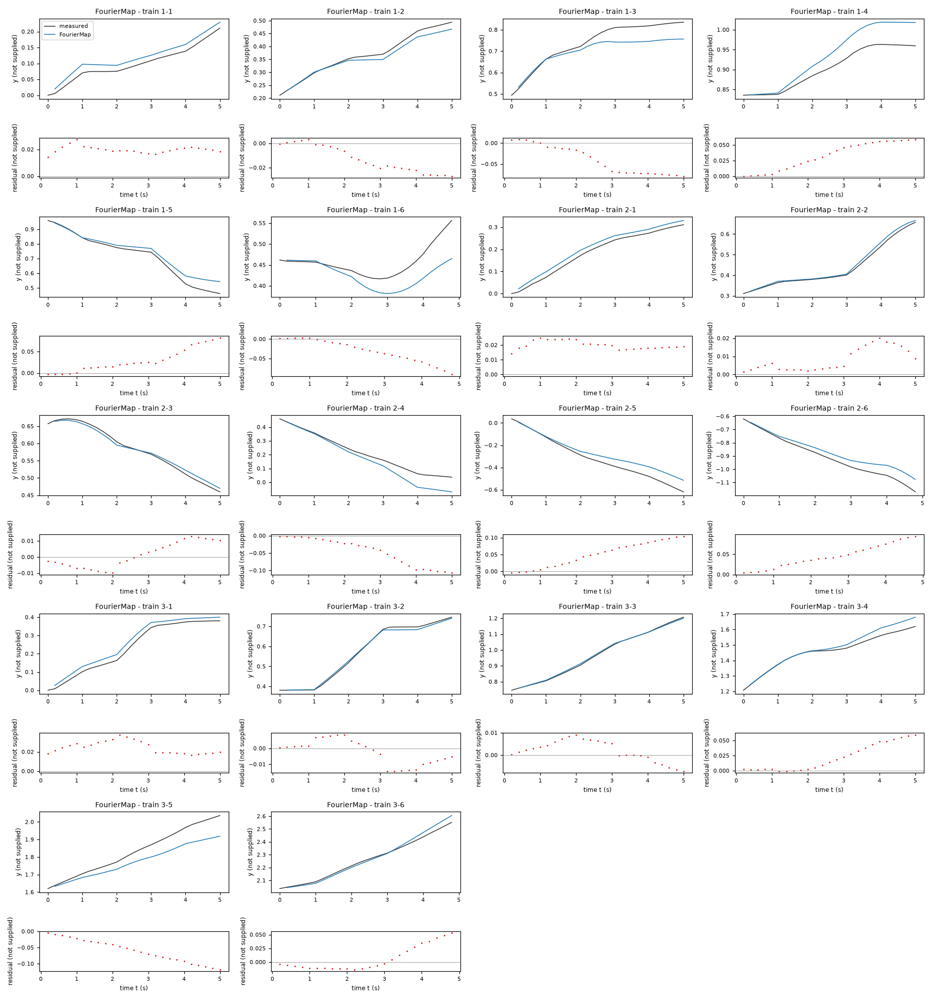
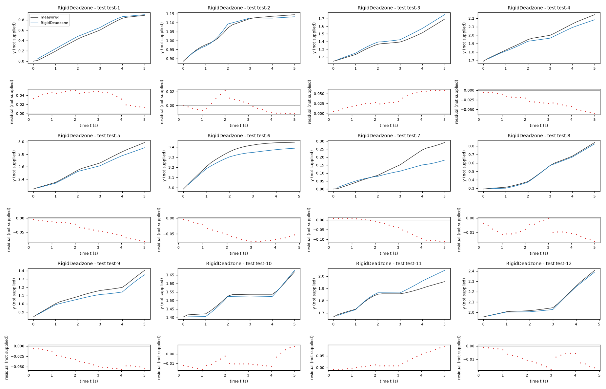
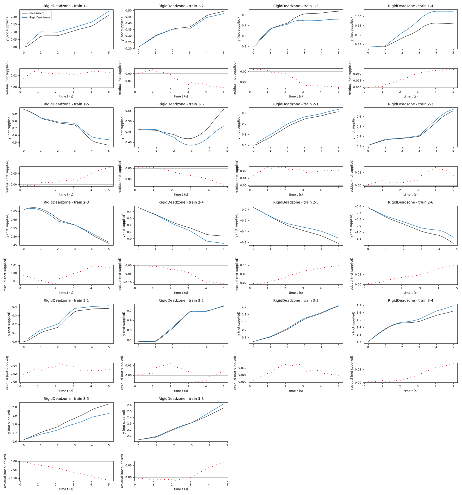
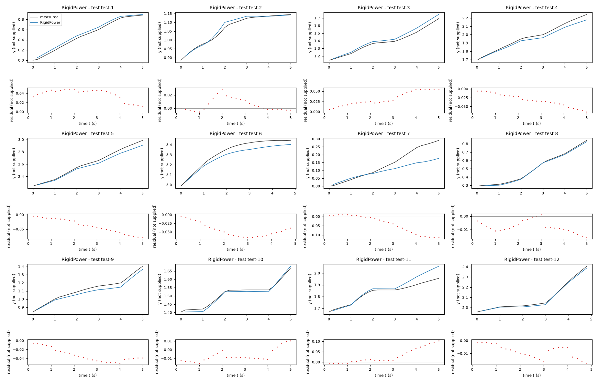
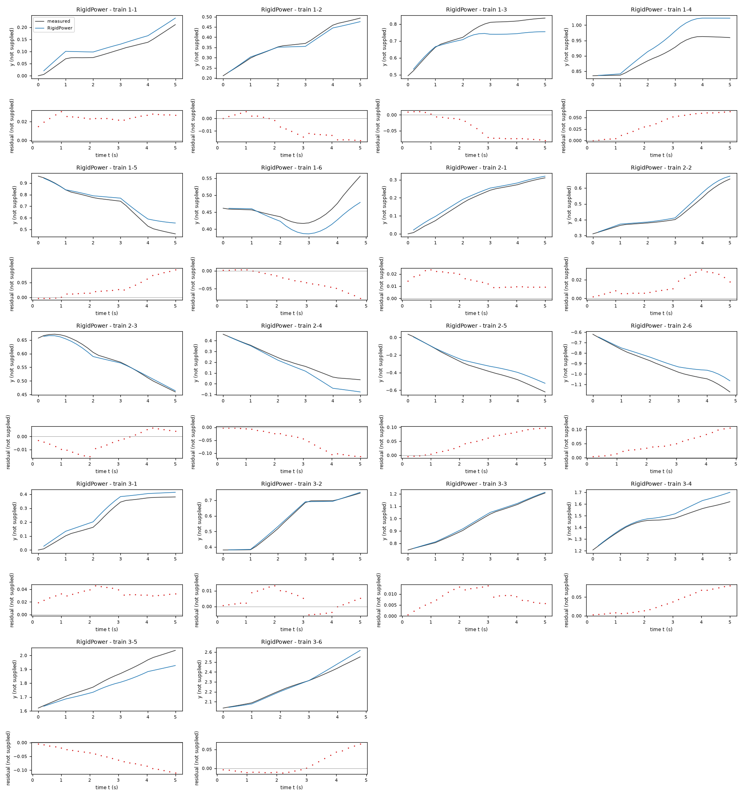

Identification task kt5o – run 1 of 5
Generated: 2026-10-08 00:00 UTC
Finished by the agent after 36 turns, 463 s of execution time and 1.97 USD. 3 models delivered, 3 evaluated.
1 Models
| Model | Fitted parameters | Training error of y | Test error of y | |
|---|---|---|---|---|
| FourierMap | 17 | 0.0379 | 0.03794 | recommended by the agent |
| RigidDeadzone | 5 | 0.03797 | 0.03709 | |
| RigidPower | 5 | 0.03941 | 0.03664 | lowest test error |
The models are listed in the agent's order. Errors: root mean squared error between simulated and measured y. Training data: 18 segments of 25 to 26 samples (447 scored samples); the harness cuts the training trajectories into segments of at most 25 simulated samples, the length of the test trajectories, so that the two errors are comparable. Test data, which the agent cannot access: 12 trajectories of 25 to 26 samples (298 scored samples). The agent recommends a model from the training data. The model with the lowest test error is found with the test data, in hindsight, among the 3 models of this run; the agent could not make this choice.
y RMSE among the retained families: 0.08581916496554522 in logged y units on data/train.csv, versus 0.08971175638571534 for the five-parameter rigid dead-zone map and 0.10647703014936342 for the signed-power map. It also has lower full-training free-running coordinate error than the other retained maps. This is a small advantage, not proof of test superiority: it uses more coefficients, and prefix-to-tail validation gives 0.1982659017905261 in logged y units, worse than the simpler alternatives. The rigid dead-zone map is retained as the parsimonious fallback. All candidates omit input history and leave substantial switch residuals.a0 = -0.0001433 P (fitted), b0 = 0.0007717 P (fitted), a1 = 0.1656 P/U (fitted), b1 = 0.0003228 P/U (fitted), a2 = -0.001084 P/U (fitted), b2 = 0.1683 P/U (fitted), a3 = -0.0006071 P (fitted), b3 = -7.139e-05 P (fitted), a4 = 4.117e-05 P (fitted), b4 = -0.0005176 P (fitted), a5 = -0.003198 P/(U*W) (fitted), b5 = 0.006526 P/(U*W) (fitted), a6 = -0.01021 P/(U*W) (fitted), b6 = 0.0009792 P/(U*W) (fitted), hb = 0.001331 rad (fitted), hg = 0.1746 rad/W (fitted), hd = 0.09774 W (fitted)y: 0.0379 · test error: 0.03794Equations as written in the model file
y_next = y + a0 + a1*(x3*cos(x2)) + a2*(x3*sin(x2)) + a3*(cos(x2)) + a4*(sin(x2)) + a5*(x3*x4*cos(x2)) + a6*(x3*x4*sin(x2))
x1_next = x1 + b0 + b1*(x3*cos(x2)) + b2*(x3*sin(x2)) + b3*(cos(x2)) + b4*(sin(x2)) + b5*(x3*x4*cos(x2)) + b6*(x3*x4*sin(x2))
x2_next = atan2(sin(x2 + (hb + hg*sign(x4)*Max(Abs(x4)-hd, 0))), cos(x2 + (hb + hg*sign(x4)*Max(Abs(x4)-hd, 0))))
Equations with the values substituted
Every parameter is replaced by its value with 4 significant digits.
Parameters and estimation
| Name | Value | Unit | Type | Description |
|---|---|---|---|---|
a0 | -0.000143331 | P | fitted | Coefficient of 1 in the increment of y; P, U and W are the unknown recorded units defined in the interpretation. |
b0 | 0.00077171 | P | fitted | Coefficient of 1 in the increment of x1; P, U and W are the unknown recorded units defined in the interpretation. |
a1 | 0.165606 | P/U | fitted | Coefficient of in the increment of y; P, U and W are the unknown recorded units defined in the interpretation. |
b1 | 0.000322765 | P/U | fitted | Coefficient of in the increment of x1; P, U and W are the unknown recorded units defined in the interpretation. |
a2 | -0.00108425 | P/U | fitted | Coefficient of in the increment of y; P, U and W are the unknown recorded units defined in the interpretation. |
b2 | 0.168267 | P/U | fitted | Coefficient of in the increment of x1; P, U and W are the unknown recorded units defined in the interpretation. |
a3 | -0.000607072 | P | fitted | Coefficient of in the increment of y; P, U and W are the unknown recorded units defined in the interpretation. |
b3 | -7.1391e-05 | P | fitted | Coefficient of in the increment of x1; P, U and W are the unknown recorded units defined in the interpretation. |
a4 | 4.11665e-05 | P | fitted | Coefficient of in the increment of y; P, U and W are the unknown recorded units defined in the interpretation. |
b4 | -0.000517644 | P | fitted | Coefficient of in the increment of x1; P, U and W are the unknown recorded units defined in the interpretation. |
a5 | -0.00319846 | P/(U*W) | fitted | Coefficient of in the increment of y; P, U and W are the unknown recorded units defined in the interpretation. |
b5 | 0.00652559 | P/(U*W) | fitted | Coefficient of in the increment of x1; P, U and W are the unknown recorded units defined in the interpretation. |
a6 | -0.0102102 | P/(U*W) | fitted | Coefficient of in the increment of y; P, U and W are the unknown recorded units defined in the interpretation. |
b6 | 0.000979198 | P/(U*W) | fitted | Coefficient of in the increment of x1; P, U and W are the unknown recorded units defined in the interpretation. |
hb | 0.00133066 | rad | fitted | Input-independent angle increment. |
hg | 0.174574 | rad/W | fitted | Gain of the odd dead-zone response to x4. |
hd | 0.0977446 | W | fitted | Empirical dead-zone threshold of recorded input x4. |
- Criterion minimized
Nonlinear least squares on the concatenation of two residual vectors: free-running coordinate errors in
yandx1and wrapped angle errors multiplied by0.25P/rad; and local increment errors multiplied by100, a dimensionless regularization weight. Thus the local sum of squares has relative weight10000. The local coordinate errors have units P and local angle errors are multiplied by0.25P/rad. Free-running residuals include all samples after the initial state. Local residuals use block-interior transitions only. The coordinate criterion addresses accumulated trajectory errors; the local penalty discourages spurious nonlinear response curves introduced to explain persistent disturbances and unavailable input history. The angle weighting is a chosen geometric scale, not a known physical length. The regularization weight was selected using leave-one-trajectory-outyprediction errors among5,20,100, and local-only fits for rigid maps, and20,100, and300for the Fourier map; it is not an estimated model constant.- Data
data/train.csv, all three trajectories, each with 150 samples at s. The final fit uses all 447 within-trajectory transitions for the free-running residual and 267 transitions with zero-based within-trajectory index modulo five in {2, 3, 4} for the local regularizer. The latter excludes switch and immediate post-switch samples because diagnostics show actuator-memory effects; no cross-trajectory transition is used.- Method
All 17 parameters were estimated jointly by trust-region reflective nonlinear least squares using
scipy.optimize.least_squaresinfit_fourier.fitwith multiplier100; this is appropriate for the nonlinear accumulated-angle residual and parameter bounds. Initialization first computes the 14 coordinate-increment coefficients by ordinary least squares usingnumpy.linalg.lstsqon all 447 within-trajectory measured transitions (no starting values needed for this linear subproblem), then appends angle starts rad, rad/W, and W, motivated by interior scalar regressions. These initial coordinate coefficients are not held fixed: the joint fit estimates all coefficients again under the stated criterion. The complete joint starting vector in parameter ordera0, b0, a1, b1, a2, b2, a3, b3, a4, b4, a5, b5, a6, b6, hb, hg, hdis[-0.0006807267087730887, 2.292924146972703e-05, 0.1596551073675894, 0.0008785478091271441, -0.001431645701694528, 0.1593334963009806, 0.0009846357073011597, 5.474441815970718e-05, 0.0009027068846644976, 0.001754308007533404, -0.002624989666742943, 0.006446215356866481, -0.007431246072123255, -0.0004774297037933275, 0, 0.1667, 0.09], with each entry carrying its parameter unit. Coordinate coefficients are each bounded between and0.5in their listed units, rad, rad/W, and W. These broad bounds are chosen to prevent extreme empirical gains, not known physical limits. The maximum function evaluations are3000, withftol = xtol = gtol = 1e-10, dimensionless convergence tolerances. No random seed applies: the computation is deterministic.fit_fourier.pycontains the objective and initialization;reproduce_submission.pyreruns the fit and writes this candidate. No coefficient is copied or held over from a submitted rigid map. Reference: SciPy API documentation, least_squares, checked directly; NumPy API documentation, numpy.linalg.lstsq, checked directly. SciPy documents the trust-region reflective bounded least-squares method; NumPy documents its direct least-squares solve. Defaults used were linear loss and a two-point finite-difference Jacobian for the nonlinear solve.- Script
reproduce_submission.py
The agent's explanation
Additive first-harmonic Fourier state map with bilinear input features, integrator state updates, and a separate static dead-zone angle-response map. Unlike the rigid kinematic map, its two coordinate increments have independent fitted coefficients and are not constrained to a shared forward step or midpoint angle. This candidate is defined by its explicit regression library rather than attributed to a particular published system equation.
Physical units were not supplied. Here P denotes the assumed shared logged coordinate unit of y and x1, U denotes the unknown recorded unit of x3, and W denotes the unknown recorded unit of x4. x2 is treated as an angle in radians, inferred from its wrapping, not given by the task. For each coordinate, the feature 1 supplies a constant increment; and give first-harmonic input-direction coupling; and allow direction-dependent offsets; and allow first-order turning-input corrections. Their coefficients are independent in the two coordinates, so small cross-axis effects, anisotropy, and lateral increments are permitted mathematically, without claiming a physical cause. The angle step supplies offset drift and an odd dead-zone response, and wraps the next angle. The current positions y and x1 enter with identity coefficients, preserving translation invariance.
Before fitting I listed affine, polynomial, and bounded/periodic model families. Ordinary least squares affine and polynomial maps of degrees one through three were explored on within-trajectory increments; their poor trajectory-held-out increment behavior, and angle wrapping, motivated periodic coordinates. A bicycle-like angle response was rejected after comparison with an independent x4 response. Body-frame projection showed that midpoint-angle integration greatly reduced lateral residuals. I then fitted Euler and midpoint linear maps, midpoint cubic, signed-power and dead-zone maps, and a cubic exact-arc map by free-running nonlinear least squares. Residuals showed strong switch transients and serial dependence rather than evidence for coordinate-dependent forces; adding coordinate and heading predictors to scalar input regressions did not reliably improve held-out local errors. This motivated the interior-increment regularizer rather than extra state-dependent terms. No symbolic-regression package or random search was used. The Fourier feature library was hand-constructed from the observed directional alignment and a first-order expansion of midpoint direction: its turning corrections use and . An unrestricted first-harmonic map was tested to check whether tying both coordinate increments to one scalar forward step was too restrictive. Features were not selected by genetic programming or sparse thresholding. The dead-zone angle form came from the earlier empirical input-response comparison; all its values were refitted in this candidate. I retained this family because it improves scored-output trajectory holdout while allowing a modest independent cross-axis response.
The interpretation is inferred, not a known description of this system. Recorded units, hardware, actuator state, noise model, and input behavior outside the observed range are unknown. No previous inputs may enter the required expressions, so switch transients cannot be represented exactly. Residual autocorrelation and persistent block disturbances remain. Long-horizon heading bias accumulates into coordinate error, and validation contains only three trajectories; model choice is consequently uncertain. Prefix-to-tail validation is materially worse than whole-trajectory holdout. The map is intended only near the observed input and state coverage, not arbitrary large inputs. On all training trajectories the free-running y RMSE is 0.0632209526094111 P. Leave-one-trajectory-out y RMSE values for held-out trajectories one, two, and three are 0.034379076209898975, 0.1407725221542698, and 0.03310533720459535 P, respectively; their equal-size aggregate is 0.08581916496554522 P. Refitting on the first 100 samples of every trajectory and continuing free runs from the original initial states gives final-50-sample y RMSE 0.1982659017905261 P. All validation uses only the training file, not hidden test data. On all 447 transitions the one-step y RMSE is 0.002655790917274414 P; on the 90 switch-step transitions it is 0.005119113101520121 P, versus 0.001481556253404246 P on the 267 interior transitions. Adjacent one-step y residual correlation is 0.4359036010540481, dimensionless, computed only within trajectories. The block phase is used only to choose fitting rows, never as an expression argument.
Plots of simulated and measured y, and errors per trajectory


| Data | Trajectory | Scored samples | RMSE | NRMSE | R² | Failure |
|---|---|---|---|---|---|---|
| training data | 1-1 | 25 of 25 | 0.02003 | 0.3931 | 0.8455 | none |
| training data | 1-2 | 25 of 25 | 0.01664 | 0.2161 | 0.9533 | none |
| training data | 1-3 | 25 of 25 | 0.0515 | 0.5683 | 0.6771 | none |
| training data | 1-4 | 25 of 25 | 0.03915 | 0.7865 | 0.3814 | none |
| training data | 1-5 | 25 of 25 | 0.03926 | 0.2631 | 0.9308 | none |
| training data | 1-6 | 24 of 24 | 0.0419 | 1.155 | -0.3338 | none |
| training data | 2-1 | 25 of 25 | 0.02025 | 0.2143 | 0.9541 | none |
| training data | 2-2 | 25 of 25 | 0.01028 | 0.1002 | 0.99 | none |
| training data | 2-3 | 25 of 25 | 0.007809 | 0.1137 | 0.9871 | none |
| training data | 2-4 | 25 of 25 | 0.05924 | 0.4592 | 0.7892 | none |
| training data | 2-5 | 25 of 25 | 0.06214 | 0.3484 | 0.8786 | none |
| training data | 2-6 | 24 of 24 | 0.0529 | 0.3657 | 0.8662 | none |
| training data | 3-1 | 25 of 25 | 0.02537 | 0.1955 | 0.9618 | none |
| training data | 3-2 | 25 of 25 | 0.008146 | 0.05938 | 0.9965 | none |
| training data | 3-3 | 25 of 25 | 0.005074 | 0.03519 | 0.9988 | none |
| training data | 3-4 | 25 of 25 | 0.03079 | 0.3079 | 0.9052 | none |
| training data | 3-5 | 25 of 25 | 0.06905 | 0.5567 | 0.6901 | none |
| training data | 3-6 | 24 of 24 | 0.0229 | 0.1474 | 0.9783 | none |
| test data | test-1 | 25 of 25 | 0.03204 | 0.1144 | 0.9869 | none |
| test data | test-2 | 25 of 25 | 0.01162 | 0.1517 | 0.977 | none |
| test data | test-3 | 25 of 25 | 0.03132 | 0.2141 | 0.9541 | none |
| test data | test-4 | 25 of 25 | 0.04134 | 0.2751 | 0.9243 | none |
| test data | test-5 | 25 of 25 | 0.05272 | 0.2365 | 0.9441 | none |
| test data | test-6 | 24 of 24 | 0.05527 | 0.4395 | 0.8069 | none |
| test data | test-7 | 25 of 25 | 0.06061 | 0.6538 | 0.5725 | none |
| test data | test-8 | 25 of 25 | 0.01484 | 0.08241 | 0.9932 | none |
| test data | test-9 | 25 of 25 | 0.04286 | 0.3239 | 0.8951 | none |
| test data | test-10 | 25 of 25 | 0.01367 | 0.2013 | 0.9595 | none |
| test data | test-11 | 25 of 25 | 0.03782 | 0.4836 | 0.7662 | none |
| test data | test-12 | 24 of 24 | 0.01602 | 0.1204 | 0.9855 | none |
RMSE of y; NRMSE = RMSE / σ and R² = 1 − SSE / Σ(y[k] − μ)², with μ and σ the mean and the population standard deviation of the measured output on the scored samples.
sb = -0.0006147 P (fitted), sv = 0.1684 P/U (fitted), hb = 0.001598 rad (fitted), hg = 0.177 rad/W (fitted), hd = 0.0977 W (fitted)y: 0.03797 · test error: 0.03709Equations as written in the model file
y_next = y + (sb + sv*x3)*cos(x2 + 0.5*(hb + hg*sign(x4)*Max(Abs(x4)-hd, 0)))
x1_next = x1 + (sb + sv*x3)*sin(x2 + 0.5*(hb + hg*sign(x4)*Max(Abs(x4)-hd, 0)))
x2_next = atan2(sin(x2 + (hb + hg*sign(x4)*Max(Abs(x4)-hd, 0))), cos(x2 + (hb + hg*sign(x4)*Max(Abs(x4)-hd, 0))))
Equations with the values substituted
Every parameter is replaced by its value with 4 significant digits.
Parameters and estimation
| Name | Value | Unit | Type | Description |
|---|---|---|---|---|
sb | -0.00061472 | P | fitted | Intercept in signed forward step ; P is the assumed shared coordinate unit, unknown physically. |
sv | 0.168417 | P/U | fitted | Slope of signed forward step with recorded input x3; U is its unknown unit. |
hb | 0.0015984 | rad | fitted | Input-independent angle increment; radian interpretation is assumed from wrapping. |
hg | 0.177005 | rad/W | fitted | Scale of the nonlinear angle response to recorded input x4; W is its unknown unit, and hp is the fitted exponent for the signed-power map. |
hd | 0.0977031 | W | fitted | Fitted threshold in ; this is an empirical dead zone, not established actuator friction. |
- Criterion minimized
Nonlinear least squares on the concatenation of two residual vectors: free-running coordinate errors in
yandx1and wrapped angle errors multiplied by0.25P/rad; and local increment errors multiplied by100, a dimensionless regularization weight. Thus the local sum of squares has relative weight10000. The local coordinate errors have units P and local angle errors are multiplied by0.25P/rad. Free-running residuals include all samples after the initial state. Local residuals use block-interior transitions only. The coordinate criterion addresses accumulated trajectory errors; the local penalty discourages spurious nonlinear response curves introduced to explain persistent disturbances and unavailable input history. The angle weighting is a chosen geometric scale, not a known physical length. The regularization weight was selected using leave-one-trajectory-outyprediction errors among5,20,100, and local-only fits for rigid maps, and20,100, and300for the Fourier map; it is not an estimated model constant.- Data
data/train.csv, all three trajectories, each with 150 samples at s. The final fit uses all 447 within-trajectory transitions for the free-running residual and 267 transitions with zero-based within-trajectory index modulo five in {2, 3, 4} for the local regularizer. The latter excludes switch and immediate post-switch samples because diagnostics show actuator-memory effects; no cross-trajectory transition is used.- Method
All five parameters were estimated jointly by the trust-region reflective nonlinear least-squares algorithm in
scipy.optimize.least_squares, as implemented byfit_regularized.fit, with the familydeadzone_midand the multiplier100. This algorithm handles the chosen parameter bounds and a nonlinear multi-step residual, unlike ordinary linear least squares. The starting vector in parameter ordersb, sv, hb, hg, hdwas[0, 0.1667, 0, 0.1667, 0.09]; its entries have the corresponding parameter units. These rounded starts were motivated by preliminary block-interior input regressions (a forward gain near one sixth and a small angle offset), not copied fitted values from another submitted candidate. Bounds were P, P/U, rad, and rad/W and W. They keep the response in a modest range seen in training and prevent unconstrained nonlinear gains; they are assumptions rather than known physical bounds. Maximum function evaluations were3000, andftol = xtol = gtol = 1e-10, dimensionless convergence tolerances. There is no random seed because the procedure is deterministic. Starting values, the data selection, objective, and settings are reproduced byfit_regularized.py;reproduce_submission.pyreruns this fit and writes the candidate. Other fits were used only for structural comparison and regularization selection; no fitted parameter was held over or fixed. Reference: SciPy API documentation, least_squares, checked directly; NumPy API documentation, numpy.linalg.lstsq, checked directly. SciPy documents the trust-region reflective bounded least-squares method; NumPy documents its direct least-squares solve. Defaults used were linear loss and a two-point finite-difference Jacobian for the nonlinear solve.- Script
reproduce_submission.py
The agent's explanation
Discrete-time planar kinematic (unicycle-type) map with midpoint integration and a static dead-zone input nonlinearity, also called a Hammerstein-type input block. The terminology describes mathematical structure only; no specific vehicle is claimed. A related reference is R. M. Murray, Z. X. Li, and S. S. Sastry, A Mathematical Introduction to Robotic Manipulation, CRC Press, 1994. Book authorship and publication were verified on the author-hosted MLS archive; the nonholonomic-kinematics association is recalled from memory and its chapter text was not checked. The empirical input-response function and discrete midpoint map are choices made here, not equations attributed to that book.
Physical units were not supplied. Here P denotes the assumed shared logged coordinate unit of y and x1, U denotes the unknown recorded unit of x3, and W denotes the unknown recorded unit of x4. x2 is treated as an angle in radians, inferred from its wrapping, not given by the task. The signed forward step is : sb adds a constant offset and adds a linear response. The angle step is : hb is drift and the remaining term is zero inside the fitted input dead zone and affine in input magnitude outside it. Position increments use and , tying the two coordinates to the same forward step and midpoint direction. The factor 0.5 defines midpoint integration. The expression wraps the updated angle to the principal branch. No attraction to coordinate zero or coordinate-dependent force is assumed.
Before fitting I listed affine, polynomial, and bounded/periodic model families. Ordinary least squares affine and polynomial maps of degrees one through three were explored on within-trajectory increments; their poor trajectory-held-out increment behavior, and angle wrapping, motivated periodic coordinates. A bicycle-like angle response was rejected after comparison with an independent x4 response. Body-frame projection showed that midpoint-angle integration greatly reduced lateral residuals. I then fitted Euler and midpoint linear maps, midpoint cubic, signed-power and dead-zone maps, and a cubic exact-arc map by free-running nonlinear least squares. Residuals showed strong switch transients and serial dependence rather than evidence for coordinate-dependent forces; adding coordinate and heading predictors to scalar input regressions did not reliably improve held-out local errors. This motivated the interior-increment regularizer rather than extra state-dependent terms. No symbolic-regression package or random search was used. The selected dead-zone threshold is an empirical input-response choice suggested by scalar block-interior regressions. It is not physical knowledge. I retained this candidate because it achieves nearly the best trajectory-held-out scored-output error with only five coefficients.
The interpretation is inferred, not a known description of this system. Recorded units, hardware, actuator state, noise model, and input behavior outside the observed range are unknown. No previous inputs may enter the required expressions, so switch transients cannot be represented exactly. Residual autocorrelation and persistent block disturbances remain. Long-horizon heading bias accumulates into coordinate error, and validation contains only three trajectories; model choice is consequently uncertain. Prefix-to-tail validation is materially worse than whole-trajectory holdout. The map is intended only near the observed input and state coverage, not arbitrary large inputs. On all training trajectories the free-running y RMSE is 0.06550882978238272 P. Leave-one-trajectory-out y RMSE values for held-out trajectories one, two, and three are 0.030288680766855716, 0.1227901397156689, and 0.09027610485305522 P, respectively; their equal-size aggregate is 0.08971175638571534 P. Refitting on the first 100 samples of every trajectory and continuing free runs from the original initial states gives final-50-sample y RMSE 0.1799907732638144 P. All validation uses only the training file, not hidden test data. On all 447 transitions the one-step y RMSE is 0.002674389398512461 P; on the 90 switch-step transitions it is 0.005186941664228186 P, versus 0.001458944721420497 P on the 267 interior transitions. Adjacent one-step y residual correlation is 0.4021713697226039, dimensionless, computed only within trajectories. The block phase is used only to choose fitting rows, never as an expression argument.
Plots of simulated and measured y, and errors per trajectory


| Data | Trajectory | Scored samples | RMSE | NRMSE | R² | Failure |
|---|---|---|---|---|---|---|
| training data | 1-1 | 25 of 25 | 0.0242 | 0.4749 | 0.7744 | none |
| training data | 1-2 | 25 of 25 | 0.01131 | 0.1469 | 0.9784 | none |
| training data | 1-3 | 25 of 25 | 0.04906 | 0.5414 | 0.7069 | none |
| training data | 1-4 | 25 of 25 | 0.04473 | 0.8985 | 0.1927 | none |
| training data | 1-5 | 25 of 25 | 0.03591 | 0.2407 | 0.9421 | none |
| training data | 1-6 | 24 of 24 | 0.0365 | 1.006 | -0.01204 | none |
| training data | 2-1 | 25 of 25 | 0.02128 | 0.2252 | 0.9493 | none |
| training data | 2-2 | 25 of 25 | 0.01451 | 0.1415 | 0.98 | none |
| training data | 2-3 | 25 of 25 | 0.007538 | 0.1098 | 0.9879 | none |
| training data | 2-4 | 25 of 25 | 0.05993 | 0.4645 | 0.7843 | none |
| training data | 2-5 | 25 of 25 | 0.05944 | 0.3333 | 0.8889 | none |
| training data | 2-6 | 24 of 24 | 0.05386 | 0.3724 | 0.8613 | none |
| training data | 3-1 | 25 of 25 | 0.03264 | 0.2515 | 0.9367 | none |
| training data | 3-2 | 25 of 25 | 0.006213 | 0.04529 | 0.9979 | none |
| training data | 3-3 | 25 of 25 | 0.008566 | 0.05941 | 0.9965 | none |
| training data | 3-4 | 25 of 25 | 0.03805 | 0.3805 | 0.8552 | none |
| training data | 3-5 | 25 of 25 | 0.06426 | 0.518 | 0.7316 | none |
| training data | 3-6 | 24 of 24 | 0.02707 | 0.1742 | 0.9697 | none |
| test data | test-1 | 25 of 25 | 0.04089 | 0.146 | 0.9787 | none |
| test data | test-2 | 25 of 25 | 0.009173 | 0.1198 | 0.9857 | none |
| test data | test-3 | 25 of 25 | 0.03825 | 0.2615 | 0.9316 | none |
| test data | test-4 | 25 of 25 | 0.03397 | 0.226 | 0.9489 | none |
| test data | test-5 | 25 of 25 | 0.04637 | 0.208 | 0.9567 | none |
| test data | test-6 | 24 of 24 | 0.05452 | 0.4335 | 0.8121 | none |
| test data | test-7 | 25 of 25 | 0.05944 | 0.6412 | 0.5889 | none |
| test data | test-8 | 25 of 25 | 0.009621 | 0.05341 | 0.9971 | none |
| test data | test-9 | 25 of 25 | 0.03997 | 0.3021 | 0.9088 | none |
| test data | test-10 | 25 of 25 | 0.01046 | 0.154 | 0.9763 | none |
| test data | test-11 | 25 of 25 | 0.03992 | 0.5105 | 0.7394 | none |
| test data | test-12 | 24 of 24 | 0.01014 | 0.07619 | 0.9942 | none |
RMSE of y; NRMSE = RMSE / σ and R² = 1 − SSE / Σ(y[k] − μ)², with μ and σ the mean and the population standard deviation of the measured output on the scored samples.
sb = -0.0005674 P (fitted), sv = 0.168 P/U (fitted), hb = 0.001683 rad (fitted), hg = 0.1681 rad/(W**hp) (fitted), hp = 1.334 (fitted)y: 0.03941 · test error: 0.03664Equations as written in the model file
y_next = y + (sb + sv*x3)*cos(x2 + 0.5*(hb + hg*sign(x4)*Abs(x4)**hp))
x1_next = x1 + (sb + sv*x3)*sin(x2 + 0.5*(hb + hg*sign(x4)*Abs(x4)**hp))
x2_next = atan2(sin(x2 + (hb + hg*sign(x4)*Abs(x4)**hp)), cos(x2 + (hb + hg*sign(x4)*Abs(x4)**hp)))
Equations with the values substituted
Every parameter is replaced by its value with 4 significant digits.
Parameters and estimation
| Name | Value | Unit | Type | Description |
|---|---|---|---|---|
sb | -0.00056738 | P | fitted | Intercept in signed forward step ; P is the assumed shared coordinate unit, unknown physically. |
sv | 0.16801 | P/U | fitted | Slope of signed forward step with recorded input x3; U is its unknown unit. |
hb | 0.00168328 | rad | fitted | Input-independent angle increment; radian interpretation is assumed from wrapping. |
hg | 0.168107 | rad/(W**hp) | fitted | Scale of the nonlinear angle response to recorded input x4; W is its unknown unit, and hp is the fitted exponent for the signed-power map. |
hp | 1.33406 | - | fitted | Fitted exponent in , a nonlinear response to the recorded input numerical scale. |
- Criterion minimized
Nonlinear least squares on the concatenation of two residual vectors: free-running coordinate errors in
yandx1and wrapped angle errors multiplied by0.25P/rad; and local increment errors multiplied by100, a dimensionless regularization weight. Thus the local sum of squares has relative weight10000. The local coordinate errors have units P and local angle errors are multiplied by0.25P/rad. Free-running residuals include all samples after the initial state. Local residuals use block-interior transitions only. The coordinate criterion addresses accumulated trajectory errors; the local penalty discourages spurious nonlinear response curves introduced to explain persistent disturbances and unavailable input history. The angle weighting is a chosen geometric scale, not a known physical length. The regularization weight was selected using leave-one-trajectory-outyprediction errors among5,20,100, and local-only fits for rigid maps, and20,100, and300for the Fourier map; it is not an estimated model constant.- Data
data/train.csv, all three trajectories, each with 150 samples at s. The final fit uses all 447 within-trajectory transitions for the free-running residual and 267 transitions with zero-based within-trajectory index modulo five in {2, 3, 4} for the local regularizer. The latter excludes switch and immediate post-switch samples because diagnostics show actuator-memory effects; no cross-trajectory transition is used.- Method
All five parameters were estimated jointly by the trust-region reflective nonlinear least-squares algorithm in
scipy.optimize.least_squares, as implemented byfit_regularized.fit, with the familypower_midand the multiplier100. This algorithm handles the chosen parameter bounds and a nonlinear multi-step residual, unlike ordinary linear least squares. The starting vector in parameter ordersb, sv, hb, hg, hpwas[0, 0.1667, 0, 0.16, 1.24]; its entries have the corresponding parameter units. These rounded starts were motivated by preliminary block-interior input regressions (a forward gain near one sixth and a small angle offset), not copied fitted values from another submitted candidate. Bounds were P, P/U, rad, and rad/(W**hp) and . They keep the response in a modest range seen in training and prevent unconstrained nonlinear gains; they are assumptions rather than known physical bounds. Maximum function evaluations were3000, andftol = xtol = gtol = 1e-10, dimensionless convergence tolerances. There is no random seed because the procedure is deterministic. Starting values, the data selection, objective, and settings are reproduced byfit_regularized.py;reproduce_submission.pyreruns this fit and writes the candidate. Other fits were used only for structural comparison and regularization selection; no fitted parameter was held over or fixed. Reference: SciPy API documentation, least_squares, checked directly; NumPy API documentation, numpy.linalg.lstsq, checked directly. SciPy documents the trust-region reflective bounded least-squares method; NumPy documents its direct least-squares solve. Defaults used were linear loss and a two-point finite-difference Jacobian for the nonlinear solve.- Script
reproduce_submission.py
The agent's explanation
Discrete-time planar kinematic (unicycle-type) map with midpoint integration and a static signed-power input nonlinearity. The terminology describes mathematical structure only; no specific vehicle is claimed. A related reference is R. M. Murray, Z. X. Li, and S. S. Sastry, A Mathematical Introduction to Robotic Manipulation, CRC Press, 1994. Book authorship and publication were verified on the author-hosted MLS archive; the nonholonomic-kinematics association is recalled from memory and its chapter text was not checked. The empirical input-response function and discrete midpoint map are choices made here, not equations attributed to that book.
Physical units were not supplied. Here P denotes the assumed shared logged coordinate unit of y and x1, U denotes the unknown recorded unit of x3, and W denotes the unknown recorded unit of x4. x2 is treated as an angle in radians, inferred from its wrapping, not given by the task. The signed forward step is : sb adds a constant offset and adds a linear response. The angle step is : hb is drift and the remaining term is odd in x4 with curvature controlled by hp; the sign operator preserves direction. Position increments use and , tying the two coordinates to the same forward step and midpoint direction. The factor 0.5 defines midpoint integration. The expression wraps the updated angle to the principal branch. No attraction to coordinate zero or coordinate-dependent force is assumed.
Before fitting I listed affine, polynomial, and bounded/periodic model families. Ordinary least squares affine and polynomial maps of degrees one through three were explored on within-trajectory increments; their poor trajectory-held-out increment behavior, and angle wrapping, motivated periodic coordinates. A bicycle-like angle response was rejected after comparison with an independent x4 response. Body-frame projection showed that midpoint-angle integration greatly reduced lateral residuals. I then fitted Euler and midpoint linear maps, midpoint cubic, signed-power and dead-zone maps, and a cubic exact-arc map by free-running nonlinear least squares. Residuals showed strong switch transients and serial dependence rather than evidence for coordinate-dependent forces; adding coordinate and heading predictors to scalar input regressions did not reliably improve held-out local errors. This motivated the interior-increment regularizer rather than extra state-dependent terms. No symbolic-regression package or random search was used. The selected signed-power exponent is an empirical input-response choice suggested by scalar block-interior regressions. It is not physical knowledge. I retained this candidate because it offers a continuous curved response outside zero without an explicit dead-zone threshold, with reasonable held-out performance.
The interpretation is inferred, not a known description of this system. Recorded units, hardware, actuator state, noise model, and input behavior outside the observed range are unknown. No previous inputs may enter the required expressions, so switch transients cannot be represented exactly. Residual autocorrelation and persistent block disturbances remain. Long-horizon heading bias accumulates into coordinate error, and validation contains only three trajectories; model choice is consequently uncertain. Prefix-to-tail validation is materially worse than whole-trajectory holdout. The map is intended only near the observed input and state coverage, not arbitrary large inputs. On all training trajectories the free-running y RMSE is 0.07254407387816578 P. Leave-one-trajectory-out y RMSE values for held-out trajectories one, two, and three are 0.07693092979332025, 0.11893750487210492, and 0.11809985530989695 P, respectively; their equal-size aggregate is 0.1064770301493634 P. Refitting on the first 100 samples of every trajectory and continuing free runs from the original initial states gives final-50-sample y RMSE 0.1735456022317964 P. All validation uses only the training file, not hidden test data. On all 447 transitions the one-step y RMSE is 0.002670749472555829 P; on the 90 switch-step transitions it is 0.005179320090616344 P, versus 0.00145730430499236 P on the 267 interior transitions. Adjacent one-step y residual correlation is 0.404401125483538, dimensionless, computed only within trajectories. The block phase is used only to choose fitting rows, never as an expression argument.
Plots of simulated and measured y, and errors per trajectory


| Data | Trajectory | Scored samples | RMSE | NRMSE | R² | Failure |
|---|---|---|---|---|---|---|
| training data | 1-1 | 25 of 25 | 0.02476 | 0.4859 | 0.7639 | none |
| training data | 1-2 | 25 of 25 | 0.01084 | 0.1408 | 0.9802 | none |
| training data | 1-3 | 25 of 25 | 0.05271 | 0.5816 | 0.6617 | none |
| training data | 1-4 | 25 of 25 | 0.04331 | 0.8701 | 0.243 | none |
| training data | 1-5 | 25 of 25 | 0.04414 | 0.2959 | 0.9125 | none |
| training data | 1-6 | 24 of 24 | 0.03575 | 0.9853 | 0.02912 | none |
| training data | 2-1 | 25 of 25 | 0.01565 | 0.1657 | 0.9726 | none |
| training data | 2-2 | 25 of 25 | 0.01677 | 0.1636 | 0.9732 | none |
| training data | 2-3 | 25 of 25 | 0.007756 | 0.113 | 0.9872 | none |
| training data | 2-4 | 25 of 25 | 0.0627 | 0.486 | 0.7638 | none |
| training data | 2-5 | 25 of 25 | 0.0595 | 0.3336 | 0.8887 | none |
| training data | 2-6 | 24 of 24 | 0.05749 | 0.3975 | 0.842 | none |
| training data | 3-1 | 25 of 25 | 0.03389 | 0.2611 | 0.9318 | none |
| training data | 3-2 | 25 of 25 | 0.006766 | 0.04932 | 0.9976 | none |
| training data | 3-3 | 25 of 25 | 0.00918 | 0.06367 | 0.9959 | none |
| training data | 3-4 | 25 of 25 | 0.04429 | 0.4429 | 0.8039 | none |
| training data | 3-5 | 25 of 25 | 0.0633 | 0.5103 | 0.7396 | none |
| training data | 3-6 | 24 of 24 | 0.02756 | 0.1774 | 0.9685 | none |
| test data | test-1 | 25 of 25 | 0.0396 | 0.1414 | 0.98 | none |
| test data | test-2 | 25 of 25 | 0.01095 | 0.143 | 0.9796 | none |
| test data | test-3 | 25 of 25 | 0.03604 | 0.2464 | 0.9393 | none |
| test data | test-4 | 25 of 25 | 0.0361 | 0.2402 | 0.9423 | none |
| test data | test-5 | 25 of 25 | 0.0455 | 0.2041 | 0.9583 | none |
| test data | test-6 | 24 of 24 | 0.04822 | 0.3834 | 0.853 | none |
| test data | test-7 | 25 of 25 | 0.06119 | 0.6601 | 0.5642 | none |
| test data | test-8 | 25 of 25 | 0.008994 | 0.04993 | 0.9975 | none |
| test data | test-9 | 25 of 25 | 0.0359 | 0.2713 | 0.9264 | none |
| test data | test-10 | 25 of 25 | 0.009873 | 0.1454 | 0.9789 | none |
| test data | test-11 | 25 of 25 | 0.04584 | 0.5861 | 0.6565 | none |
| test data | test-12 | 24 of 24 | 0.00989 | 0.07431 | 0.9945 | none |
RMSE of y; NRMSE = RMSE / σ and R² = 1 − SSE / Σ(y[k] − μ)², with μ and σ the mean and the population standard deviation of the measured output on the scored samples.
2 Course of the run
The system prompt, TASK.md and FORMAT.md that the agent received are shown on the page of the experiment.
0:00Harness: opening message to the agent
10:14Read TASK.md0.01
5,474 input and 19 output tokens; 0.011 USD for this turn.
TASK.md
output as sent to the agent (3,266 characters, 39 lines)
[TASK.md: 3239 characters] # Task: Identification task kt5o ## 1 System and intended use The task gives no description of the system. The task states no intended use of the model. ## 2 Data `data/train.csv` holds 450 samples: 3 trajectories of 150 consecutive samples; the column `trajectory` holds the trajectory number. Row k+1 of a trajectory is the sample that follows row k; different trajectories are separate experiments. The sampling period is T_s = 0.2 s. | Column | Role | Unit | Training range | Description | |---|---|---|---|---| | `y` | state, scored output | not supplied | not declared | not supplied | | `x1` | state | not supplied | not declared | not supplied | | `x2` | state | not supplied | not declared | not supplied | | `x3` | input | not supplied | not declared | not supplied | | `x4` | input | not supplied | not declared | not supplied | The task does not state the units. The task does not describe the columns. ## 3 What you deliver A candidate is a discrete-time model of 3 closed-form expressions, `y_next`, `x1_next` and `x2_next`: the states `y`, `x1` and `x2` at sample k+1 as functions of `y`, `x1`, `x2`, `x3` and `x4` at sample k. `FORMAT.md` states how an expression is written and what it may contain. Write one file per candidate, `models/<label>.json`; `FORMAT.md` describes the file and gives an example. Write also `models/pool.json`, which lists the labels of your candidates in the order in which they are to be evaluated. You can recommend one candidate that you consider the best-performing. `models/pool.json` then names that candidate and gives your reason. Run `python check_submission.py` to check your files: it prints every error with its location, so that you can correct it. At most 10 candidates are evaluated, in the order of `models/pool.json`. Consider various identification approaches, for example physically motivated structures, symbolic-regression search or sparse regression; before fitting, list the approaches and the model families you will try. Build the pool from structurally different model families, not from variations of one form. Examine the residuals of your best candidates and try structures that can represent what they show. Include only candidates you would defend as a model of the system. ## 4 Evaluation The harness, the software that runs this task, evaluates every candidate on test data that you cannot access. For each test trajectory it starts from the first logged state and applies the expressions repeatedly with the logged inputs; a simulated state is never replaced by a later measurement. The score is the root mean squared error (RMSE) between simulated and logged `y` over all test samples after the first of each trajectory. An evaluation fails when a value is not finite, when `y` leaves [-100, 100] or `x1` leaves [-100, 100] or `x2` leaves [-1000, 1000], or when it takes longer than 60 s. ## 5 Limits and completion One round: 60 turns, 3600 s of execution time, 10 USD; a turn is one response of yours. When the files pass the check, send the exact message DONE. If the harness's check of the files then fails, you receive its report and may correct the files once. If a limit ends the round earlier, the complete candidate files are evaluated.
20:16Read FORMAT.md; listed the files0.02
6,274 input and 47 output tokens; 0.013 USD for this turn.
FORMAT.md
output as sent to the agent (8,159 characters, 128 lines)
[FORMAT.md: 8130 characters]
# Model file format
This file is the same for every task. `TASK.md` names the expression keys, the variables and the permitted functions of your task.
## Candidate file `models/<label>.json`
Write one JSON file per candidate. The label is the file name: a letter, then up to 31 letters, digits, `_` or `-`. The file has these fields and no others:
- `expressions`: one expression text per expression key named in `TASK.md`.
- `parameters`: one row per parameter. A parameter is a constant of the expressions that you name yourself, for example `a1`. Its row has
- `name`: the name used in the expressions: a letter, then letters, digits or `_`; it differs from every column, expression key, constant and function name;
- `value`: the numerical value;
- `unit`: the unit; `-` for a dimensionless quantity;
- `type`: `fitted` (estimated from data), `fixed` (chosen or known, not estimated) or `tied` (computed from other parameters by `equation`);
- `description`: what the parameter represents; for a fixed value, where the value comes from and why it was chosen; for a value taken over from another candidate or an earlier fit, from which one;
- `equation`: for a tied parameter only: its defining equation over other parameters, given constants and numbers.
- `estimation`: how the values of the fitted parameters of this candidate were obtained and why in this way; for every fitted parameter it must be clear how its value was found. Write the record for this candidate model, not for the run as a whole: its own criterion, data, method and starting values, with the reasons that apply to this candidate. The record has
- `criterion`: what was minimized, on which variable, and why this criterion;
- `data`: the files, trajectories or rows used, and the reason when some were left out;
- `method`: how the values were estimated: the estimation method by its established name and the software function, and why this method and not another; the starting values as numbers, or the statement that the method needs none, and why these starting values; whether all fitted parameters were estimated together in one step and, if not, which parameters were estimated in which step, with which criterion, and why; the seeds where they apply;
- `script`: the file in the working directory that reproduces the values.
- `discussion`: four texts, in this order:
- `family`: the model family by its established name, with a reference where you know one;
- `interpretation`: what each term represents in the system; describe a term without a known physical meaning by its mathematical effect;
- `origin`: how you arrived at the structure of this expression, as distinct from its parameter values, which `estimation` covers: say which of its terms, variables and operators came from physical reasoning, which from a search and which from a guess, what you tried before, and what made you change it;
- `limitations`: what the data do not determine and where the model is not expected to hold.
- `answers`: only when `TASK.md` asks questions about the candidates: one text per question identifier.
- `predecessor`: only in a later round of an interactive session, and optional: the label of the candidate of the previous pool that this candidate revises.
## Expressions
An expression is a text in Python syntax. It may contain:
- the variables that `TASK.md` names as the arguments of the expression;
- your parameters, each with a row in `parameters`;
- the constants `pi` and `E`, the given constants that `TASK.md` lists, and numbers;
- these operators and functions, unless `TASK.md` states another list: `+` `-` `*` `/` `**` `sin` `cos` `tan` `asin` `acos` `atan` `atan2` `sinh` `cosh` `tanh` `exp` `log` `sqrt` `Abs` `sign` `Min` `Max` `Piecewise`.
`**` is the power (not `^`), and `log` is the natural logarithm. `Piecewise` takes pairs `(value, condition)` and ends with a pair `(value, True)`, for example `Piecewise((a1*q, (q > 0) & (q < 1)), (0, True))`. A condition is a comparison `<`, `<=`, `>`, `>=`, `Eq(a, b)` or `Ne(a, b)`, each in parentheses, combined with `&`, `|` and `~`.
A number that fixes the form of the expression, such as 2 in `q**2`, may be written directly. A value obtained by estimation is a parameter with a row in `parameters`, never a number written into the expression. Every parameter row must be used in an expression or in a tie equation.
## Pool file `models/pool.json`
- `order`: the candidate labels in your order;
- `recommended`: the label of the candidate you recommend, or `null` when you recommend none;
- `reason`: why you recommend this candidate, or why you recommend none.
Every file `models/<label>.json` must be listed in `order`.
## Example
An invented task with one input `q` and one output `z`, whose expression key is `z`. The example shows the format only: its model is not a proposal, and its discussion texts say what your texts must contain.
`models/M01.json`:
```json
{
"expressions": {
"z": "a1*q + b1*q**2/n0"
},
"parameters": [
{
"name": "a1",
"value": 0.5,
"unit": "-",
"type": "fitted",
"description": "coefficient of `q`"
},
{
"name": "n0",
"value": 2.0,
"unit": "-",
"type": "fixed",
"description": "normalisation of the quadratic term; chosen as the largest value of `q` in the training data, so that `b1` has the scale of `a1`"
},
{
"name": "b1",
"value": 1.0,
"unit": "-",
"type": "tied",
"equation": "2*a1",
"description": "coefficient of `q**2/n0`, tied to `a1` by the assumption stated in the discussion"
}
],
"estimation": {
"criterion": "sum of squared differences between the expression `z` and the column `z`, because the expression gives `z` directly and no row is known to be more accurate than another",
"data": "data/train.csv, all rows",
"method": "The value of `a1` was estimated by ordinary least squares with numpy.linalg.lstsq. With `b1 = 2*a1` the expression is linear in the one fitted parameter `a1`, so the least-squares solution is obtained directly and an iterative method is not needed; for the same reason the method needs no starting values. `a1` is the only fitted parameter and was estimated in one step. The method uses no random numbers, so that no seed applies.",
"script": "fit_M01.py"
},
"discussion": {
"family": "State the model family by its established name.",
"interpretation": "State what each term represents.",
"origin": "State how you arrived at this expression.",
"limitations": "State what the data do not determine and where the model is not expected to hold."
}
}
```
`models/pool.json`:
```json
{
"order": [
"M01"
],
"recommended": "M01",
"reason": "State why you recommend this candidate, or why you recommend none."
}
```
## Checking
`python check_submission.py` checks every file against these rules and evaluates each expression on the training data. It names each error with its rule. Correct the errors and run it again.
## Writing
- Define every symbol at first use.
- Give every number with its unit and the data it was computed on.
- Name methods by their established names.
- Cite a reference for a model family or a method where one applies. Cite only references you are certain exist, and say when you cite from memory without having checked the source.
- Say what is estimated, what is assumed and what is unknown.
- Give a brief reason for every choice you made: a structure, a criterion, a method, a starting value, a fixed value, a term you removed.
- Write every expression inside a text between backticks, in the syntax of the expressions, for example `a1*q**2`; write it out, do not describe it in words. This holds also for a single parameter, column or expression name, such as `a1`, for a value given to one, such as `a1 = 0.5`, and for a range, such as `0 <= a1 <= 2`. A unit follows outside the backticks; a dimensionless value has no unit and no hyphen after it.
- Describe a term without a known physical meaning by its mathematical effect; do not invent a meaning.
{}output as sent to the agent (162 characters, 8 lines)
[.: 7 entries] data/ models/ FORMAT.md 8130 bytes TASK.md 3239 bytes check_config.json 1088 bytes check_submission.py 102476 bytes data/train.csv 41636 bytes
30:25Wrote explore.py0.05
8,415 input and 538 output tokens (of which 20 reasoning); 0.022 USD for this turn.
reasoning summary (written by the model provider's summarizer; the model's own reasoning is not available)
Exploring budget options
I’m trying to figure out a quick budget for around 50 turns. First, I need to make a list of what I’ll need before I can actually fit everything in. It seems like a straightforward step, but I wonder what items I should prioritize. I’ll focus on ensuring I have enough resources while keeping the budget in mind. Let’s see how I can best allocate these turns!
I will compare an affine state-space baseline, sparse polynomial state maps, and nonlinear maps with bounded or periodic terms. I will keep transitions within each trajectory, use held-out trajectories to assess free-running predictions, and inspect residuals before selecting the candidate pool.
explore.py
file content written (1,152 characters)
import numpy as np,pandas as pd
from sklearn.preprocessing import PolynomialFeatures
from sklearn.linear_model import Ridge
D=pd.read_csv('data/train.csv');print(D.describe().to_string()); print(D.head(12).to_string())
cols=['y','x1','x2','x3','x4'];X=[];Y=[];G=[]
for g,d in D.groupby('trajectory',sort=False):
x=d[cols].to_numpy();X.append(x[:-1]);Y.append(x[1:,:3]);G.extend([g]*(len(x)-1))
X=np.vstack(X);Y=np.vstack(Y);G=np.array(G);np.savez('pairs.npz',X=X,Y=Y,G=G)
for j in range(3):
print('output',cols[j], 'increment',np.quantile(Y[:,j]-X[:,j],[0,.01,.5,.99,1]))
for deg in [1,2,3]:
p=PolynomialFeatures(deg);F=p.fit_transform(X); coef=np.linalg.lstsq(F,Y-X[:,:3],rcond=None)[0];err=F@coef-(Y-X[:,:3]);print('degree',deg,'rmse',np.sqrt(np.mean(err**2,axis=0)),'cond',np.linalg.cond(F))
names=p.get_feature_names_out(cols)
for j in range(3):
ids=np.argsort(abs(coef[:,j]))[-15:][::-1];print(cols[j],[(names[i],round(coef[i,j],8)) for i in ids])
print('loo',end=' ')
for g in np.unique(G):
c=np.linalg.lstsq(F[G!=g],(Y-X[:,:3])[G!=g],rcond=None)[0];print(g,np.sqrt(np.mean((F[G==g]@c-(Y-X[:,:3])[G==g])**2,axis=0)),end='; ')
print()
output as sent to the agent (36 characters, 1 lines)
Wrote 1152 characters to explore.py.
40:27Ran python explore.py0.06
8,974 input and 20 output tokens; 0.018 USD for this turn.
$ python explore.py
output as sent to the agent (6,267 characters, 42 lines)
[exit status 0]
y x1 x2 x3 x4 trajectory
count 450.000000 450.000000 450.000000 450.000000 450.000000 450.000000
mean 0.597943 0.247624 0.574768 0.131573 -0.046526 2.000000
std 0.722761 0.734857 1.433265 0.081420 0.544761 0.817405
min -1.171246 -1.105007 -3.108955 0.000034 -0.948148 1.000000
25% 0.207955 -0.110837 -0.270613 0.063488 -0.468907 1.000000
50% 0.481111 0.066833 0.565923 0.125475 -0.047990 2.000000
75% 0.864662 0.872722 1.503427 0.186340 0.399517 3.000000
max 2.552151 1.623603 3.141593 0.298156 0.941161 3.000000
y x1 x2 x3 x4 trajectory
0 0.000000 0.000000e+00 0.000000 0.125107 0.440649 1
1 0.005459 9.527218e-07 0.000873 0.125107 0.440649 1
2 0.021009 5.872100e-04 0.074176 0.125107 0.440649 1
3 0.037398 2.114565e-03 0.121999 0.125107 0.440649 1
4 0.053633 4.545831e-03 0.181340 0.125107 0.440649 1
5 0.070117 8.006235e-03 0.238237 0.000034 -0.395335 1
6 0.074461 9.090811e-03 0.272969 0.000034 -0.395335 1
7 0.074668 9.140287e-03 0.245568 0.000034 -0.395335 1
8 0.074503 9.098961e-03 0.229336 0.000034 -0.395335 1
9 0.074711 9.144851e-03 0.213628 0.000034 -0.395335 1
10 0.075170 9.241458e-03 0.198618 0.044027 -0.815323 1
11 0.081468 1.035475e-02 0.132820 0.044027 -0.815323 1
output y increment [-0.04557048 -0.03790152 0.00699395 0.03540246 0.04052351]
output x1 increment [-0.03920531 -0.03257214 0.00442581 0.04479785 0.04699689]
output x2 increment [-6.17759289e+00 -1.48729978e-01 -1.57079633e-03 1.48719506e-01
6.22489131e+00]
degree 1 rmse [0.01343712 0.01237598 0.63803608] cond 21.734980332073288
y [('x3', np.float64(0.01098714)), ('y', np.float64(0.00981173)), ('x4', np.float64(0.00572531)), ('x2', np.float64(-0.00477788)), ('x1', np.float64(0.00340788)), ('1', np.float64(-0.00077084))]
x1 [('x3', np.float64(0.06368004)), ('x2', np.float64(0.0065246)), ('1', np.float64(-0.00593759)), ('x4', np.float64(0.00260467)), ('x1', np.float64(0.00167797)), ('y', np.float64(0.00029047))]
x2 [('x3', np.float64(0.38632408)), ('x2', np.float64(-0.11563431)), ('y', np.float64(-0.07189253)), ('x1', np.float64(0.06952422)), ('1', np.float64(0.04618756)), ('x4', np.float64(-0.03438184))]
loo 1 [0.01483215 0.01173894 0.20735899]; 2 [0.03023363 0.02364764 1.15713657]; 3 [0.01377371 0.0126591 0.16150515];
degree 2 rmse [0.00585421 0.0075458 0.59611257] cond 719.9631064341108
y [('x3^2', np.float64(-0.23917099)), ('x3', np.float64(0.13110772)), ('x2 x3', np.float64(-0.06114449)), ('x3 x4', np.float64(0.04487533)), ('y x3', np.float64(0.02495055)), ('x1 x3', np.float64(0.00738404)), ('x2', np.float64(0.0061225)), ('y x1', np.float64(-0.00508662)), ('x1 x4', np.float64(-0.00486866)), ('x2^2', np.float64(-0.00414956)), ('1', np.float64(0.00210176)), ('x4^2', np.float64(-0.00181559)), ('x1^2', np.float64(0.00172469)), ('y^2', np.float64(0.00168284)), ('x1', np.float64(-0.00163668))]
x1 [('x3^2', np.float64(-0.22037791)), ('x2 x3', np.float64(0.07867689)), ('x3 x4', np.float64(0.07196352)), ('x3', np.float64(0.03169199)), ('y x3', np.float64(0.02482016)), ('y x1', np.float64(-0.01373725)), ('x1 x3', np.float64(-0.01336193)), ('y^2', np.float64(0.0111252)), ('y', np.float64(-0.01097159)), ('x4', np.float64(-0.00825262)), ('y x2', np.float64(0.00767212)), ('x1 x4', np.float64(-0.00597071)), ('y x4', np.float64(0.00399464)), ('x1^2', np.float64(0.00347867)), ('1', np.float64(0.00233363))]
x2 [('x3^2', np.float64(7.07069366)), ('y x3', np.float64(-2.76318775)), ('x1 x3', np.float64(1.24006205)), ('x3 x4', np.float64(0.71754991)), ('y x4', np.float64(0.44758878)), ('x2 x3', np.float64(-0.42172006)), ('x4', np.float64(-0.29617425)), ('x1', np.float64(-0.28126202)), ('y', np.float64(0.26392511)), ('x1 x4', np.float64(-0.19205629)), ('x4^2', np.float64(-0.17429521)), ('y x2', np.float64(0.15886071)), ('x3', np.float64(-0.14659881)), ('1', np.float64(-0.0923538)), ('x2', np.float64(-0.07984345))]
loo 1 [0.02426948 0.02015931 0.35620923]; 2 [0.02573382 0.04442806 1.15234216]; 3 [0.00987978 0.068451 0.75968554];
degree 3 rmse [0.00264349 0.00253792 0.52758997] cond 37855.326939145234
y [('x3^3', np.float64(1.12062156)), ('x3^2', np.float64(-0.34429104)), ('x3^2 x4', np.float64(-0.30857189)), ('x3', np.float64(0.14421277)), ('x3 x4', np.float64(0.08888469)), ('y x1 x3', np.float64(-0.08175178)), ('x1 x3', np.float64(0.07484015)), ('y x3^2', np.float64(-0.06883177)), ('x1 x3 x4', np.float64(-0.03742021)), ('x2^2 x3', np.float64(-0.03502736)), ('x1^2 x3', np.float64(0.03288777)), ('x3 x4^2', np.float64(0.02966337)), ('x2 x3', np.float64(-0.02257118)), ('y^2 x3', np.float64(0.02209108)), ('x1 x3^2', np.float64(0.02207449))]
x1 [('x3^3', np.float64(-0.99357974)), ('x3^2', np.float64(0.65139392)), ('y x3^2', np.float64(-0.46808962)), ('x3^2 x4', np.float64(0.28726188)), ('y x3', np.float64(0.12474128)), ('x2 x3', np.float64(0.11480653)), ('x3 x4', np.float64(-0.11130458)), ('x3', np.float64(-0.09539394)), ('x1 x3^2', np.float64(0.08631578)), ('y x1 x3', np.float64(-0.07863334)), ('x2 x3^2', np.float64(-0.0756733)), ('x1 x3 x4', np.float64(-0.0630417)), ('y^2 x3', np.float64(0.06018053)), ('y x3 x4', np.float64(0.0590495)), ('x3 x4^2', np.float64(-0.04145221))]
x2 [('x3^3', np.float64(-25.26360518)), ('x2 x3^2', np.float64(12.63008817)), ('x1 x3^2', np.float64(-6.10973023)), ('x3^2 x4', np.float64(-5.95618046)), ('y x3^2', np.float64(5.7064598)), ('y x1 x3', np.float64(-5.19573244)), ('x1^2 x3', np.float64(4.30705981)), ('y x1', np.float64(3.83430878)), ('y^2 x1', np.float64(-3.50071533)), ('y x2 x3', np.float64(-3.45479534)), ('x3^2', np.float64(-3.19996652)), ('y x1^2', np.float64(2.67617974)), ('x1 x2 x3', np.float64(2.57329836)), ('x1^2', np.float64(-2.47818862)), ('y^2 x3', np.float64(2.17372823))]
loo 1 [0.02644571 0.03763794 4.67491755]; 2 [0.07909739 0.04338998 1.33309281]; 3 [ 0.06379011 0.03192612 11.57912827];
50:49Wrote inspect.py0.10
11,936 input and 861 output tokens (of which 247 reasoning); 0.032 USD for this turn.
inspect.py
file content written (1,408 characters)
import numpy as np,pandas as pd
D=pd.read_csv('data/train.csv');A=np.load('pairs.npz');X=A['X'];Y=A['Y']; dx=Y-X[:,:3];dx[:,2]=np.arctan2(np.sin(dx[:,2]),np.cos(dx[:,2]));r=np.hypot(dx[:,0],dx[:,1]);heading=np.arctan2(dx[:,1],dx[:,0]);dhead=np.arctan2(np.sin(heading-X[:,2]),np.cos(heading-X[:,2]));
print('r/input quantile',np.quantile(r/(X[:,3]+1e-8),[0,.1,.5,.9,1]));print('heading offset quantile',np.quantile(dhead,[0,.1,.5,.9,1]));
for g in [1,2,3]:
d=D[D.trajectory==g].reset_index(drop=True);a=d[['y','x1','x2','x3','x4']].to_numpy();print('\ntraj',g)
for i in range(20):
dx=a[i+1,:3]-a[i,:3];dh=np.arctan2(np.sin(dx[2]),np.cos(dx[2]));print(i,'inputs',a[i,3:], 'dpos',dx[:2], 'length',np.linalg.norm(dx[:2]),'dtheta',dh,'direction_offset',np.arctan2(dx[1],dx[0])-a[i,2])
# trigonometric fit and heading candidates
features=[np.ones(len(X)),X[:,3]*np.cos(X[:,2]),X[:,3]*np.sin(X[:,2]),np.cos(X[:,2]),np.sin(X[:,2]),X[:,4]*np.cos(X[:,2]),X[:,4]*np.sin(X[:,2])]
F=np.array(features).T;c=np.linalg.lstsq(F,Y[:,:2]-X[:,:2],rcond=None)[0];print('trig fit',c,'err',np.sqrt(np.mean((F@c-(Y[:,:2]-X[:,:2]))**2,axis=0)))
u=X[:,3];v=X[:,4];F=np.array([np.ones(len(X)),u,v,u*v,u*np.tan(v),np.tan(v)]).T;c=np.linalg.lstsq(F,np.arctan2(np.sin(Y[:,2]-X[:,2]),np.cos(Y[:,2]-X[:,2])),rcond=None)[0];print('heading fit',c,'rmse',np.sqrt(np.mean((F@c-np.arctan2(np.sin(Y[:,2]-X[:,2]),np.cos(Y[:,2]-X[:,2])))**2)))
output as sent to the agent (36 characters, 1 lines)
Wrote 1408 characters to inspect.py.
60:51Ran python inspect.py (exit status 1)0.12
12,818 input and 20 output tokens; 0.026 USD for this turn.
$ python inspect.py
output as sent to the agent (2,172 characters, 33 lines)
[exit status 1]
[stderr]
Traceback (most recent call last):
File "C:\Users\user1\AppData\Local\aspire\agent-env\Lib\site-packages\pandas\compat\numpy\__init__.py", line 38, in <module>
np_long = np.long
^^^^^^^
AttributeError: partially initialized module 'numpy' has no attribute 'long' (most likely due to a circular import)
During handling of the above exception, another exception occurred:
Traceback (most recent call last):
File "C:\Users\user1\AppData\Local\Temp\aspire-runs-blind\6b43e36cd0e6a31d\workspace\inspect.py", line 1, in <module>
import numpy as np,pandas as pd
File "C:\Users\user1\AppData\Local\aspire\agent-env\Lib\site-packages\numpy\__init__.py", line 122, in <module>
from numpy.__config__ import show_config
File "C:\Users\user1\AppData\Local\aspire\agent-env\Lib\site-packages\numpy\__config__.py", line 4, in <module>
from numpy._core._multiarray_umath import (
File "C:\Users\user1\AppData\Local\aspire\agent-env\Lib\site-packages\numpy\_core\__init__.py", line 24, in <module>
from . import multiarray
File "C:\Users\user1\AppData\Local\aspire\agent-env\Lib\site-packages\numpy\_core\multiarray.py", line 11, in <module>
from . import _multiarray_umath, overrides
File "C:\Users\user1\AppData\Local\aspire\agent-env\Lib\site-packages\numpy\_core\overrides.py", line 4, in <module>
import inspect
File "C:\Users\user1\AppData\Local\Temp\aspire-runs-blind\6b43e36cd0e6a31d\workspace\inspect.py", line 1, in <module>
import numpy as np,pandas as pd
File "C:\Users\user1\AppData\Local\aspire\agent-env\Lib\site-packages\pandas\__init__.py", line 34, in <module>
from pandas.compat import (
File "C:\Users\user1\AppData\Local\aspire\agent-env\Lib\site-packages\pandas\compat\__init__.py", line 28, in <module>
from pandas.compat.numpy import is_numpy_dev
File "C:\Users\user1\AppData\Local\aspire\agent-env\Lib\site-packages\pandas\compat\numpy\__init__.py", line 41, in <module>
np_long = np.int_
^^^^^^^
AttributeError: partially initialized module 'numpy' has no attribute 'int_' (most likely due to a circular import)
70:54Ran ren inspect.py diagnose.py && python diagnose.py0.15
13,540 input and 26 output tokens; 0.027 USD for this turn.
$ ren inspect.py diagnose.py && python diagnose.py
output as sent to the agent (10,289 characters, 78 lines)
[exit status 0] r/input quantile [ 0. 0.13160834 0.16569555 0.21016584 130.45747537] heading offset quantile [-1.89193691e-01 -5.05872686e-02 -3.99207905e-04 4.31878241e-02 3.14071997e+00] traj 1 0 inputs [0.1251066 0.44064899] dpos [5.45869357e-03 9.52721766e-07] length 0.0054586936533446585 dtheta 0.000872664625997 direction_offset 0.00017453292515383684 1 inputs [0.1251066 0.44064899] dpos [0.01555013 0.00058626] length 0.015561176252880211 dtheta 0.073303828583762 direction_offset 0.03681060949552532 2 inputs [0.1251066 0.44064899] dpos [0.01638883 0.00152736] length 0.016459851546275314 dtheta 0.047822021504645 direction_offset 0.018749967854846547 3 inputs [0.1251066 0.44064899] dpos [0.01623541 0.00243127] length 0.01641643872432415 dtheta 0.059341194567806996 direction_offset 0.026647727145631753 4 inputs [0.1251066 0.44064899] dpos [0.01648353 0.0034604 ] length 0.01684283229807346 dtheta 0.05689773361501502 direction_offset 0.025586494746858757 5 inputs [ 3.43124452e-05 -3.95334855e-01] dpos [0.00434428 0.00108458] length 0.004477619549643838 dtheta 0.03473205211468697 direction_offset 0.006417408107607159 6 inputs [ 3.43124452e-05 -3.95334855e-01] dpos [2.07479474e-04 4.94757222e-05] length 0.00021329692718443407 dtheta -0.02740166925631099 direction_offset -0.0388803884875949 7 inputs [ 3.43124452e-05 -3.95334855e-01] dpos [-1.65503529e-04 -4.13260290e-05] length 0.00017058504833708795 dtheta -0.016231562043546977 direction_offset -3.1424653384990244 8 inputs [ 3.43124452e-05 -3.95334855e-01] dpos [2.08235588e-04 4.58902706e-05] length 0.00021323221434471808 dtheta -0.015707963267949016 direction_offset -0.012426683347140838 9 inputs [ 3.43124452e-05 -3.95334855e-01] dpos [4.59047888e-04 9.66072500e-05] length 0.00046910331952510663 dtheta -0.015009831567151995 direction_offset -0.006203854620918409 10 inputs [ 0.04402677 -0.81532281] dpos [0.00629825 0.00111329] length 0.006395887571093809 dtheta -0.06579891280018602 direction_offset -0.023663737646888477 11 inputs [ 0.04402677 -0.81532281] dpos [0.0066244 0.00058695] length 0.00665034995050221 dtheta -0.09354964790689599 direction_offset -0.04444579334225253 12 inputs [ 0.04402677 -0.81532281] dpos [ 6.86349006e-03 -1.90239835e-05] length 0.006863516423238797 dtheta -0.09634217471008699 direction_offset -0.04204166635415938 13 inputs [ 0.04402677 -0.81532281] dpos [ 0.00703813 -0.00073134] length 0.007076022262843327 dtheta -0.102101761241668 direction_offset -0.046466669654079966 14 inputs [ 0.04402677 -0.81532281] dpos [ 0.00684736 -0.00141037] length 0.006991102919546889 dtheta -0.10227629416686801 direction_offset -0.04395798449658714 15 inputs [ 0.05587806 -0.30887855] dpos [ 0.00718867 -0.00229258] length 0.007545386523381907 dtheta -0.08813912722571397 direction_offset -0.04726848064179173 16 inputs [ 0.05587806 -0.30887855] dpos [ 0.00545535 -0.00209029] length 0.005842098977452656 dtheta -0.042586033748661 direction_offset -0.016319390055614558 17 inputs [ 0.05587806 -0.30887855] dpos [ 0.00574402 -0.00250966] length 0.006268349923153782 dtheta -0.04660029102824903 direction_offset -0.01974586755468949 18 inputs [ 0.05587806 -0.30887855] dpos [ 0.00561608 -0.00278426] length 0.006268373691045106 dtheta -0.046425758103049 direction_offset -0.02147828765401355 19 inputs [ 0.05587806 -0.30887855] dpos [ 0.00547293 -0.0030559 ] length 0.006268292746629498 dtheta -0.05340707511102599 direction_offset -0.024042808919796654 traj 2 0 inputs [ 0.13079847 -0.94814754] dpos [6.99395114e-03 1.22067476e-06] length 0.0069939512433479685 dtheta 0.0 direction_offset 0.0001745329251985152 1 inputs [ 0.13079847 -0.94814754] dpos [ 0.0171936 -0.00091268] length 0.017217811520211034 dtheta -0.125314640293193 direction_offset -0.053032786230781725 2 inputs [ 0.13079847 -0.94814754] dpos [ 0.01857279 -0.00359158] length 0.018916874226406238 dtheta -0.148352986419518 direction_offset -0.0657063422956457 3 inputs [ 0.13079847 -0.94814754] dpos [ 0.01479181 -0.00508303] length 0.015640806008644904 dtheta -0.131772358525572 direction_offset -0.057328486140688806 4 inputs [ 0.13079847 -0.94814754] dpos [ 0.01567285 -0.0079094 ] length 0.017555536792295743 dtheta -0.14119713648634097 direction_offset -0.06192577506731661 5 inputs [ 0.16489874 -0.12935521] dpos [ 0.02057064 -0.01446337] length 0.025146381786230677 dtheta -0.10297442586766503 direction_offset -0.06617141868080134 6 inputs [ 0.16489874 -0.12935521] dpos [ 0.01957744 -0.01497715] length 0.02464936076083213 dtheta -0.007853981633974993 direction_offset -0.0034338900442659748 7 inputs [ 0.16489874 -0.12935521] dpos [ 0.01943963 -0.01515546] length 0.024649285139202233 dtheta -0.011693705988361947 direction_offset -0.004722352485546977 8 inputs [ 0.16489874 -0.12935521] dpos [ 0.01936113 -0.0154615 ] length 0.024777240575787073 dtheta -0.010297442586767014 direction_offset -0.0047180967571435195 9 inputs [ 0.16489874 -0.12935521] dpos [ 0.01951109 -0.01588702] length 0.02516107934054155 dtheta -0.008901179185171082 direction_offset -0.003916636980405008 10 inputs [ 0.12611034 -0.33933036] dpos [ 0.01743246 -0.01451991] length 0.022687410050327313 dtheta -0.021991148575127965 direction_offset -0.0061388195588578665 11 inputs [ 0.12611034 -0.33933036] dpos [ 0.01394741 -0.01254938] length 0.01876212080030505 dtheta -0.050265482457437005 direction_offset -0.02233580167750593 12 inputs [ 0.12611034 -0.33933036] dpos [ 0.01351955 -0.01343654] length 0.0190609240440203 dtheta -0.04677482395344801 direction_offset -0.02170457259850389 13 inputs [ 0.12611034 -0.33933036] dpos [ 0.01293015 -0.01412076] length 0.019146397318273053 dtheta -0.046949356878646986 direction_offset -0.021994280077656247 14 inputs [ 0.12611034 -0.33933036] dpos [ 0.01262277 -0.01512557] length 0.019700688635826132 dtheta -0.04590215932745101 direction_offset -0.0210123435125239 15 inputs [0.06139459 0.23854193] dpos [ 0.00823512 -0.0107734 ] length 0.013560361379454336 dtheta -0.032288591161894975 direction_offset -0.017906110270358266 16 inputs [0.06139459 0.23854193] dpos [ 0.00559146 -0.00742727] length 0.009296707077681812 dtheta 0.014835298641951988 direction_offset 0.007041359709557549 17 inputs [0.06139459 0.23854193] dpos [ 0.00549888 -0.00712258] length 0.008998266072570954 dtheta 0.009599310885967995 direction_offset 0.004352569928239958 18 inputs [0.06139459 0.23854193] dpos [ 0.00570393 -0.00723304] length 0.009211497556674877 dtheta 0.011519173063162969 direction_offset 0.005046103551771819 19 inputs [0.06139459 0.23854193] dpos [ 0.00577842 -0.00711879] length 0.009168819956756507 dtheta 0.016057029118348054 direction_offset 0.007621816827282246 traj 3 0 inputs [0.16523937 0.41629565] dpos [8.23068640e-03 1.43652579e-06] length 0.008230686524184525 dtheta 0.0001745329252 direction_offset 0.00017453292517849924 1 inputs [0.16523937 0.41629565] dpos [0.02302254 0.00043458] length 0.023026637614376254 dtheta 0.043109632524260005 direction_offset 0.018699540366580083 2 inputs [0.16523937 0.41629565] dpos [0.0231499 0.00147895] length 0.02319709477282699 dtheta 0.05201081170943 direction_offset 0.020514898114930673 3 inputs [0.16523937 0.41629565] dpos [0.02366294 0.00286798] length 0.023836107427925086 dtheta 0.05532693728822101 direction_offset 0.025318209457633425 4 inputs [0.16523937 0.41629565] dpos [0.02363711 0.00419662] length 0.024006765245254264 dtheta 0.05445427266222299 direction_offset 0.02509063653285798 5 inputs [0.08727142 0.02165521] dpos [0.01669735 0.00387807] length 0.017141788643504918 dtheta 0.041887902047863995 direction_offset 0.02313437346476918 6 inputs [0.08727142 0.02165521] dpos [0.01075122 0.00271188] length 0.011087971009595375 dtheta 0.0005235987755979886 direction_offset 0.00012083048105654415 7 inputs [0.08727142 0.02165521] dpos [0.01078643 0.00274648] length 0.01113059478274684 dtheta 0.006981317007977023 direction_offset 0.0018382781407974835 8 inputs [0.08727142 0.02165521] dpos [0.01155412 0.00301449] length 0.011940891708083785 dtheta 0.0008726646259979987 direction_offset 0.0007436349342933579 9 inputs [0.08727142 0.02165521] dpos [0.011509 0.00301846] length 0.011898244756341662 dtheta 0.001919862177192977 direction_offset 0.0011510415402287144 10 inputs [0.26788409 0.79258618] dpos [0.03543493 0.00961372] length 0.03671590325637568 dtheta 0.04293509959906101 direction_offset 0.007667394273832895 11 inputs [0.26788409 0.79258618] dpos [0.04052351 0.01490768] length 0.043178630182573646 dtheta 0.11257373675363402 direction_offset 0.052314833898881585 12 inputs [0.26788409 0.79258618] dpos [0.03811176 0.01907931] length 0.042620728523094 dtheta 0.11815879036001596 direction_offset 0.05136891823954143 13 inputs [0.26788409 0.79258618] dpos [0.0348945 0.02347858] length 0.04205793601852763 dtheta 0.135263017029561 direction_offset 0.06133844975896374 14 inputs [0.26788409 0.79258618] dpos [0.0318206 0.02847278] length 0.04269952784160355 dtheta 0.13892820845874798 direction_offset 0.06373744526723757 15 inputs [ 0.03767559 -0.58551424] dpos [0.01190925 0.01319395] length 0.017773876980254334 dtheta 0.08272860654453106 direction_offset 0.031410033421615524 16 inputs [ 0.03767559 -0.58551424] dpos [0.00383148 0.00452204] length 0.005926978961807845 dtheta -0.05602506898901705 direction_offset -0.019970570586701042 17 inputs [ 0.03767559 -0.58551424] dpos [0.00425604 0.00442581] length 0.006140171954083744 dtheta -0.06056292504420402 direction_offset -0.02687316548288521 18 inputs [ 0.03767559 -0.58551424] dpos [0.0050602 0.00463902] length 0.006864844136840925 dtheta -0.06440264939858997 direction_offset -0.02925986732238761 19 inputs [ 0.03767559 -0.58551424] dpos [0.00540482 0.00436964] length 0.006950236664339247 dtheta -0.06126105674500105 direction_offset -0.026973256574844173 trig fit [[-7.06405711e-04 3.57253359e-05] [ 1.59184714e-01 1.62446083e-03] [-2.26927819e-03 1.59539611e-01] [ 9.98142224e-04 6.00062437e-06] [ 9.29901323e-04 1.75646217e-03] [ 7.69705557e-07 7.11710847e-04] [-1.51539356e-03 -1.68536597e-04]] err [0.00251373 0.0022996 ] heading fit [-0.00153905 -0.00612673 0.01368505 0.56609955 -0.38464019 0.07288628] rmse 0.03661070831915177
81:06Started a helper agent (Independently diagnose input-to-increment nonlinearities in data/trai…)0.19
17,831 input and 323 output tokens (of which 207 reasoning); 0.039 USD for this turn.
{
"task": "Independently diagnose input-to-increment nonlinearities in data/train.csv for candidate closed form map. States likely planar y,x1 positions and x2 wrapped angle. Study wrapped angle increments vs x3,x4, and projected position step vs inputs. Look at steady block interior vs transition. Identify plausible functional forms, validation of scalar input maps. Do not write models; provide numerical findings and recommended structures. Write scripts with helper_ prefix. Only local data.",
"max_turns": 10
}output as sent to the agent (5,928 characters, 106 lines)
Helper helper-1 finished (9 turns, 0.2968 USD). Its final reply: ### Findings I analyzed only `data/train.csv`. No model files were written. Because units are not supplied, below **P** denotes the shared, assumed position unit of `y` and `x1`; **U** denotes the unit of `x3`; **W** denotes the unit of `x4`. Treating `x2` as an angle in radians is an assumption supported by its wrapping. I defined: - Wrapped increment `dtheta = atan2(sin(x2_next-x2), cos(x2_next-x2))`. - Midpoint-projected step `s = (y_next-y)*cos(x2+dtheta/2) + (x1_next-x1)*sin(x2+dtheta/2)`. - Block phase as the sample index modulo five; phases two through four were treated as block interiors. There are 447 within-trajectory transitions, 267 interior transitions, and 90 input blocks. All RMSE values below mean the square root of the mean squared observed-minus-predicted scalar increment. ### Position input map A linear map is strongly supported. Ordinary least squares on the 90 interior block means gives: `s = -0.0000703691 + 0.1666184871*x3` The intercept has unit P; the slope has unit P/U. Training RMSE is **0.00191035 P** on the 90 block means. Leaving each trajectory out, fitting on the other trajectories, and evaluating its interior block means gives RMSE: - Trajectory one: **0.00206501 P**. - Trajectory two: **0.00161079 P**. - Trajectory three: **0.00240227 P**. Quadratic/cubic corrections and dependence on `x4**2` provide negligible training improvement and generally worse trajectory-held-out errors. A fitted input dead zone also provides negligible improvement on block means. The position residuals have adjacent-block correlation **0.699363**, dimensionless, computed within trajectories. This suggests persistent disturbances or omitted dynamics rather than a compelling static input nonlinearity. ### Angle input map The angle increment depends much more directly on `x4` than on `x3*x4`. On 267 interior transitions: - Affine `x4` map: RMSE **0.0162212 rad**. - Affine `x3*x4` map: RMSE **0.0353030 rad**. A soft dead-zone structure is the best simple scalar map tested. Nonlinear least squares on the 90 interior block means gives: `dtheta = -0.0005861550 + 0.1591916941*sign(x4)*Max(Abs(x4)-0.0923009705, 0)` The intercept has unit rad; the slope has unit rad/W; the threshold has unit W. Training RMSE is **0.0147041 rad**. Trajectory-held-out block-mean RMSE: - Trajectory one: **0.0179073 rad**. - Trajectory two: **0.0128667 rad**. - Trajectory three: **0.0149971 rad**. For comparison, on the same 90 block means: - Affine map: **0.0159458 rad**. - Odd cubic plus intercept: **0.0152253 rad**. - Signed-power map: **0.0148286 rad**. - Scaled tangent plus intercept: **0.0152972 rad**. The signed-power exponent is **1.24212**, dimensionless, fitted on those block means. A scaled hyperbolic tangent converges toward an effectively linear map; saturation is not supported. Differencing adjacent interior block means within trajectories also favors a dead-zone or signed-power map. The fitted dead-zone threshold is **0.0863336 W**, its slope **0.152758 rad/W**, and difference-prediction RMSE **0.0147147 rad**, on 87 adjacent-block differences. Thus mild convexity/dead-zone behavior is reproducible, but the precise threshold is uncertain. ### Transitions versus interiors The first step after an input switch is qualitatively different. With the simple interior reference maps `s = 0.167*x3` and `dtheta = 0.166*sign(x4)*Max(Abs(x4)-0.1, 0)`, respectively: | Phase | Position-step RMSE | Angle-increment RMSE | |---|---:|---:| | First transition step | 0.00679811 P | 0.0814721 rad | | Second step | 0.00203817 P | 0.0151370 rad | | Interior phases | 0.00187855–0.00196870 P | 0.0145419–0.0161708 rad | These are computed separately on 90 transitions per phase, except the last phase, which has 87 transitions. For the 87 switch transitions excluding trajectory starts, ordinary least squares including the previous input gives: `s = -0.0006108502 + 0.1303439560*x3 + 0.0584483932*x3_previous` RMSE: **0.00197744 P**. Coefficients have units P and P/U as appropriate. With `f(w) = sign(w)*Max(Abs(w)-0.0923009705, 0)`, the analogous angle fit is: `dtheta = 0.0003622753 + 0.0551767056*f(x4) + 0.1251379585*f(x4_previous)` RMSE: **0.0172742 rad**. Coefficients have units rad and rad/W. These are diagnostics, not admissible proposed maps: previous inputs are unavailable in the required expression arguments. They demonstrate substantial input-history effects, especially for angle. ### Recommended structure Use midpoint-heading position integration with a linear `x3` step map; test an odd dead-zone or signed-power `x4` angle map against an odd cubic alternative. Avoid assuming bicycle-style proportionality to `x3*x4`. Midpoint-heading projection reduces lateral-step RMSE from **0.000910404 P** using the initial heading to **0.000175586 P**, on all 447 transitions. The principal limitation is omitted input history and persistent residual variation. A memoryless scalar map cannot explain switch transitions as well as interiors. Do not interpret the fitted dead-zone threshold as an established physical parameter. ### Reproducibility Written scripts: - `helper_nonlinearity.py`: projection diagnostics and ordinary-least-squares input-map comparisons. - `helper_scalar_validation.py`: nonlinear least squares using `scipy.optimize.least_squares`, trajectory-held-out validation, adjacent-block differencing, and residual correlations. - `helper_transition.py`: switch-step current/previous-input diagnostics. Written diagnostic data/output: - `helper_pairs.csv` - `helper_blocks.csv` - `helper_nonlinearity_results.txt` - `helper_scalar_validation_results.txt` All computations are deterministic, use no random seed, and use only local training data. Nonlinear fits use explicitly recorded starting values in the script and a maximum of 5,000 function evaluations.
1:06Harness: helper agent helper-1 started
task-kt5o
1:08Helper agent helper-1: read TASK.md, FORMAT.md; listed the files0.20
5,021 input and 62 output tokens; 0.011 USD for this turn.
TASK.md
output as sent to the agent (3,266 characters, 39 lines)
[TASK.md: 3239 characters] # Task: Identification task kt5o ## 1 System and intended use The task gives no description of the system. The task states no intended use of the model. ## 2 Data `data/train.csv` holds 450 samples: 3 trajectories of 150 consecutive samples; the column `trajectory` holds the trajectory number. Row k+1 of a trajectory is the sample that follows row k; different trajectories are separate experiments. The sampling period is T_s = 0.2 s. | Column | Role | Unit | Training range | Description | |---|---|---|---|---| | `y` | state, scored output | not supplied | not declared | not supplied | | `x1` | state | not supplied | not declared | not supplied | | `x2` | state | not supplied | not declared | not supplied | | `x3` | input | not supplied | not declared | not supplied | | `x4` | input | not supplied | not declared | not supplied | The task does not state the units. The task does not describe the columns. ## 3 What you deliver A candidate is a discrete-time model of 3 closed-form expressions, `y_next`, `x1_next` and `x2_next`: the states `y`, `x1` and `x2` at sample k+1 as functions of `y`, `x1`, `x2`, `x3` and `x4` at sample k. `FORMAT.md` states how an expression is written and what it may contain. Write one file per candidate, `models/<label>.json`; `FORMAT.md` describes the file and gives an example. Write also `models/pool.json`, which lists the labels of your candidates in the order in which they are to be evaluated. You can recommend one candidate that you consider the best-performing. `models/pool.json` then names that candidate and gives your reason. Run `python check_submission.py` to check your files: it prints every error with its location, so that you can correct it. At most 10 candidates are evaluated, in the order of `models/pool.json`. Consider various identification approaches, for example physically motivated structures, symbolic-regression search or sparse regression; before fitting, list the approaches and the model families you will try. Build the pool from structurally different model families, not from variations of one form. Examine the residuals of your best candidates and try structures that can represent what they show. Include only candidates you would defend as a model of the system. ## 4 Evaluation The harness, the software that runs this task, evaluates every candidate on test data that you cannot access. For each test trajectory it starts from the first logged state and applies the expressions repeatedly with the logged inputs; a simulated state is never replaced by a later measurement. The score is the root mean squared error (RMSE) between simulated and logged `y` over all test samples after the first of each trajectory. An evaluation fails when a value is not finite, when `y` leaves [-100, 100] or `x1` leaves [-100, 100] or `x2` leaves [-1000, 1000], or when it takes longer than 60 s. ## 5 Limits and completion One round: 60 turns, 3600 s of execution time, 10 USD; a turn is one response of yours. When the files pass the check, send the exact message DONE. If the harness's check of the files then fails, you receive its report and may correct the files once. If a limit ends the round earlier, the complete candidate files are evaluated.
FORMAT.md
output as sent to the agent (8,159 characters, 128 lines)
[FORMAT.md: 8130 characters]
# Model file format
This file is the same for every task. `TASK.md` names the expression keys, the variables and the permitted functions of your task.
## Candidate file `models/<label>.json`
Write one JSON file per candidate. The label is the file name: a letter, then up to 31 letters, digits, `_` or `-`. The file has these fields and no others:
- `expressions`: one expression text per expression key named in `TASK.md`.
- `parameters`: one row per parameter. A parameter is a constant of the expressions that you name yourself, for example `a1`. Its row has
- `name`: the name used in the expressions: a letter, then letters, digits or `_`; it differs from every column, expression key, constant and function name;
- `value`: the numerical value;
- `unit`: the unit; `-` for a dimensionless quantity;
- `type`: `fitted` (estimated from data), `fixed` (chosen or known, not estimated) or `tied` (computed from other parameters by `equation`);
- `description`: what the parameter represents; for a fixed value, where the value comes from and why it was chosen; for a value taken over from another candidate or an earlier fit, from which one;
- `equation`: for a tied parameter only: its defining equation over other parameters, given constants and numbers.
- `estimation`: how the values of the fitted parameters of this candidate were obtained and why in this way; for every fitted parameter it must be clear how its value was found. Write the record for this candidate model, not for the run as a whole: its own criterion, data, method and starting values, with the reasons that apply to this candidate. The record has
- `criterion`: what was minimized, on which variable, and why this criterion;
- `data`: the files, trajectories or rows used, and the reason when some were left out;
- `method`: how the values were estimated: the estimation method by its established name and the software function, and why this method and not another; the starting values as numbers, or the statement that the method needs none, and why these starting values; whether all fitted parameters were estimated together in one step and, if not, which parameters were estimated in which step, with which criterion, and why; the seeds where they apply;
- `script`: the file in the working directory that reproduces the values.
- `discussion`: four texts, in this order:
- `family`: the model family by its established name, with a reference where you know one;
- `interpretation`: what each term represents in the system; describe a term without a known physical meaning by its mathematical effect;
- `origin`: how you arrived at the structure of this expression, as distinct from its parameter values, which `estimation` covers: say which of its terms, variables and operators came from physical reasoning, which from a search and which from a guess, what you tried before, and what made you change it;
- `limitations`: what the data do not determine and where the model is not expected to hold.
- `answers`: only when `TASK.md` asks questions about the candidates: one text per question identifier.
- `predecessor`: only in a later round of an interactive session, and optional: the label of the candidate of the previous pool that this candidate revises.
## Expressions
An expression is a text in Python syntax. It may contain:
- the variables that `TASK.md` names as the arguments of the expression;
- your parameters, each with a row in `parameters`;
- the constants `pi` and `E`, the given constants that `TASK.md` lists, and numbers;
- these operators and functions, unless `TASK.md` states another list: `+` `-` `*` `/` `**` `sin` `cos` `tan` `asin` `acos` `atan` `atan2` `sinh` `cosh` `tanh` `exp` `log` `sqrt` `Abs` `sign` `Min` `Max` `Piecewise`.
`**` is the power (not `^`), and `log` is the natural logarithm. `Piecewise` takes pairs `(value, condition)` and ends with a pair `(value, True)`, for example `Piecewise((a1*q, (q > 0) & (q < 1)), (0, True))`. A condition is a comparison `<`, `<=`, `>`, `>=`, `Eq(a, b)` or `Ne(a, b)`, each in parentheses, combined with `&`, `|` and `~`.
A number that fixes the form of the expression, such as 2 in `q**2`, may be written directly. A value obtained by estimation is a parameter with a row in `parameters`, never a number written into the expression. Every parameter row must be used in an expression or in a tie equation.
## Pool file `models/pool.json`
- `order`: the candidate labels in your order;
- `recommended`: the label of the candidate you recommend, or `null` when you recommend none;
- `reason`: why you recommend this candidate, or why you recommend none.
Every file `models/<label>.json` must be listed in `order`.
## Example
An invented task with one input `q` and one output `z`, whose expression key is `z`. The example shows the format only: its model is not a proposal, and its discussion texts say what your texts must contain.
`models/M01.json`:
```json
{
"expressions": {
"z": "a1*q + b1*q**2/n0"
},
"parameters": [
{
"name": "a1",
"value": 0.5,
"unit": "-",
"type": "fitted",
"description": "coefficient of `q`"
},
{
"name": "n0",
"value": 2.0,
"unit": "-",
"type": "fixed",
"description": "normalisation of the quadratic term; chosen as the largest value of `q` in the training data, so that `b1` has the scale of `a1`"
},
{
"name": "b1",
"value": 1.0,
"unit": "-",
"type": "tied",
"equation": "2*a1",
"description": "coefficient of `q**2/n0`, tied to `a1` by the assumption stated in the discussion"
}
],
"estimation": {
"criterion": "sum of squared differences between the expression `z` and the column `z`, because the expression gives `z` directly and no row is known to be more accurate than another",
"data": "data/train.csv, all rows",
"method": "The value of `a1` was estimated by ordinary least squares with numpy.linalg.lstsq. With `b1 = 2*a1` the expression is linear in the one fitted parameter `a1`, so the least-squares solution is obtained directly and an iterative method is not needed; for the same reason the method needs no starting values. `a1` is the only fitted parameter and was estimated in one step. The method uses no random numbers, so that no seed applies.",
"script": "fit_M01.py"
},
"discussion": {
"family": "State the model family by its established name.",
"interpretation": "State what each term represents.",
"origin": "State how you arrived at this expression.",
"limitations": "State what the data do not determine and where the model is not expected to hold."
}
}
```
`models/pool.json`:
```json
{
"order": [
"M01"
],
"recommended": "M01",
"reason": "State why you recommend this candidate, or why you recommend none."
}
```
## Checking
`python check_submission.py` checks every file against these rules and evaluates each expression on the training data. It names each error with its rule. Correct the errors and run it again.
## Writing
- Define every symbol at first use.
- Give every number with its unit and the data it was computed on.
- Name methods by their established names.
- Cite a reference for a model family or a method where one applies. Cite only references you are certain exist, and say when you cite from memory without having checked the source.
- Say what is estimated, what is assumed and what is unknown.
- Give a brief reason for every choice you made: a structure, a criterion, a method, a starting value, a fixed value, a term you removed.
- Write every expression inside a text between backticks, in the syntax of the expressions, for example `a1*q**2`; write it out, do not describe it in words. This holds also for a single parameter, column or expression name, such as `a1`, for a value given to one, such as `a1 = 0.5`, and for a range, such as `0 <= a1 <= 2`. A unit follows outside the backticks; a dimensionless value has no unit and no hyphen after it.
- Describe a term without a known physical meaning by its mathematical effect; do not invent a meaning.
{}output as sent to the agent (233 characters, 11 lines)
[.: 10 entries] data/ models/ FORMAT.md 8130 bytes TASK.md 3239 bytes check_config.json 1088 bytes check_submission.py 102476 bytes diagnose.py 1408 bytes explore.py 1152 bytes pairs.npz 32908 bytes data/train.csv 41636 bytes
1:11Helper agent helper-1: ran python -c "import pandas as pd; d=pd.read_csv('data/train.csv'); print(d.head(12).to_stri…0.22
7,983 input and 71 output tokens; 0.017 USD for this turn.
$ python -c "import pandas as pd; d=pd.read_csv('data/train.csv'); print(d.head(12).to_string(index=False)); print(d.describe().to_string()); print(d.groupby('trajectory')[['x3','x4']].nunique())"output as sent to the agent (1,645 characters, 28 lines)
[exit status 0]
y x1 x2 x3 x4 trajectory
0.000000 0.000000e+00 0.000000 0.125107 0.440649 1
0.005459 9.527218e-07 0.000873 0.125107 0.440649 1
0.021009 5.872100e-04 0.074176 0.125107 0.440649 1
0.037398 2.114565e-03 0.121999 0.125107 0.440649 1
0.053633 4.545831e-03 0.181340 0.125107 0.440649 1
0.070117 8.006235e-03 0.238237 0.000034 -0.395335 1
0.074461 9.090811e-03 0.272969 0.000034 -0.395335 1
0.074668 9.140287e-03 0.245568 0.000034 -0.395335 1
0.074503 9.098961e-03 0.229336 0.000034 -0.395335 1
0.074711 9.144851e-03 0.213628 0.000034 -0.395335 1
0.075170 9.241458e-03 0.198618 0.044027 -0.815323 1
0.081468 1.035475e-02 0.132820 0.044027 -0.815323 1
y x1 x2 x3 x4 trajectory
count 450.000000 450.000000 450.000000 450.000000 450.000000 450.000000
mean 0.597943 0.247624 0.574768 0.131573 -0.046526 2.000000
std 0.722761 0.734857 1.433265 0.081420 0.544761 0.817405
min -1.171246 -1.105007 -3.108955 0.000034 -0.948148 1.000000
25% 0.207955 -0.110837 -0.270613 0.063488 -0.468907 1.000000
50% 0.481111 0.066833 0.565923 0.125475 -0.047990 2.000000
75% 0.864662 0.872722 1.503427 0.186340 0.399517 3.000000
max 2.552151 1.623603 3.141593 0.298156 0.941161 3.000000
x3 x4
trajectory
1 30 30
2 30 30
3 30 30
1:28Helper agent helper-1: wrote helper_nonlinearity.py0.24
8,822 input and 938 output tokens (of which 39 reasoning); 0.027 USD for this turn.
reasoning summary (written by the model provider's summarizer; the model's own reasoning is not available)
Analyzing servo input lag
I need to analyze the lag in the servo's input angle, considering how scaling velocity affects things. I'll start by sampling with a low angle of .00087, then check .073 and .048 to see how they relate to acceleration and noise. It seems like there could be some noise affecting the readings. I should also consider regression grouped by block phase to better understand the data. This feels a bit intricate, but I'm on it!
helper_nonlinearity.py
file content written (2,454 characters)
import numpy as np,pandas as pd
from scipy.optimize import least_squares
D=pd.read_csv('data/train.csv'); rows=[]
for tr,g in D.groupby('trajectory'):
a=g.to_numpy(); cols=list(g.columns)
for k in range(len(g)-1):
z=g.iloc[k]; n=g.iloc[k+1]; theta=z.x2; dt=np.arctan2(np.sin(n.x2-theta),np.cos(n.x2-theta)); dy=n.y-z.y; dx=n.x1-z.x1
mid=theta+dt/2
rows.append(dict(tr=tr,k=k,phase=k%5,u=z.x3,w=z.x4,theta=theta,dtheta=dt,dy=dy,dx=dx,forward=dy*np.cos(theta)+dx*np.sin(theta),lateral=-dy*np.sin(theta)+dx*np.cos(theta),midforward=dy*np.cos(mid)+dx*np.sin(mid),midlateral=-dy*np.sin(mid)+dx*np.cos(mid),speed=np.hypot(dy,dx)))
P=pd.DataFrame(rows); P.to_csv('helper_pairs.csv',index=False)
np.set_printoptions(precision=9,suppress=True)
def reg(label,X,y,mask=None):
if mask is None:mask=np.ones(len(P),bool)
b=np.linalg.lstsq(X[mask],y[mask],rcond=None)[0]; e=y-X@b
print(label,'coef',b,'rmse',np.sqrt(np.mean(e[mask]**2)),'allrmse',np.sqrt(np.mean(e**2)))
for t in [1,2,3]:
train=mask&(P.tr.values!=t);test=mask&(P.tr.values==t); bt=np.linalg.lstsq(X[train],y[train],rcond=None)[0]
print(' hold',t,np.sqrt(np.mean((y[test]-X[test]@bt)**2)),end='')
print()
return b,e
u=P.u.values;w=P.w.values;t=P.dtheta.values;s=P.midforward.values
print('phase summaries');print(P.groupby('phase')[['dtheta','midforward','midlateral','lateral']].agg(['mean','std']).to_string())
for interior in [False,True]:
mask=P.phase.values>=2 if interior else np.ones(len(P),bool)
print('\nINTERIOR',interior,'n',mask.sum())
for name,f in [('linear',w),('tan',np.tan(w)),('sin',np.sin(w)),('atan',np.arctan(w)),('tanh',np.tanh(w))]:
reg('angle '+name,np.array([np.ones(len(P)),f]).T,t,mask)
reg('angle u*'+name,np.array([np.ones(len(P)),u*f]).T,t,mask)
reg('angle cubic',np.array([np.ones(len(P)),w,w**3]).T,t,mask)
reg('angle cubic u',np.array([np.ones(len(P)),w,w**3,u*w,u*w**3]).T,t,mask)
for name,f in [('linear',u),('square',u*u),('sqrt',np.sqrt(u))]:reg('step '+name,np.array([np.ones(len(P)),f]).T,s,mask)
reg('step cubic',np.array([np.ones(len(P)),u,u*u,u**3]).T,s,mask)
reg('step w dep',np.array([np.ones(len(P)),u,u*w*w,u*u]).T,s,mask)
print('\nblock interior means')
B=P[P.phase>=2].groupby(['tr',P.k//5]).agg(u=('u','first'),w=('w','first'),dtheta=('dtheta','mean'),step=('midforward','mean'),dtheta_sd=('dtheta','std'),step_sd=('midforward','std')).reset_index();B.to_csv('helper_blocks.csv',index=False);print(B.to_string(index=False))
output as sent to the agent (48 characters, 1 lines)
Wrote 2454 characters to helper_nonlinearity.py.
1:30Helper agent helper-1: ran python helper_nonlinearity.py > helper_nonlinearity_results.txt && type helper_nonlineari…0.26
9,784 input and 38 output tokens; 0.020 USD for this turn.
$ python helper_nonlinearity.py > helper_nonlinearity_results.txt && type helper_nonlinearity_results.txt
output as sent to the agent (13,695 characters, 175 lines)
[exit status 0]
phase summaries
dtheta midforward midlateral lateral
mean std mean std mean std mean std
phase
0 -0.008928 0.063490 0.023426 0.012333 -4.440369e-05 0.000325 -0.000117 0.000950
1 -0.006489 0.073810 0.021664 0.013827 1.068343e-05 0.000107 0.000038 0.000890
2 -0.007604 0.075346 0.021786 0.013731 -1.347106e-06 0.000123 0.000022 0.000896
3 -0.006943 0.076199 0.021822 0.013754 -4.204911e-06 0.000106 0.000030 0.000918
4 -0.009202 0.077319 0.021398 0.013632 7.852139e-07 0.000098 -0.000007 0.000913
INTERIOR False n 447
angle linear coef [-0.001948688 0.11591952 ] rmse 0.03688384985820765 allrmse 0.03688384985820765
hold 1 0.035625032660946666 hold 2 0.03884948208241602 hold 3 0.03695016218572948
angle u*linear coef [-0.009059942 0.667743666] rmse 0.04528695225588424 allrmse 0.04528695225588424
hold 1 0.04569767159382763 hold 2 0.05095026843215318 hold 3 0.03906682183740354
angle tan coef [-0.001420224 0.091465407] rmse 0.037139669237235544 allrmse 0.037139669237235544
hold 1 0.035850604054763945 hold 2 0.039435050268312906 hold 3 0.0367392092020466
angle u*tan coef [-0.008806168 0.51470501 ] rmse 0.04601478557085696 allrmse 0.04601478557085696
hold 1 0.04631955286480371 hold 2 0.052945283788002444 hold 3 0.03934439575189762
angle sin coef [-0.002202436 0.126913278] rmse 0.03717315618192851 allrmse 0.03717315618192851
hold 1 0.03596895610586099 hold 2 0.03918880916687282 hold 3 0.0373739053367223
angle u*sin coef [-0.009162104 0.737349575] rmse 0.045281859458483745 allrmse 0.045281859458483745
hold 1 0.045772535028400126 hold 2 0.05058468884201798 hold 3 0.03933839912912933
angle atan coef [-0.002297445 0.133318473] rmse 0.0373705670292699 allrmse 0.0373705670292699
hold 1 0.0362179343683721 hold 2 0.0394120681931433 hold 3 0.03758390180885313
angle u*atan coef [-0.009196487 0.776472447] rmse 0.04536437708789918 allrmse 0.04536437708789918
hold 1 0.04589251142035392 hold 2 0.050573306989337416 hold 3 0.03950153496670311
angle tanh coef [-0.002352264 0.134921952] rmse 0.03745888415873529 allrmse 0.03745888415873529
hold 1 0.03631243286928134 hold 2 0.03953162788112507 hold 3 0.037696561246915665
angle u*tanh coef [-0.009216807 0.787185641] rmse 0.04538394635429325 allrmse 0.04538394635429325
hold 1 0.045929035556258546 hold 2 0.050533481404837245 hold 3 0.039587967782323985
angle cubic coef [-0.001730797 0.105423924 0.018809383] rmse 0.03679653557412561 allrmse 0.03679653557412561
hold 1 0.03550080996073359 hold 2 0.03890896829417354 hold 3 0.036800267912715116
angle cubic u coef [-0.002306334 0.083836071 0.039103834 0.177263248 -0.178136439] rmse 0.03660659439561748 allrmse 0.03660659439561748
hold 1 0.03585231224413045 hold 2 0.04070878534037116 hold 3 0.03659989143231836
step linear coef [0.001112601 0.15971178 ] rmse 0.0034654750144373137 allrmse 0.0034654750144373137
hold 1 0.0038051143337082234 hold 2 0.0030847990985352425 hold 3 0.0038026878148322858
step square coef [0.010126861 0.501515501] rmse 0.005099182594988681 allrmse 0.005099182594988681
hold 1 0.006038085438822245 hold 2 0.004776994921459863 hold 3 0.005655629997826806
step sqrt coef [-0.01206719 0.100440193] rmse 0.004600079309411517 allrmse 0.004600079309411517
hold 1 0.005954911647742118 hold 2 0.0039474327083402405 hold 3 0.004408736196599018
step cubic coef [ 0.001408876 0.141651261 0.184485052 -0.458678671] rmse 0.00345550065882807 allrmse 0.00345550065882807
hold 1 0.00382947538222835 hold 2 0.003067087063810522 hold 3 0.003895769321136362
step w dep coef [ 0.000848767 0.16587242 -0.00263897 -0.018325999] rmse 0.0034612341194453604 allrmse 0.0034612341194453604
hold 1 0.003810057930767365 hold 2 0.0030989790600599 hold 3 0.0038040607010503508
INTERIOR True n 267
angle linear coef [-0.000595767 0.136593154] rmse 0.016221170727518764 allrmse 0.03855662080191779
hold 1 0.019619539803073575 hold 2 0.01427225064231648 hold 3 0.016366425193213505
angle u*linear coef [-0.008860715 0.788897529] rmse 0.03530302239820467 allrmse 0.0464636422056115
hold 1 0.039545660988328804 hold 2 0.03815450275248027 hold 3 0.02793254600101458
angle tan coef [0.000058616 0.10814001 ] rmse 0.016084615897711044 allrmse 0.038866267693650196
hold 1 0.018759599311261945 hold 2 0.014740444755339418 hold 3 0.016391954036304678
angle u*tan coef [-0.008555807 0.612138123] rmse 0.036011870382686426 allrmse 0.04724928053919313
hold 1 0.04013599559681517 hold 2 0.03999499528512231 hold 3 0.028191926883621165
angle sin coef [-0.000904737 0.149380295] rmse 0.017415249564681236 allrmse 0.038800875908870415
hold 1 0.020871996810704747 hold 2 0.015972068376928678 hold 3 0.017464791298445304
angle u*sin coef [-0.008983178 0.869188342] rmse 0.035495506428949074 allrmse 0.046425306684378574
hold 1 0.03976159162995333 hold 2 0.03810146813082787 hold 3 0.02851887471208894
angle atan coef [-0.001017754 0.156873998] rmse 0.01807136202104868 allrmse 0.0389780703193343
hold 1 0.021535631417113076 hold 2 0.01680118155568934 hold 3 0.01809426686277323
angle u*atan coef [-0.009022641 0.914797378] rmse 0.035692324359293905 allrmse 0.04649500511500513
hold 1 0.039956194778499696 hold 2 0.03824434022515708 hold 3 0.028865625185006894
angle tanh coef [-0.001084689 0.158724997] rmse 0.0183790352273668 allrmse 0.039055401955239606
hold 1 0.021828244052947973 hold 2 0.01726953296928657 hold 3 0.01837219115393488
angle u*tanh coef [-0.009047493 0.926996073] rmse 0.0357667986311972 allrmse 0.04650676732867773
hold 1 0.040031115452370356 hold 2 0.03829250554435815 hold 3 0.029032370138080375
angle cubic coef [-0.000189802 0.117225755 0.034768595] rmse 0.015534137267319672 allrmse 0.03853854939863604
hold 1 0.01868216958453871 hold 2 0.013878822820807856 hold 3 0.01575224583022695
angle cubic u coef [-0.000785927 0.101116455 0.045644578 0.13535914 -0.108342317] rmse 0.015188684971277733 allrmse 0.03837084135272269
hold 1 0.019067948303631514 hold 2 0.016203963106050386 hold 3 0.015449406043363574
step linear coef [-0.00007613 0.166657158] rmse 0.0019337395281550475 allrmse 0.003522062972623487
hold 1 0.0020857086174677023 hold 2 0.0016584840800784061 hold 3 0.002405632453482881
step square coef [0.009288956 0.525063633] rmse 0.00428493618716906 allrmse 0.005139922886974256
hold 1 0.005119690954889516 hold 2 0.004039092275642738 hold 3 0.004994592972149534
step sqrt coef [-0.013758941 0.104574759] rmse 0.0037486308191960116 allrmse 0.004638186845598141
hold 1 0.005349898398393681 hold 2 0.003054687400102006 hold 3 0.0033577620504452346
step cubic coef [ 0.000167353 0.154268872 0.118507444 -0.284748189] rmse 0.0019278274005949897 allrmse 0.0035139886014718866
hold 1 0.0022049173515136357 hold 2 0.0016602781303006614 hold 3 0.0025190123783274203
step w dep coef [-0.000181931 0.16960909 -0.002457165 -0.007612725] rmse 0.0019300100306217508 allrmse 0.0035184821101387352
hold 1 0.002144989419328782 hold 2 0.0017173165884434311 hold 3 0.00245335880031619
block interior means
tr k u w dtheta step dtheta_sd step_sd
1 0 0.125107 0.440649 0.054687 0.016573 0.006069 2.346906e-04
1 1 0.000034 -0.395335 -0.015650 0.000171 0.000613 3.219670e-04
1 2 0.044027 -0.815323 -0.100240 0.006977 0.003377 1.069863e-04
1 3 0.055878 -0.308879 -0.048811 0.006268 0.003981 4.702917e-08
1 4 0.119030 0.077633 0.000407 0.017670 0.000439 1.497668e-04
1 5 0.125758 0.370439 0.035023 0.019744 0.003769 8.513654e-05
1 6 0.061336 0.756235 0.090059 0.010871 0.002884 1.856365e-04
1 7 0.008216 0.340935 0.025656 0.002928 0.000907 6.514833e-05
1 8 0.125191 0.117380 0.024667 0.019162 0.001484 9.855407e-05
1 9 0.042116 -0.603797 -0.056781 0.006609 0.002838 2.557943e-04
1 10 0.240223 0.936523 0.127293 0.037261 0.004813 1.295173e-04
1 11 0.094027 0.384645 0.044739 0.014371 0.003404 1.278252e-04
1 12 0.262917 0.789213 0.115250 0.043147 0.003276 2.146601e-04
1 13 0.025513 -0.921890 -0.109781 0.005328 0.008810 2.595768e-04
1 14 0.050949 0.756285 0.076853 0.007859 0.003927 4.678766e-04
1 15 0.029504 -0.157785 -0.004014 0.001677 0.004693 5.914296e-04
1 16 0.287367 0.066331 0.005818 0.046001 0.001188 3.551189e-04
1 17 0.207563 -0.368969 -0.036536 0.033646 0.003637 2.660320e-04
1 18 0.205950 0.669251 0.091572 0.034417 0.004326 1.606066e-04
1 19 0.005486 0.500289 0.054105 0.003354 0.005500 8.881134e-05
1 20 0.296658 0.496331 0.089361 0.048642 0.001144 2.215974e-04
1 21 0.084133 0.578559 0.108094 0.013768 0.004832 1.132929e-04
1 22 0.030968 -0.104213 0.001164 0.005956 0.000561 1.231059e-04
1 23 0.272579 -0.412772 -0.026820 0.046426 0.003732 2.145935e-04
1 24 0.086333 -0.739943 -0.107978 0.013185 0.003927 6.495856e-05
1 25 0.005810 0.357671 0.010239 0.000896 0.002008 1.477293e-04
1 26 0.063488 -0.468907 -0.057130 0.006979 0.002728 1.072573e-04
1 27 0.147472 -0.893275 -0.130143 0.021663 0.002210 1.931310e-04
1 28 0.172235 -0.706543 -0.116239 0.026510 0.013742 6.651225e-04
1 29 0.176792 0.399517 0.040404 0.028720 0.003826 3.922391e-04
2 0 0.130798 -0.948148 -0.140441 0.017370 0.008316 1.645751e-03
2 1 0.164899 -0.129355 -0.010297 0.024863 0.001396 2.663496e-04
2 2 0.126110 -0.339330 -0.046542 0.019303 0.000561 3.473264e-04
2 3 0.061395 0.238542 0.012392 0.009126 0.003316 1.128251e-04
2 4 0.089896 -0.466345 -0.068184 0.014071 0.004891 2.215755e-04
2 5 0.186340 0.058284 0.000524 0.031316 0.000761 3.822312e-04
2 6 0.040374 0.027156 0.000000 0.007221 0.000175 3.229103e-04
2 7 0.055332 0.570670 0.074642 0.009124 0.000878 7.370917e-05
2 8 0.256193 -0.011526 0.005294 0.041935 0.001525 1.922983e-04
2 9 0.253968 -0.840709 -0.103091 0.041987 0.002543 1.844611e-04
2 10 0.151574 -0.869427 -0.117461 0.025686 0.001982 2.485972e-04
2 11 0.128437 -0.806938 -0.118799 0.022291 0.002728 1.857892e-04
2 12 0.038148 0.193491 0.011112 0.008003 0.005760 2.465408e-05
2 13 0.067804 -0.786109 -0.110305 0.013213 0.002884 4.241385e-05
2 14 0.066092 -0.300347 -0.060854 0.009935 0.002217 7.394832e-05
2 15 0.140336 -0.596514 -0.109374 0.022761 0.002008 8.535802e-05
2 16 0.192122 -0.033860 -0.015766 0.032667 0.002382 7.395050e-05
2 17 0.151571 -0.226215 -0.049626 0.027191 0.001882 1.378602e-03
2 18 0.238091 0.160008 0.001804 0.041736 0.000363 4.053256e-04
2 19 0.048690 0.401505 0.054338 0.007149 0.007090 8.895198e-05
2 20 0.289365 0.000017 0.006458 0.047564 0.001522 4.439413e-04
2 21 0.266856 -0.316773 -0.019722 0.044536 0.001429 2.994189e-04
2 22 0.170143 -0.144908 -0.003316 0.029298 0.000302 1.537616e-04
2 23 0.131024 0.553118 0.085405 0.023164 0.002476 8.906666e-05
2 24 0.160681 0.907484 0.150447 0.028475 0.004300 1.222328e-04
2 25 0.163262 -0.835810 -0.105883 0.029128 0.005699 2.110249e-04
2 26 0.109903 0.701701 0.107338 0.020616 0.004127 1.610244e-04
2 27 0.121883 -0.945595 -0.138812 0.021774 0.001411 1.539726e-04
2 28 0.074153 -0.865711 -0.126653 0.014561 0.002483 1.968763e-04
2 29 0.298156 0.941161 0.126624 0.048477 0.005554 9.121984e-05
3 0 0.165239 0.416296 0.053931 0.023680 0.001719 4.269801e-04
3 1 0.087271 0.021655 0.003258 0.011657 0.003267 4.560214e-04
3 2 0.267884 0.792586 0.130783 0.042458 0.011086 3.498467e-04
3 3 0.037676 -0.585514 -0.062076 0.006652 0.002045 4.450908e-04
3 4 0.015440 -0.118380 -0.009076 0.001109 0.001222 1.858878e-04
3 5 0.008963 -0.086334 -0.003491 0.000498 0.001839 2.348757e-04
3 6 0.194743 -0.443025 -0.072897 0.030783 0.002838 1.698418e-04
3 7 0.202876 0.181726 0.003491 0.033491 0.001062 1.302779e-04
3 8 0.007195 0.117708 0.000814 0.000128 0.000504 1.537625e-04
3 9 0.077776 -0.169798 -0.005003 0.010420 0.002476 1.073282e-04
3 10 0.085058 0.386276 0.056607 0.012295 0.003448 1.229345e-04
3 11 0.132136 -0.686265 -0.089303 0.020719 0.002420 7.363587e-05
3 12 0.163395 0.560630 0.081798 0.026731 0.000727 1.708151e-04
3 13 0.091909 -0.556084 -0.068650 0.015349 0.001833 1.278869e-04
3 14 0.116391 0.872767 0.137183 0.019602 0.008810 2.609621e-04
3 15 0.292799 0.344767 0.049451 0.050445 0.003431 2.369299e-04
3 16 0.270850 0.691502 0.108676 0.047484 0.003510 1.468972e-04
3 17 0.113398 -0.815566 -0.104138 0.021725 0.003318 8.890196e-05
3 18 0.196023 0.115682 0.009599 0.036149 0.001318 1.371228e-04
3 19 0.108469 -0.549891 -0.065217 0.021277 0.001985 3.071221e-04
3 20 0.121956 -0.062120 -0.001513 0.024067 0.000705 8.877726e-05
3 21 0.080771 -0.416414 -0.053523 0.016587 0.000992 7.391427e-05
3 22 0.137306 0.721068 0.099193 0.026074 0.004502 6.462207e-05
3 23 0.175876 -0.433024 -0.051313 0.032606 0.003991 9.850948e-05
3 24 0.083393 -0.090756 -0.004189 0.017414 0.000800 6.513878e-05
3 25 0.061623 -0.597243 -0.098727 0.011936 0.002772 4.263997e-05
3 26 0.154211 -0.825541 -0.153298 0.025803 0.006470 1.069958e-04
3 27 0.145076 -0.275648 -0.065275 0.024958 0.000972 2.498702e-04
3 28 0.212306 0.493492 0.034732 0.036816 0.003607 2.706087e-04
3 29 0.207328 0.378361 0.021118 0.036462 0.002962 3.013030e-04
1:56Helper agent helper-1: wrote helper_scalar_validation.py0.31
16,697 input and 1,196 output tokens (of which 207 reasoning); 0.045 USD for this turn.
helper_scalar_validation.py
file content written (2,483 characters)
import numpy as np,pandas as pd
from scipy.optimize import least_squares
P=pd.read_csv('helper_pairs.csv'); B=pd.read_csv('helper_blocks.csv');np.set_printoptions(precision=10,suppress=True)
forms={'linear':(lambda p,x:p[0]+p[1]*x,[0,.14]),'cubic':(lambda p,x:p[0]+p[1]*x+p[2]*x**3,[0,.12,.035]),'deadzone':(lambda p,x:p[0]+p[1]*np.sign(x)*np.maximum(abs(x)-abs(p[2]),0),[0,.17,.1]),'power':(lambda p,x:p[0]+p[1]*np.sign(x)*abs(x)**p[2],[0,.15,1.3]),'tan_scaled':(lambda p,x:p[0]+p[1]*np.tan(p[2]*x),[0,.15,.85]),'tanh_scaled':(lambda p,x:p[0]+p[1]*np.tanh(p[2]*x),[0,.15,1]),'linear_step':(lambda p,x:p[0]+p[1]*x,[0,.167]),'deadzone_step':(lambda p,x:p[0]+p[1]*np.maximum(x-abs(p[2]),0),[0,.167,.005])}
for target in ['dtheta','step']:
names=['linear','cubic','deadzone','power','tan_scaled','tanh_scaled'] if target=='dtheta' else ['linear_step','deadzone_step']; inp='w' if target=='dtheta' else 'u'
print('\nTARGET',target)
for name in names:
fn,p0=forms[name];x=B[inp].values;y=B[target].values
fit=least_squares(lambda p:fn(p,x)-y,p0,max_nfev=5000);pred=fn(fit.x,x);err=y-pred
print(name,'p',fit.x,'fit_rmse',np.sqrt(np.mean(err**2)),'held',end=' ')
for tr in [1,2,3]:
m=B.tr.values!=tr;f=least_squares(lambda p:fn(p,x[m])-y[m],p0,max_nfev=5000);print(np.sqrt(np.mean((fn(f.x,x[~m])-y[~m])**2)),end=' ')
print('resid lag1',np.corrcoef(np.concatenate([err[B.tr==t][:-1] for t in [1,2,3]]),np.concatenate([err[B.tr==t][1:] for t in [1,2,3]]))[0,1])
if name in ['linear','deadzone','linear_step']:
for tr in [1,2,3]:
e=err[B.tr==tr];print('tr',tr,'first10,last10means',e[:10].mean(),e[-10:].mean())
# differences of neighboring block interior means reduces slow offsets
x=B[inp].values;y=B[target].values;m=(B.tr.values[1:]==B.tr.values[:-1]);dx=x[1:][m]-x[:-1][m];dy=y[1:][m]-y[:-1][m]
for name in names:
fn,p0=forms[name];res=lambda p: (fn(p,x[1:])-fn(p,x[:-1]))[m]-dy
f=least_squares(res,p0,max_nfev=5000);print('differenced',name,'p',f.x,'rmse',np.sqrt(np.mean(res(f.x)**2)))
print('\nphase errors, simple gain from differenced blocks .167 u and .166 deadzone .1')
for target,pred in [('dtheta',.166*np.sign(P.w)*np.maximum(abs(P.w)-.1,0)),('midforward',.167*P.u)]:
e=P[target]-pred
print(target)
for phase in range(5):
v=e[P.phase==phase]; print('phase',phase,'n',len(v),'rmse',np.sqrt(np.mean(v*v)),'bias',v.mean())
print('midlateral rmse',np.sqrt(np.mean(P.midlateral**2)),'initial heading lateral rmse',np.sqrt(np.mean(P.lateral**2)))
output as sent to the agent (53 characters, 1 lines)
Wrote 2483 characters to helper_scalar_validation.py.
1:57Helper agent helper-1: ran python helper_scalar_validation.py > helper_scalar_validation_results.txt && type helper_…0.34
17,916 input and 35 output tokens; 0.036 USD for this turn.
$ python helper_scalar_validation.py > helper_scalar_validation_results.txt && type helper_scalar_validation_results.txt
output as sent to the agent (3,699 characters, 45 lines)
[exit status 0] TARGET dtheta linear p [-0.0007736721 0.1363416646] fit_rmse 0.015945830952878597 held 0.019165282946806576 0.013948993972392786 0.01629551546938404 resid lag1 0.42163513807478714 tr 1 first10,last10means 0.001948957294408337 0.002232486632728949 tr 2 first10,last10means -0.0016994667384084411 0.009034658075998488 tr 3 first10,last10means 0.0030167607701309233 -0.011401561908043707 cubic p [-0.000373188 0.1167889454 0.0349522127] fit_rmse 0.01522528047059134 held 0.018167191061653452 0.013665435658168244 0.01561648411438215 resid lag1 0.4758767111593084 deadzone p [-0.000586155 0.1591916941 0.0923009705] fit_rmse 0.014704140895589054 held 0.01790731722095502 0.012866665152504207 0.014997079640728736 resid lag1 0.481199279681125 tr 1 first10,last10means 0.00451249759668781 0.002519081442754372 tr 2 first10,last10means -0.0009122520528711528 0.007390200124226301 tr 3 first10,last10means 0.001509606363867689 -0.014430055153942167 power p [-0.0003844083 0.148746875 1.2421196672] fit_rmse 0.014828574471962385 held 0.017763599328696318 0.01336377447378612 0.01517102418635655 resid lag1 0.48836685608161645 tan_scaled p [-0.0004129593 0.1554157535 0.7740323268] fit_rmse 0.015297221424515691 held 0.01827207509340419 0.013535161731046788 0.015701619828281298 resid lag1 0.4725915436959907 tanh_scaled p [-0.0007736775 46.1144008072 0.0029565783] fit_rmse 0.01594584697271222 held 0.019165229324803405 0.013949262850956563 0.01629556541425705 resid lag1 0.42164347368977206 differenced linear p [0. 0.1327336121] rmse 0.016979822818620708 differenced cubic p [0. 0.1124736986 0.0358920671] rmse 0.01542047782573819 differenced deadzone p [0. 0.1527583858 0.0863335956] rmse 0.014714694101884022 differenced power p [0. 0.144314197 1.2424110303] rmse 0.014779233762499776 differenced tan_scaled p [0. 0.1442779421 0.8024537534] rmse 0.015547304790960479 differenced tanh_scaled p [ 0. 51.5098938938 0.00257678 ] rmse 0.016979847347770326 TARGET step linear_step p [-0.0000703691 0.1666184871] fit_rmse 0.0019103505225635707 held 0.0020650074993767164 0.0016107936613372381 0.0024022708292922353 resid lag1 0.6993630646956707 tr 1 first10,last10means -0.0010071879200142051 -0.0009231524626571579 tr 2 first10,last10means -0.0010464888375926954 0.001081196031958971 tr 3 first10,last10means -0.001588068541486988 0.002351867332249693 deadzone_step p [0.0001705841 0.1666726403 0.0015047548] fit_rmse 0.0019101828547152095 held 0.0020688915081665017 0.00161315730596179 0.0024026948503585604 resid lag1 0.7024653319079651 differenced linear_step p [0. 0.1630004129] rmse 0.0013918217674505115 differenced deadzone_step p [0. 0.1650137095 0.0154401516] rmse 0.0012676114742191178 phase errors, simple gain from differenced blocks .167 u and .166 deadzone .1 dtheta phase 0 n 90 rmse 0.08147214814537142 bias -0.00218910734661919 phase 1 n 90 rmse 0.015136977257796657 bias 0.00025047509672389734 phase 2 n 90 rmse 0.0161708299645266 bias -0.0008645963698280241 phase 3 n 90 rmse 0.01476601684970947 bias -0.00020331050879447075 phase 4 n 87 rmse 0.014541892873339842 bias 0.00047710040767194665 midforward phase 0 n 90 rmse 0.006798113039664297 bias 0.0014536002754884153 phase 1 n 90 rmse 0.002038167743211415 bias -0.00030852747136601486 phase 2 n 90 rmse 0.0019686978252252125 bias -0.0001864795926300881 phase 3 n 90 rmse 0.001962636649648068 bias -0.00015052044928704237 phase 4 n 87 rmse 0.0018785487253420775 bias -2.2322999392511022e-05 midlateral rmse 0.00017558643166353655 initial heading lateral rmse 0.0009104035885200368
2:10Helper agent helper-1: wrote helper_transition.py0.39
19,484 input and 488 output tokens (of which 102 reasoning); 0.044 USD for this turn.
helper_transition.py
file content written (1,074 characters)
import pandas as pd,numpy as np
P=pd.read_csv('helper_pairs.csv');P['uprev']=P.groupby('tr').u.shift();P['wprev']=P.groupby('tr').w.shift();P=P.dropna();np.set_printoptions(precision=10)
def regress(name,X,y):
b=np.linalg.lstsq(X,y,rcond=None)[0];e=y-X@b;print(name,'n',len(y),'coef',b,'rmse',np.sqrt(np.mean(e*e)))
for phase in range(5):
a=P[P.phase==phase];u=a.u.to_numpy();v=a.uprev.to_numpy();w=a.w.to_numpy();z=a.wprev.to_numpy();ones=np.ones(len(a));f=lambda x:np.sign(x)*np.maximum(abs(x)-.0923009705,0)
regress('phase '+str(phase)+' step',np.array([ones,u,v]).T,a.midforward.to_numpy())
regress('phase '+str(phase)+' angle',np.array([ones,f(w),f(z)]).T,a.dtheta.to_numpy())
a=P[P.phase==0]; print('phase0 step previous only RMSE',np.sqrt(np.mean((a.midforward-.1666184871*a.uprev)**2)));print('phase0 angle previous only RMSE',np.sqrt(np.mean((a.dtheta-.1591916941*np.sign(a.wprev)*np.maximum(abs(a.wprev)-.0923009705,0))**2)))
print('phase0 initial heading lateral RMSE',np.sqrt(np.mean(a.lateral**2)),'midpoint lateral RMSE',np.sqrt(np.mean(a.midlateral**2)))
output as sent to the agent (46 characters, 1 lines)
Wrote 1074 characters to helper_transition.py.
2:12Helper agent helper-1: ran python helper_transition.py0.43
19,994 input and 21 output tokens; 0.040 USD for this turn.
$ python helper_transition.py
output as sent to the agent (1,200 characters, 14 lines)
[exit status 0] phase 0 step n 87 coef [-0.0006108502 0.130343956 0.0584483932] rmse 0.0019774359208865095 phase 0 angle n 87 coef [0.0003622753 0.0551767056 0.1251379585] rmse 0.01727420616019799 phase 1 step n 90 coef [-0.0003407798 0.0836225643 0.0836225643] rmse 0.002014582113889759 phase 1 angle n 90 coef [-0.0001744175 0.076956253 0.076956253 ] rmse 0.014372478235599147 phase 2 step n 90 coef [-7.5293274092e-05 8.3077473800e-02 8.3077473800e-02] rmse 0.0019586405863963913 phase 2 angle n 90 coef [-0.0011787222 0.0783062298 0.0783062298] rmse 0.0158035358390573 phase 3 step n 90 coef [-7.6667579350e-05 8.3219347012e-02 8.3219347012e-02] rmse 0.0019563236446878906 phase 3 angle n 90 coef [-0.0004193051 0.0795022104 0.0795022104] rmse 0.014574145694406068 phase 4 step n 87 coef [-8.3275773468e-05 8.3737599208e-02 8.3737599208e-02] rmse 0.0018780299602135823 phase 4 angle n 87 coef [0.0004248786 0.0815619023 0.0815619023] rmse 0.01448994420233225 phase0 step previous only RMSE 0.013953173613202858 phase0 angle previous only RMSE 0.03540413689495436 phase0 initial heading lateral RMSE 0.0009686787461898667 midpoint lateral RMSE 0.00033163735388539736
2:43Helper agent helper-1: wrote a message without a tool call: “### Findings”0.49
20,562 input and 1,575 output tokens (of which 70 reasoning); 0.057 USD for this turn.
Findings
I analyzed only data/train.csv. No model files were written.
Because units are not supplied, below P denotes the shared, assumed position unit of y and x1; U denotes the unit of x3; W denotes the unit of x4. Treating x2 as an angle in radians is an assumption supported by its wrapping.
I defined:
- Wrapped increment .
- Midpoint-projected step .
- Block phase as the sample index modulo five; phases two through four were treated as block interiors.
There are 447 within-trajectory transitions, 267 interior transitions, and 90 input blocks. All RMSE values below mean the square root of the mean squared observed-minus-predicted scalar increment.
Position input map
A linear map is strongly supported. Ordinary least squares on the 90 interior block means gives:
The intercept has unit P; the slope has unit P/U. Training RMSE is 0.00191035 P on the 90 block means.
Leaving each trajectory out, fitting on the other trajectories, and evaluating its interior block means gives RMSE:
- Trajectory one: 0.00206501 P.
- Trajectory two: 0.00161079 P.
- Trajectory three: 0.00240227 P.
Quadratic/cubic corrections and dependence on provide negligible training improvement and generally worse trajectory-held-out errors. A fitted input dead zone also provides negligible improvement on block means.
The position residuals have adjacent-block correlation 0.699363, dimensionless, computed within trajectories. This suggests persistent disturbances or omitted dynamics rather than a compelling static input nonlinearity.
Angle input map
The angle increment depends much more directly on x4 than on . On 267 interior transitions:
- Affine
x4map: RMSE 0.0162212 rad. - Affine map: RMSE 0.0353030 rad.
A soft dead-zone structure is the best simple scalar map tested. Nonlinear least squares on the 90 interior block means gives:
The intercept has unit rad; the slope has unit rad/W; the threshold has unit W. Training RMSE is 0.0147041 rad.
Trajectory-held-out block-mean RMSE:
- Trajectory one: 0.0179073 rad.
- Trajectory two: 0.0128667 rad.
- Trajectory three: 0.0149971 rad.
For comparison, on the same 90 block means:
- Affine map: 0.0159458 rad.
- Odd cubic plus intercept: 0.0152253 rad.
- Signed-power map: 0.0148286 rad.
- Scaled tangent plus intercept: 0.0152972 rad.
The signed-power exponent is 1.24212, dimensionless, fitted on those block means. A scaled hyperbolic tangent converges toward an effectively linear map; saturation is not supported.
Differencing adjacent interior block means within trajectories also favors a dead-zone or signed-power map. The fitted dead-zone threshold is 0.0863336 W, its slope 0.152758 rad/W, and difference-prediction RMSE 0.0147147 rad, on 87 adjacent-block differences. Thus mild convexity/dead-zone behavior is reproducible, but the precise threshold is uncertain.
Transitions versus interiors
The first step after an input switch is qualitatively different. With the simple interior reference maps and , respectively:
| Phase | Position-step RMSE | Angle-increment RMSE |
|---|---|---|
| First transition step | 0.00679811 P | 0.0814721 rad |
| Second step | 0.00203817 P | 0.0151370 rad |
| Interior phases | 0.00187855–0.00196870 P | 0.0145419–0.0161708 rad |
These are computed separately on 90 transitions per phase, except the last phase, which has 87 transitions.
For the 87 switch transitions excluding trajectory starts, ordinary least squares including the previous input gives:
RMSE: 0.00197744 P. Coefficients have units P and P/U as appropriate.
With , the analogous angle fit is:
RMSE: 0.0172742 rad. Coefficients have units rad and rad/W.
These are diagnostics, not admissible proposed maps: previous inputs are unavailable in the required expression arguments. They demonstrate substantial input-history effects, especially for angle.
Recommended structure
Use midpoint-heading position integration with a linear x3 step map; test an odd dead-zone or signed-power x4 angle map against an odd cubic alternative. Avoid assuming bicycle-style proportionality to .
Midpoint-heading projection reduces lateral-step RMSE from 0.000910404 P using the initial heading to 0.000175586 P, on all 447 transitions.
The principal limitation is omitted input history and persistent residual variation. A memoryless scalar map cannot explain switch transitions as well as interiors. Do not interpret the fitted dead-zone threshold as an established physical parameter.
Reproducibility
Written scripts:
helper_nonlinearity.py: projection diagnostics and ordinary-least-squares input-map comparisons.helper_scalar_validation.py: nonlinear least squares usingscipy.optimize.least_squares, trajectory-held-out validation, adjacent-block differencing, and residual correlations.helper_transition.py: switch-step current/previous-input diagnostics.
Written diagnostic data/output:
helper_pairs.csvhelper_blocks.csvhelper_nonlinearity_results.txthelper_scalar_validation_results.txt
All computations are deterministic, use no random seed, and use only local training data. Nonlinear fits use explicitly recorded starting values in the script and a maximum of 5,000 function evaluations.
2:43Harness: helper agent helper-1 ended
task-kt5o
93:18Wrote fit_kinematic.py0.54
19,684 input and 1,758 output tokens (of which 508 reasoning); 0.057 USD for this turn.
reasoning summary (written by the model provider's summarizer; the model's own reasoning is not available)
Optimizing rollout strategies
I’m managing a significant number of turns and I need to optimize my approach. I'm considering using non-linear rollouts to improve the selection of families, specifically code that’s flexible enough for various structures like affine, angular, cubic, and more. The goal is to avoid arbitrary states without physical meanings. I also want to evaluate different kinematic families for their nonlinear responses, ideally ensuring they’re structurally different as per the task requirements.
Evaluating rollout strategies
I’m focusing on the top three choices: rigid kinematic deadzone, rigid cubic, and unconstrained Fourier map. My goal is to compare different rollouts, especially since the system has delays and input blocks during training and testing that are likely similar. I wonder if we should apply a criterion that accounts for all states. I need to optimize the rollout to recover specific values while minimizing error margins at various angles, particularly ensuring the weighting is effective to avoid local minima.
Identifying initial families
I need to establish four initial families: Euler linear, midpoint deadzone, midpoint cubic, and midpoint signed power, along with exact arc cubic and Fourier regression. I want to write a main script to output metrics and fit records without needing web access. While I could reference known sources later if needed, I realize it's better to note that explicit citations later might be required. I'll just keep things simple for now and plan to use credible papers when necessary.
The data support a planar-motion interpretation: y and x1 increments align with the direction given by x2, and x2 wraps near ±π. This is an inferred structure, not a supplied physical description. Residuals also show substantial lag after input switches; the required model arguments do not include previous inputs, so a memoryless map cannot represent that lag exactly. I will compare kinematic maps with linear, dead-zone, cubic, and signed-power input responses against a less constrained Fourier state map, then assess free-running errors.
fit_kinematic.py
file content written (2,777 characters)
import os,json,numpy as np,pandas as pd
from scipy.optimize import least_squares
D=pd.read_csv('data/train.csv');trajs=[d[['y','x1','x2','x3','x4']].to_numpy() for _,d in D.groupby('trajectory',sort=False)]
def wrap(x):return np.arctan2(np.sin(x),np.cos(x))
def angular(p,w,fam):
if fam in ['linear_euler','linear_mid']:return p[2]+p[3]*w
if fam in ['cubic_mid','cubic_arc']:return p[2]+p[3]*w+p[4]*w**3
if fam=='deadzone_mid':return p[2]+p[3]*np.sign(w)*np.maximum(np.abs(w)-p[4],0)
if fam=='power_mid':return p[2]+p[3]*np.sign(w)*np.abs(w)**p[4]
def simulate(p,a,fam):
u=a[:-1,3];w=a[:-1,4];h=angular(p,w,fam);theta=a[0,2]+np.r_[0,np.cumsum(h)];s=p[0]+p[1]*u
phase=0 if fam=='linear_euler' else .5
if fam=='cubic_arc':s=s*np.sinc(h/(2*np.pi))
inc=np.column_stack([s*np.cos(theta[:-1]+phase*h),s*np.sin(theta[:-1]+phase*h)])
xy=a[0,:2]+np.vstack([np.zeros((1,2)),np.cumsum(inc,axis=0)])
return np.column_stack([xy,wrap(theta)])
def residual(p,arrays,fam):
r=[]
for a in arrays:
d=simulate(p,a,fam)[1:]-a[1:,:3];d[:,2]=.25*wrap(d[:,2]);r.extend(d.ravel())
return np.array(r)
def bounds(fam):
if fam in ['linear_euler','linear_mid']:return ([-.02,0,-.05,0],[.02,.4,.05,.4])
if fam=='deadzone_mid':return ([-.02,0,-.05,0,0],[.02,.4,.05,.5,.3])
if fam=='power_mid':return ([-.02,0,-.05,0,.3],[.02,.4,.05,.5,3])
return ([-.02,0,-.05,0,-.3],[.02,.4,.05,.4,.3])
def fit(arrays,fam):
base=[0,.1667,0,.14]
if fam=='deadzone_mid':base+=[.09];base[3]=.1667
elif fam=='power_mid':base+=[1.24];base[3]=.16
elif fam in ['cubic_mid','cubic_arc']:base+=[.03];base[3]=.12
r=least_squares(residual,base,args=(arrays,fam),bounds=bounds(fam),max_nfev=3000,ftol=1e-11,xtol=1e-11,gtol=1e-11)
return r.x,base
if __name__=='__main__':
results={}
for fam in ['linear_euler','linear_mid','deadzone_mid','cubic_mid','power_mid','cubic_arc']:
p,start=fit(trajs,fam);pred=[simulate(p,a,fam) for a in trajs]; err=np.concatenate([b[1:]-a[1:,:3] for a,b in zip(trajs,pred)]);err[:,2]=wrap(err[:,2]);print('\n',fam,p,'train',np.sqrt(np.mean(err**2,axis=0)))
loo=[];loo_p=[]
for i in range(3):
q,_=fit([a for j,a in enumerate(trajs) if j!=i],fam);e=simulate(q,trajs[i],fam)[1:]-trajs[i][1:,:3];e[:,2]=wrap(e[:,2]);loo.append(np.sqrt(np.mean(e**2,axis=0)).tolist());loo_p.append(q.tolist())
q,_=fit([a[:100] for a in trajs],fam);e=np.concatenate([(simulate(q,a,fam)-a[:,:3])[100:] for a in trajs]);e[:,2]=wrap(e[:,2]);tail=np.sqrt(np.mean(e**2,axis=0)).tolist()
print('loo',np.array(loo),'loo pars',np.array(loo_p),'tail',tail)
results[fam]={'parameters':p.tolist(),'starting':start,'train_rmse':np.sqrt(np.mean(err**2,axis=0)).tolist(),'loo_rmse':loo,'loo_parameters':loo_p,'tail_rmse':tail}
with open('kinematic_results.json','w') as f:json.dump(results,f,indent=2)
output as sent to the agent (42 characters, 1 lines)
Wrote 2777 characters to fit_kinematic.py.
103:20Ran python fit_kinematic.py0.59
21,466 input and 23 output tokens; 0.043 USD for this turn.
$ python fit_kinematic.py
output as sent to the agent (3,059 characters, 47 lines)
[exit status 0] linear_euler [0.00248173 0.14829283 0.00175301 0.16365094] train [0.10200965 0.09712527 0.20218438] loo [[0.32350071 0.0846574 0.3393928 ] [0.2555939 0.87331183 0.8818736 ] [0.15279665 0.30998909 0.31249354]] loo pars [[-4.28362032e-03 2.01736901e-01 2.71307911e-03 1.68663683e-01] [ 5.20975522e-04 1.56666557e-01 4.14990743e-03 1.25742159e-01] [-9.48527248e-04 1.73291848e-01 -8.05543722e-05 1.57595383e-01]] tail [0.11300598954856331, 0.25789995130560694, 0.23927280333909162] linear_mid [0.00287428 0.14475486 0.00161966 0.16330414] train [0.10493738 0.10047507 0.20099305] loo [[0.33167169 0.07529961 0.32075372] [0.22691854 0.86340841 0.86464665] [0.13123598 0.32000922 0.32295475]] loo pars [[-0.0043988 0.20256366 0.00251808 0.16807386] [ 0.00123963 0.15055275 0.00400866 0.12603851] [-0.00040158 0.16709608 -0.00021617 0.15713523]] tail [0.1179290117580765, 0.2828656528261093, 0.25331602513785634] deadzone_mid [-0.00084182 0.17352946 0.00197098 0.19540541 0.11838031] train [0.05202736 0.06602805 0.16923967] loo [[0.1643658 0.03705565 0.17242712] [0.12414484 0.50406269 0.50056219] [0.09632504 0.13421827 0.20434248]] loo pars [[-0.00444057 0.20081673 0.00219353 0.1865606 0.08396741] [-0.0017225 0.17646813 0.00325502 0.16996176 0.11838031] [-0.00179404 0.18218988 0.0012744 0.19645221 0.12935521]] tail [0.09006042485337636, 0.21366801965150883, 0.23007096085411277] cubic_mid [0.00016897 0.1627916 0.00200408 0.0943862 0.10897524] train [0.07025481 0.05720592 0.20442393] loo [[0.34264533 0.08182434 0.33770396] [0.12621878 0.14993981 0.22670252] [0.20573037 0.56705737 0.59668073]] loo pars [[-0.00431247 0.20215271 0.00254489 0.17258581 -0.00667569] [ 0.00049085 0.15964173 0.00243022 0.089529 0.10699212] [-0.00094765 0.17453157 -0.00212995 0.22139194 -0.10967768]] tail [0.1220994584558295, 0.2555393603638476, 0.2685929158027038] power_mid [-1.00613799e-03 1.72606924e-01 2.22686765e-03 1.95621251e-01 1.69105042e+00] train [0.05213083 0.05356558 0.19741411] loo [[0.25151796 0.0478743 0.23214593] [0.11818241 0.23574008 0.26765453] [0.11571298 0.25549257 0.2647892 ]] loo pars [[-4.57771555e-03 2.02515167e-01 2.46861601e-03 1.75593336e-01 1.19004016e+00] [-7.98136491e-04 1.69702164e-01 2.80611397e-03 1.79872904e-01 1.60905418e+00] [-5.91387425e-04 1.69033817e-01 3.32016347e-04 1.64570542e-01 1.13335638e+00]] tail [0.10316623230328424, 0.21774746159172725, 0.24563334893804353] cubic_arc [0.00017222 0.1628118 0.00200445 0.09437406 0.10898579] train [0.07029871 0.05719956 0.20441005] loo [[0.3427335 0.08190922 0.33788263] [0.12637211 0.15055679 0.22682002] [0.20570776 0.56704619 0.59662606]] loo pars [[-0.00430528 0.20215607 0.00254586 0.1726196 -0.00672667] [ 0.00049198 0.15967112 0.00243212 0.0895303 0.10693456] [-0.00094616 0.17457293 -0.00212946 0.22138282 -0.10966481]] tail [0.12216197842222135, 0.25550623369585185, 0.2685918499960716]
113:45Wrote residual_analysis.py0.64
23,068 input and 961 output tokens (of which 244 reasoning); 0.056 USD for this turn.
reasoning summary (written by the model provider's summarizer; the model's own reasoning is not available)
Analyzing model performance
I'm noticing that the runtime is quick, but the average loss is between .13 and .3. To improve generalization, I might need to consider using ridge regression or grouped integrals. It looks like there's a systematic spatial drift in my input trajectories. Also, the residuals seem to depend on the heading, possibly due to compass magnetism. I wonder if my system's differential drive has incorrect wheel parameters affecting angular offsets. I need to include an additional variable to correct this.
Assessing data fitting
I’m looking at how the data fits in relation to the variable x3. Earlier, I had a focus on x3 with a value of -.006, but I seem to have overlooked the nonlinear deadzone. The steady residuals might show something related to x3. I also wonder if the speed residuals could indicate something significant with x4. It would be helpful to create a data plot with numerical bins to visualize everything better. This should help clarify my findings.
residual_analysis.py
file content written (1,675 characters)
import numpy as np,pandas as pd
from sklearn.linear_model import Ridge
D=pd.read_csv('helper_pairs.csv');print(D.columns.tolist());print(D.head().to_string())
A=np.load('pairs.npz');X=A['X'];Y=A['Y'];G=A['G'];dt=np.arctan2(np.sin(Y[:,2]-X[:,2]),np.cos(Y[:,2]-X[:,2]));s=(Y[:,0]-X[:,0])*np.cos(X[:,2]+dt/2)+(Y[:,1]-X[:,1])*np.sin(X[:,2]+dt/2)
phase=np.concatenate([np.arange(149)%5 for _ in range(3)]);sel=phase>=2
cols=['1','u','w','u*w','u^2','w^2','w^3','dead','cos(theta)','sin(theta)','cos(2theta)','sin(2theta)','y','x1','theta','u cos(theta)','u sin(theta)'];u=X[:,3];w=X[:,4];t=X[:,2];F=np.array([u*0+1,u,w,u*w,u**2,w**2,w**3,np.sign(w)*np.maximum(abs(w)-.09,0),np.cos(t),np.sin(t),np.cos(2*t),np.sin(2*t),X[:,0],X[:,1],t,u*np.cos(t),u*np.sin(t)]).T
for target,n in [(s,'speed'),(dt,'angle')]:
base=[0,1] if n=='speed' else [0,7]
c=np.linalg.lstsq(F[sel][:,base],target[sel],rcond=None)[0];r=target-F[:,base]@c;print(n,'base',c,'interior sd',np.std(r[sel]))
for i in range(F.shape[1]):
print(cols[i],round(np.corrcoef(F[sel,i],r[sel])[0,1],3),end='; ')
print()
for g in [1,2,3]:print('traj',g,'mean residual',np.mean(r[sel&(G==g)]),'sd',np.std(r[sel&(G==g)]))
for extra in [[2],[4],[5],[1] if n=='angle' else [7],[8,9],[10,11],[12,13],[3],[8,9,10,11],[1,3,5]]:
ids=list(dict.fromkeys(base+extra));c=np.linalg.lstsq(F[sel][:,ids],target[sel],rcond=None)[0];err=np.sqrt(np.mean((F[sel][:,ids]@c-target[sel])**2));loo=[]
for g in [1,2,3]:
fit=sel&(G!=g);val=sel&(G==g);q=np.linalg.lstsq(F[fit][:,ids],target[fit],rcond=None)[0];loo.append(np.sqrt(np.mean((F[val][:,ids]@q-target[val])**2)))
print('extra',[cols[i] for i in extra],c,'RMSE',err,'LOO',loo)
output as sent to the agent (46 characters, 1 lines)
Wrote 1675 characters to residual_analysis.py.
123:47Ran python residual_analysis.py0.69
24,051 input and 21 output tokens; 0.048 USD for this turn.
$ python residual_analysis.py
output as sent to the agent (6,603 characters, 43 lines)
[exit status 0] ['tr', 'k', 'phase', 'u', 'w', 'theta', 'dtheta', 'dy', 'dx', 'forward', 'lateral', 'midforward', 'midlateral', 'speed'] tr k phase u w theta dtheta dy dx forward lateral midforward midlateral speed 0 1 0 0 0.125107 0.440649 0.000000 0.000873 0.005459 9.527218e-07 0.005459 9.527218e-07 0.005459 -0.000001 0.005459 1 1 1 1 0.125107 0.440649 0.000873 0.073304 0.015550 5.862573e-04 0.015551 5.726870e-04 0.015561 0.000002 0.015561 2 1 2 2 0.125107 0.440649 0.074176 0.047822 0.016389 1.527355e-03 0.016457 3.086036e-04 0.016460 -0.000085 0.016460 3 1 3 3 0.125107 0.440649 0.121999 0.059341 0.016235 2.431265e-03 0.016411 4.374090e-04 0.016416 -0.000050 0.016416 4 1 4 4 0.125107 0.440649 0.181340 0.056898 0.016484 3.460405e-03 0.016837 4.309020e-04 0.016843 -0.000048 0.016843 speed base [-7.61297009e-05 1.66657158e-01] interior sd 0.0019337395281550475 1 nan; u -0.0; w -0.017; u*w -0.029; u^2 -0.007; w^2 0.051; w^3 -0.022; dead -0.017; cos(theta) -0.267; sin(theta) 0.129; cos(2theta) -0.172; sin(2theta) 0.167; y 0.33; x1 0.181; theta 0.032; u cos(theta) -0.239; u sin(theta) 0.101; traj 1 mean residual -0.0008806414009099535 sd 0.0016081206796713379 traj 2 mean residual 0.00028026254539389393 sd 0.001603870298979511 traj 3 mean residual 0.0006003788555161044 sd 0.002201150265296431 extra ['w'] [-8.96677864e-05 1.66735289e-01 -6.24881016e-05] RMSE 0.0019334527065594923 LOO [np.float64(0.0020834810934424993), np.float64(0.001664843547927395), np.float64(0.002412927459008613)] extra ['u^2'] [-0.00017479 0.16863877 -0.00678151] RMSE 0.0019331729121384025 LOO [np.float64(0.002151664658430553), np.float64(0.0016695808720052993), np.float64(0.0024560780935499703)] extra ['w^2'] [-0.00016847 0.16655595 0.00035517] RMSE 0.0019312160418667916 LOO [np.float64(0.002091365644861616), np.float64(0.0016540645326827944), np.float64(0.0024131232070005596)] extra ['dead'] [-8.92685187e-05 1.66732129e-01 -7.13136755e-05] RMSE 0.0019334610089065214 LOO [np.float64(0.0020838410620184662), np.float64(0.001662018886063911), np.float64(0.0024111307697047626)] extra ['cos(theta)', 'sin(theta)'] [ 1.37519831e-04 1.65818086e-01 -6.90685163e-04 2.91925415e-04] RMSE 0.0018548840977667125 LOO [np.float64(0.0023079195945460633), np.float64(0.0017791824256941542), np.float64(0.0029420957143014397)] extra ['cos(2theta)', 'sin(2theta)'] [ 7.56581638e-05 1.66221964e-01 -5.70000519e-04 4.67187465e-04] RMSE 0.00187189807015035 LOO [np.float64(0.002647089580938861), np.float64(0.0017451233811453274), np.float64(0.0024297423137243333)] extra ['y', 'x1'] [-5.74262393e-04 1.66242425e-01 9.63258908e-04 -1.12081325e-04] RMSE 0.0018241696106758283 LOO [np.float64(0.0021895061126752527), np.float64(0.0034541747473724647), np.float64(0.0034429422114727755)] extra ['u*w'] [-9.91124525e-05 1.66839769e-01 -6.96956793e-04] RMSE 0.0019328861072269723 LOO [np.float64(0.0020871338956014447), np.float64(0.001668975233838459), np.float64(0.002405768258809854)] extra ['cos(theta)', 'sin(theta)', 'cos(2theta)', 'sin(2theta)'] [ 0.00043533 0.16615688 -0.00107663 -0.00030984 -0.00049595 0.00093946] RMSE 0.0017475834335892047 LOO [np.float64(0.002854071731518881), np.float64(0.004650298114801332), np.float64(0.0027620136820782496)] extra ['u', 'u*w', 'w^2'] [-0.00018743 0.16672709 -0.0006437 0.00034648] RMSE 0.0019304886471628307 LOO [np.float64(0.002096280896810588), np.float64(0.0016644144318338867), np.float64(0.0024130870780498075)] angle base [-0.00042674 0.15886838] interior sd 0.015033382933044204 1 nan; u 0.118; w 0.002; u*w 0.1; u^2 0.171; w^2 0.119; w^3 0.001; dead -0.0; cos(theta) -0.055; sin(theta) 0.162; cos(2theta) 0.013; sin(2theta) 0.187; y -0.214; x1 -0.064; theta 0.076; u cos(theta) -0.149; u sin(theta) 0.191; traj 1 mean residual 0.002398861669153515 sd 0.017076116082324556 traj 2 mean residual -0.0013010251930565154 sd 0.012670967023694099 traj 3 mean residual -0.0010978364760969854 sd 0.014737985366837516 extra ['w'] [-0.0004329 0.15048182 0.00726231] RMSE 0.015029506296421882 LOO [np.float64(0.01842073890120785), np.float64(0.013120495292242532), np.float64(0.015144904972393475)] extra ['u^2'] [-0.00308096 0.15753422 0.10988187] RMSE 0.014800668122695286 LOO [np.float64(0.01798089892430154), np.float64(0.013028403583867082), np.float64(0.01529982942882271)] extra ['w^2'] [-0.00236445 0.15957326 0.00663214] RMSE 0.014922707870970602 LOO [np.float64(0.019128048081405807), np.float64(0.012915173890904706), np.float64(0.014938902834089848)] extra ['u'] [-0.00341805 0.15815533 0.02266547] RMSE 0.01492470104194458 LOO [np.float64(0.01817975201372881), np.float64(0.013034557740649436), np.float64(0.015387894456265932)] extra ['cos(theta)', 'sin(theta)'] [-0.00133912 0.15827658 -0.00056967 0.00403653] RMSE 0.014825325813944794 LOO [np.float64(0.01807147089588486), np.float64(0.01565881025657351), np.float64(0.015024807697059115)] extra ['cos(2theta)', 'sin(2theta)'] [-3.81560020e-04 1.58827157e-01 -4.68895355e-05 3.77253125e-03] RMSE 0.014767454317914385 LOO [np.float64(0.019545853785682233), np.float64(0.013341552975042824), np.float64(0.015166888739585521)] extra ['y', 'x1'] [ 0.00259828 0.15894549 -0.00596938 0.00232456] RMSE 0.014625470213531283 LOO [np.float64(0.01828221590194411), np.float64(0.01876941233598799), np.float64(0.015663997408340145)] extra ['u*w'] [-0.00113079 0.14597948 0.08029319] RMSE 0.014686448412332935 LOO [np.float64(0.018531742333554417), np.float64(0.015180493346007611), np.float64(0.014680010821699872)] extra ['cos(theta)', 'sin(theta)', 'cos(2theta)', 'sin(2theta)'] [-0.00036119 0.15881413 -0.00265683 0.0020694 0.00084892 0.00414184] RMSE 0.014580519102647122 LOO [np.float64(0.019509663106354626), np.float64(0.022294160285379366), np.float64(0.015017176872629271)] extra ['u', 'u*w', 'w^2'] [-0.00392013 0.14780145 0.01475713 0.06819871 0.003244 ] RMSE 0.014611753658283546 LOO [np.float64(0.020105144789261148), np.float64(0.015763195852634415), np.float64(0.015014966002386583)] [stderr] C:\Users\user1\AppData\Local\aspire\agent-env\Lib\site-packages\numpy\lib\_function_base_impl.py:3036: RuntimeWarning: invalid value encountered in divide c /= stddev[:, None] C:\Users\user1\AppData\Local\aspire\agent-env\Lib\site-packages\numpy\lib\_function_base_impl.py:3037: RuntimeWarning: invalid value encountered in divide c /= stddev[None, :]
134:13Wrote fit_regularized.py0.75
27,029 input and 1,020 output tokens (of which 302 reasoning); 0.064 USD for this turn.
fit_regularized.py
file content written (1,785 characters)
import json,numpy as np
from scipy.optimize import least_squares
from fit_kinematic import trajs,simulate,angular,wrap,residual,bounds
def local_res(p,arrays,fam):
r=[]
for a in arrays:
sel=np.arange(len(a)-1)%5>=2
dt=wrap(a[1:,2]-a[:-1,2]);s=(a[1:,0]-a[:-1,0])*np.cos(a[:-1,2]+dt/2)+(a[1:,1]-a[:-1,1])*np.sin(a[:-1,2]+dt/2)
r.extend(np.column_stack([p[0]+p[1]*a[:-1,3]-s,.25*(angular(p,a[:-1,4],fam)-dt)])[sel].ravel())
return np.array(r)
def fit(arrays,fam,mult):
base=[0,.1667,0,.14]
if fam=='deadzone_mid':base+=[.09];base[3]=.1667
elif fam=='power_mid':base+=[1.24];base[3]=.16
elif fam=='cubic_mid':base+=[.03];base[3]=.12
def obj(p):
loc=local_res(p,arrays,fam)
if mult=='local':return loc
return np.r_[residual(p,arrays,fam),float(mult)*loc]
opt=least_squares(obj,base,bounds=bounds(fam),max_nfev=3000,ftol=1e-10,xtol=1e-10,gtol=1e-10)
return opt.x,base
if __name__=='__main__':
results={}
for fam in ['linear_mid','deadzone_mid','cubic_mid','power_mid']:
for mult in [5,20,100,'local']:
p,start=fit(trajs,fam,mult);e=np.concatenate([simulate(p,a,fam)[1:]-a[1:,:3] for a in trajs]);e[:,2]=wrap(e[:,2]);train=np.sqrt(np.mean(e**2,axis=0)).tolist();loo=[];loo_p=[]
for i in range(3):
q,_=fit([a for j,a in enumerate(trajs) if j!=i],fam,mult);e=simulate(q,trajs[i],fam)[1:]-trajs[i][1:,:3];e[:,2]=wrap(e[:,2]);loo.append(np.sqrt(np.mean(e**2,axis=0)).tolist());loo_p.append(q.tolist())
key=fam+'_'+str(mult);print(key,'params',p,'train',train,'loo',np.array(loo)[:,0],'aggregate',np.sqrt(np.mean(np.array(loo)[:,0]**2)))
results[key]={'parameters':p.tolist(),'starting':start,'mult':mult,'family':fam,'train_rmse':train,'loo_rmse':loo,'loo_parameters':loo_p}
with open('regularized_results.json','w') as f:json.dump(results,f,indent=2)
output as sent to the agent (44 characters, 1 lines)
Wrote 1785 characters to fit_regularized.py.
144:15Ran python fit_regularized.py0.81
28,072 input and 22 output tokens; 0.056 USD for this turn.
$ python fit_regularized.py
output as sent to the agent (3,709 characters, 25 lines)
[exit status 0] linear_mid_5 params [0.00266433 0.14641427 0.00160813 0.16317493] train [0.10503445132530999, 0.10045551748733388, 0.20050568094460886] loo [0.3270226 0.22546616 0.13089316] aggregate 0.24146206786020774 linear_mid_20 params [0.00116414 0.15795148 0.00151667 0.16185668] train [0.10486531911125899, 0.10282283534959216, 0.19606947876541944] loo [0.30008349 0.20262481 0.12676154] aggregate 0.22149146423775343 linear_mid_100 params [-0.00051123 0.16764938 0.00118136 0.15108053] train [0.08769397933457043, 0.17574490315267366, 0.2036067466972716] loo [0.16880532 0.1404717 0.13979338] aggregate 0.15029939159775565 linear_mid_local params [-7.61297012e-05 1.66657158e-01 -5.95767475e-04 1.36593154e-01] train [0.1963789935264864, 0.3178174658604199, 0.33264521326299495] loo [0.21352517 0.12755654 0.208415 ] aggregate 0.1873503681974569 deadzone_mid_5 params [-0.00080963 0.17323013 0.00197127 0.19535854 0.11838031] train [0.051819246450919405, 0.06621066630995581, 0.16914060311786197] loo [0.15133015 0.12372897 0.0949251 ] aggregate 0.12545974789346603 deadzone_mid_20 params [-0.00061433 0.17115556 0.00196298 0.19460539 0.11838031] train [0.04977070805245003, 0.06857388406978286, 0.167802917354858] loo [0.12700843 0.1201702 0.0788399 ] aggregate 0.11073654697859026 deadzone_mid_100 params [-0.00061472 0.16841739 0.0015984 0.17700544 0.09770312] train [0.06550882978238272, 0.1305666372612464, 0.18303220681873875] loo [0.03028868 0.12279014 0.0902761 ] aggregate 0.08971175638571534 deadzone_mid_local params [-7.61297003e-05 1.66657158e-01 -4.25760603e-04 1.59166580e-01 9.10902465e-02] train [0.2225776398729371, 0.2663419839793063, 0.3215038269896179] loo [0.31762703 0.12659498 0.1868055 ] aggregate 0.2249514843730007 cubic_mid_5 params [1.33524332e-04 1.63087684e-01 1.99817647e-03 9.47888282e-02 1.08249774e-01] train [0.07026288936446917, 0.057334639769686606, 0.20384162841577874] loo [0.33144783 0.12914345 0.19811419] aggregate 0.23507795103296047 cubic_mid_20 params [-1.28668543e-04 1.65274197e-01 1.93119156e-03 9.99008273e-02 9.90069126e-02] train [0.07063821976925329, 0.05995538520719929, 0.19668933296472352] loo [0.24934318 0.13201071 0.14202444] aggregate 0.18236391238577263 cubic_mid_100 params [-0.00055046 0.16778659 0.00152112 0.11753757 0.05655611] train [0.07989292570322735, 0.13256978134704284, 0.1884937052740033] loo [0.09345211 0.12052199 0.12142317] aggregate 0.11254988588346422 cubic_mid_local params [-7.61297013e-05 1.66657158e-01 -1.89802338e-04 1.17225755e-01 3.47685948e-02] train [0.19486420114533365, 0.274610683214768, 0.3085635269804123] loo [0.23833138 0.13917725 0.18669958] aggregate 0.19237886827446504 power_mid_5 params [-9.50286266e-04 1.72169127e-01 2.22373889e-03 1.95245997e-01 1.68377959e+00] train [0.05218060542069339, 0.053713127883910694, 0.19661985461135825] loo [0.24268114 0.12000547 0.11479141] aggregate 0.1697768302885699 power_mid_20 params [-6.03472941e-04 1.69451804e-01 2.16781902e-03 1.90810360e-01 1.60318682e+00] train [0.05357882834986041, 0.05633414378667253, 0.18812121157396655] loo [0.19141156 0.12100993 0.10674712] aggregate 0.1445415001665787 power_mid_100 params [-5.67380308e-04 1.68009695e-01 1.68328178e-03 1.68106687e-01 1.33405705e+00] train [0.07254407387816578, 0.13009955930886485, 0.1849683451908011] loo [0.07693093 0.1189375 0.11809986] aggregate 0.10647703014936342 power_mid_local params [-7.61297012e-05 1.66657158e-01 -2.19451066e-04 1.48925292e-01 1.23918334e+00] train [0.20335308577483802, 0.2724553351352677, 0.3111581290388138] loo [0.26037933 0.13216008 0.19096175] aggregate 0.20143656838116852
154:43Wrote fit_fourier.py0.88
29,847 input and 1,289 output tokens (of which 436 reasoning); 0.073 USD for this turn.
fit_fourier.py
file content written (2,060 characters)
import json,numpy as np
from scipy.optimize import least_squares
from fit_kinematic import trajs,wrap
def features(theta,u,w):
return np.column_stack([np.ones(len(u)),u*np.cos(theta),u*np.sin(theta),np.cos(theta),np.sin(theta),u*w*np.cos(theta),u*w*np.sin(theta)])
def ang(q,w):return q[0]+q[1]*np.sign(w)*np.maximum(abs(w)-q[2],0)
def sim(p,a):
h=ang(p[-3:],a[:-1,4]);theta=a[0,2]+np.r_[0,np.cumsum(h)]
inc=features(theta[:-1],a[:-1,3],a[:-1,4])@p[:-3].reshape(7,2)
return np.column_stack([a[0,:2]+np.vstack([np.zeros((1,2)),np.cumsum(inc,axis=0)]),wrap(theta)])
def fit(arrays,mult):
F=np.vstack([features(a[:-1,2],a[:-1,3],a[:-1,4]) for a in arrays]);Y=np.vstack([a[1:,:2]-a[:-1,:2] for a in arrays]);c=np.linalg.lstsq(F,Y,rcond=None)[0];start=np.r_[c.ravel(),0,.1667,.09]
def objective(p):
r=[];loc=[]
for a in arrays:
d=sim(p,a)[1:]-a[1:,:3];d[:,2]=.25*wrap(d[:,2]);r.extend(d.ravel())
sel=np.arange(len(a)-1)%5>=2
f=features(a[:-1,2],a[:-1,3],a[:-1,4]);dp=f@p[:-3].reshape(7,2)-(a[1:,:2]-a[:-1,:2]);dt=.25*(ang(p[-3:],a[:-1,4])-wrap(a[1:,2]-a[:-1,2]));loc.extend(np.column_stack([dp,dt])[sel].ravel())
return np.r_[r,mult*np.array(loc)]
opt=least_squares(objective,start,bounds=(np.r_[np.repeat(-.5,14),-.05,0,0],np.r_[np.repeat(.5,14),.05,.5,.3]),max_nfev=3000,ftol=1e-10,xtol=1e-10,gtol=1e-10)
return opt.x,start
if __name__=='__main__':
results={}
for mult in [20,100,300]:
p,start=fit(trajs,mult);e=np.concatenate([sim(p,a)[1:]-a[1:,:3] for a in trajs]);e[:,2]=wrap(e[:,2]);train=np.sqrt(np.mean(e**2,axis=0)).tolist();loo=[]
for i in range(3):
q,_=fit([a for j,a in enumerate(trajs) if i!=j],mult);e=sim(q,trajs[i])[1:]-trajs[i][1:,:3];e[:,2]=wrap(e[:,2]);loo.append(np.sqrt(np.mean(e**2,axis=0)).tolist())
print(mult,'params',p,'train',train,'loo',np.array(loo)[:,0],'aggregate',np.sqrt(np.mean(np.array(loo)[:,0]**2)))
results[str(mult)]={'parameters':p.tolist(),'starting':start.tolist(),'mult':mult,'train_rmse':train,'loo_rmse':loo}
with open('fourier_results.json','w') as f:json.dump(results,f,indent=2)
output as sent to the agent (40 characters, 1 lines)
Wrote 2060 characters to fit_fourier.py.
164:47Ran python fit_fourier.py0.95
31,159 input and 22 output tokens; 0.063 USD for this turn.
$ python fit_fourier.py
output as sent to the agent (1,311 characters, 16 lines)
[exit status 0] 20 params [ 3.34706122e-04 7.15606499e-04 1.58499411e-01 7.45736272e-04 -4.81574620e-04 1.85973744e-01 -1.53402877e-04 -1.39880556e-04 2.20332209e-04 -2.27734413e-03 -1.08531001e-04 -7.04221179e-03 -2.58683977e-03 -1.09088828e-02 1.84370019e-03 1.83537370e-01 9.28257885e-02] train [0.025755736153653338, 0.053707734634254656, 0.16390522675839533] loo [0.10248858 0.1192847 0.02747886] aggregate 0.0921734507256586 100 params [-1.43330988e-04 7.71710053e-04 1.65605759e-01 3.22764805e-04 -1.08425184e-03 1.68266645e-01 -6.07071770e-04 -7.13910194e-05 4.11664784e-05 -5.17644336e-04 -3.19845765e-03 6.52559382e-03 -1.02101920e-02 9.79197809e-04 1.33066437e-03 1.74574030e-01 9.77445710e-02] train [0.0632209526094111, 0.11206918007173047, 0.19634720152538368] loo [0.03437908 0.14077252 0.03310534] aggregate 0.08581916496554522 300 params [-5.01005907e-04 2.78162801e-04 1.66328989e-01 -9.53768535e-05 -1.55817059e-03 1.66922490e-01 -2.00289040e-04 1.64036512e-04 6.48200938e-04 -5.56479344e-05 -2.53441139e-03 7.76878579e-03 -1.05394048e-02 1.57836991e-03 7.50165427e-04 1.63244413e-01 9.25923399e-02] train [0.1416865365474688, 0.21034022253019133, 0.2660111625941832] loo [0.15560976 0.15012893 0.11191957] aggregate 0.14056917938956973
175:08Read check_config.json1.01
31,894 input and 525 output tokens (of which 503 reasoning); 0.069 USD for this turn.
reasoning summary (written by the model provider's summarizer; the model's own reasoning is not available)
Evaluating model performance
I'm analyzing models from different families and considering delivering three or four: Fourier100, rigid deadzone100, and power100. It seems Fourier20 slightly improves training, but I want to avoid variants of the same form. Between rigid deadzone100 and Fourier100, the latter has slight lower performance, so I lean towards recommending the simpler, robust rigid deadzone100.
Fourier100 shows slightly lower results but performs well overall. I need to inspect residuals with autocorrelation to ensure accuracy.
Assessing output parameters
I need to provide a numeric output for the residuals using simulations and one-step projections. I’ll assess tail100 fitting for Fourier100, rigid, and power models without further optimizations. I should also compare with a stable affine baseline but won’t pool those details.
It’s critical to include exact methods used and clarify that parameter units are unknown. For unit representation, I should use a "-" for dimensionless values and indicate that unknown units are "not supplied." I’ll check the configuration for validation.
check_config.json
output as sent to the agent (1,125 characters, 81 lines)
[check_config.json: 1088 characters]
{
"format_version": 2,
"task_id": "task-kt5o",
"formulation": "discrete",
"columns": [
{
"name": "y",
"roles": [
"state",
"output"
]
},
{
"name": "x1",
"roles": [
"state"
]
},
{
"name": "x2",
"roles": [
"state"
]
},
{
"name": "x3",
"roles": [
"input"
]
},
{
"name": "x4",
"roles": [
"input"
]
}
],
"arguments": [
"y",
"x1",
"x2",
"x3",
"x4"
],
"expression_keys": [
"y_next",
"x1_next",
"x2_next"
],
"delays": [],
"constants": [],
"functions": [
"sin",
"cos",
"tan",
"asin",
"acos",
"atan",
"atan2",
"sinh",
"cosh",
"tanh",
"exp",
"log",
"sqrt",
"Abs",
"sign",
"Min",
"Max",
"Piecewise"
],
"added_functions": [],
"discussion_questions": [],
"pool_cap": 10,
"trajectory_column": "trajectory",
"train_file": "data/train.csv",
"pool_version": 1,
"previous_labels": []
}
185:30Searched the web for “site.cds.caltech.edu Murray Feedback Systems kinematic vehicle model nonholonomic car”, “site.docs.scipy.org doc scipy.optimize.least_squares trf bounds”; wrote final_diagnostics.py1.13
41,342 input and 961 output tokens (of which 332 reasoning); 2 web search call(s) executed by the model's vendor; 0.112 USD for this turn.
reasoning summary (written by the model provider's summarizer; the model's own reasoning is not available)
Checking reference sources
I need to find a specific date, but it seems irrelevant right now. I should check the web for any references that might include family-related aspects. I could cite Åström Murray's textbook about feedback systems, specifically chapter 2 on kinematic cars, if it's available as a PDF. It looks like I need primary sources that are technically focused and known; gathering that information seems important for my model on family references. Let's search now!
site.cds.caltech.edu Murray Feedback Systems kinematic vehicle model nonholonomic car
sources (25)
https://doi.org/10.1073/pnas.1517384113https://www.cds.caltech.edu/~murray/preprints/sdk98-phd.pdfhttps://www.cds.caltech.edu/~murray/courses/cds101/fa03/W2_modeling.htmlhttps://www.cds.caltech.edu/~murray/books/AM08/pdf/fbs-public_29Jun19.pdfhttps://www.cds.caltech.edu/~murray/books/AM08/pdf/am06-complete_16Sep06.pdfhttps://arxiv.org/abs/1509.03580https://www.cds.caltech.edu/~murray/papers/1992i_mur92-cds.htmlhttps://www.cds.caltech.edu/~murray/courses/cds101/https://murray.cds.caltech.edu/CDS_101/110_-_State_Feedbackhttps://www.cds.caltech.edu/~murray/courses/cds101/fa02/https://www.cds.caltech.edu/~murray/courses/cds110/fa02/https://www.cds.caltech.edu/~murray/papers/1993d_ms93.htmlhttps://murray.cds.caltech.edu/Main_Pagehttps://murray.cds.caltech.edu/index.php?filter=&from=&limit=500&offset=0&title=Property%3AURL&until=https://www.cds.caltech.edu/~murray/courses/cds101/fa03/W10_implement.htmlhttps://robotics.caltech.edu/wiki/images/a/a3/BPK_PNAS.pdfhttps://murray.cds.caltech.edu/CDS_110b%3A_Two_Degree_of_Freedom_Control_Designhttps://arxiv.org/abs/1605.06682https://arxiv.org/abs/1609.06401https://arxiv.org/abs/1605.08368https://www.researchgate.net/profile/Steven_Brunton/publication/301614486_Discovering_Governing_Equations_From_Data_by_Sparse_Identification_of_Nonlinear_Dynamics_SINDy/links/571d5ef708ae7f552a48f5d1/Discovering-Governing-Equations-From-Data-by-Sparse-Identification-of-Nonlinear-Dynamics-SINDy.pdfhttps://users.cms.caltech.edu/~murray/preprints/fm03-tac.pdfhttps://en.wikipedia.org/wiki/Sparse_identification_of_non-linear_dynamicshttps://en.wikipedia.org/wiki/Steven_L._Bruntonhttps://en.wikipedia.org/wiki/Richard_M._Murray
site.docs.scipy.org doc scipy.optimize.least_squares trf bounds
sources (25)
https://numpy.org/doc/stable/reference/generated/numpy.linalg.lstsq.html?highlight=numpy+linalg+qrhttps://docs.scipy.org/doc/scipy-0.18.1/reference/generated/scipy.optimize.least_squares.htmlhttps://numpy.org/doc/1.20/numpy-ref.pdfhttps://docs.scipy.org/doc/scipy-1.13.0/reference/generated/scipy.optimize.least_squares.htmlhttps://numpy.org/doc/2.4/numpy-ref.pdfhttps://numpy.org/doc/2.0/reference/routines.linalg.htmlhttps://docs.scipy.org/doc/scipy-1.5.3/scipy-ref-1.5.3.pdfhttps://numpy.org/doc/2.1/numpy-ref.pdfhttps://github.com/scipy/scipy/blob/main/doc/source/tutorial/optimize.rsthttps://docs.scipy.org/doc/scipy-0.17.0/reference/generated/scipy.optimize.least_squares.htmlhttps://cache-docs.scipy.org/doc/scipy-1.16.0/reference/generated/scipy.optimize.least_squares.htmlhttps://docs.scipy.org/doc/scipy-0.17.1/reference/generated/scipy.optimize.least_squares.htmlhttps://scipy.github.io/devdocs/reference/generated/scipy.optimize.least_squares.htmlhttps://github.com/scipy/scipy/blob/main/scipy/optimize/_lsq/trf.pyhttps://cache-docs.scipy.org/doc/scipy/reference/generated/scipy.optimize.leastsq.htmlhttps://numpy.net/doc/stable/reference/generated/numpy.linalg.lstsq.htmlhttps://static.scipy.org/doc/scipy-1.2.0/scipy-ref-1.2.0.pdfhttps://static.scipy.org/doc/scipy-1.2.3/scipy-ref-1.2.3.pdfhttps://www.reddit.com/r/learnpython/comments/kcuyashttps://www.reddit.com/r/learnpython/comments/bm8pvihttps://www.reddit.com/r/learnpython/comments/yqodiphttps://www.reddit.com/r/learnpython/comments/yvirbvhttps://www.reddit.com/r/learnpython/comments/1dby4wdhttps://www.reddit.com/r/askmath/comments/sq1ecmhttps://www.reddit.com/r/learnpython/comments/ogym6i
final_diagnostics.py
file content written (1,695 characters)
import json,numpy as np
import fit_regularized as K
import fit_fourier as F
from fit_kinematic import trajs,wrap
R=json.load(open('regularized_results.json'));Q=json.load(open('fourier_results.json'))
allres={}
for label,key,mod in [('RigidDeadzone','deadzone_mid_100',K),('RigidPower','power_mid_100',K),('FourierMap','100',F)]:
r=R[key] if mod==K else Q[key];p=np.array(r['parameters']);pred=[];one=[]
for a in trajs:
if mod==K:b=K.simulate(p,a,r['family']);q=np.vstack([K.simulate(p,a[i:i+2],r['family'])[1] for i in range(len(a)-1)])
else:b=F.sim(p,a);q=np.vstack([F.sim(p,a[i:i+2])[1] for i in range(len(a)-1)])
pred.append(b);e=q-a[1:,:3];e[:,2]=wrap(e[:,2]);one.append(e)
e=np.concatenate(one);phase=np.tile(np.arange(149)%5,3);stats={'one_step_rmse':np.sqrt(np.mean(e**2,axis=0)).tolist(),'phase0_one_step_rmse':np.sqrt(np.mean(e[phase==0]**2,axis=0)).tolist(),'interior_one_step_rmse':np.sqrt(np.mean(e[phase>=2]**2,axis=0)).tolist(),'lag1_one_step_correlation':[float(np.corrcoef(np.concatenate([z[:-1,j] for z in one]),np.concatenate([z[1:,j] for z in one]))[0,1]) for j in range(3)]}
if mod==K:q,_=K.fit([a[:100] for a in trajs],r['family'],100);pp=[K.simulate(q,a,r['family']) for a in trajs]
else:q,_=F.fit([a[:100] for a in trajs],100);pp=[F.sim(q,a) for a in trajs]
e=np.concatenate([(b-a[:,:3])[100:] for a,b in zip(trajs,pp)]);e[:,2]=wrap(e[:,2]);stats['tail50_rmse']=np.sqrt(np.mean(e**2,axis=0)).tolist()
stats['train_rmse']=r['train_rmse'];stats['loo_rmse']=r['loo_rmse'];stats['aggregate_loo_y_rmse']=float(np.sqrt(np.mean(np.array(r['loo_rmse'])[:,0]**2)))
print(label,stats);allres[label]=stats
json.dump(allres,open('final_diagnostics.json','w'),indent=2)
output as sent to the agent (46 characters, 1 lines)
Wrote 1695 characters to final_diagnostics.py.
195:33Ran python final_diagnostics.py1.19
33,759 input and 22 output tokens; 0.068 USD for this turn.
$ python final_diagnostics.py
output as sent to the agent (2,366 characters, 4 lines)
[exit status 0]
RigidDeadzone {'one_step_rmse': [0.0026743893985124606, 0.0024796588052787352, 0.0411740640138829], 'phase0_one_step_rmse': [0.005186941664228186, 0.004833797695072913, 0.08528253858553228], 'interior_one_step_rmse': [0.0014589447214204973, 0.0013382164086925832, 0.01680894610054842], 'lag1_one_step_correlation': [0.4021713697226039, 0.3563794194618505, 0.21499817219066483], 'tail50_rmse': [0.1799907732638144, 0.4636684041082501, 0.40119160334524984], 'train_rmse': [0.06550882978238272, 0.1305666372612464, 0.18303220681873875], 'loo_rmse': [[0.030288680766855716, 0.029917501668323528, 0.13333648097391487], [0.1227901397156689, 0.5846492995287703, 0.5662285419931841], [0.09027610485305522, 0.24967533251247923, 0.25066994499710493]], 'aggregate_loo_y_rmse': 0.08971175638571534}
RigidPower {'one_step_rmse': [0.0026707494725558287, 0.00247686896179983, 0.041218907826760506], 'phase0_one_step_rmse': [0.005179320090616344, 0.004825749543500783, 0.0852977471713998], 'interior_one_step_rmse': [0.00145730430499236, 0.001339012960201816, 0.016900763827803245], 'lag1_one_step_correlation': [0.404401125483538, 0.3585888566547679, 0.2205831170703741], 'tail50_rmse': [0.17354560223179638, 0.4698972744373114, 0.3951834231692403], 'train_rmse': [0.07254407387816578, 0.13009955930886485, 0.1849683451908011], 'loo_rmse': [[0.07693092979332025, 0.026364493722023714, 0.14760965235529586], [0.11893750487210492, 0.5552240858021161, 0.5236799755718287], [0.11809985530989695, 0.319565168774639, 0.29138931996704803]], 'aggregate_loo_y_rmse': 0.10647703014936342}
FourierMap {'one_step_rmse': [0.0026557909172744143, 0.0024705184671486957, 0.04066627759663734], 'phase0_one_step_rmse': [0.005119113101520121, 0.004712750159045371, 0.0844702882810753], 'interior_one_step_rmse': [0.0014815562534042461, 0.0014182713680413604, 0.016332776132507467], 'lag1_one_step_correlation': [0.43590360105404813, 0.35161316234689705, 0.21242708405399718], 'tail50_rmse': [0.1982659017905261, 0.4495171241072324, 0.4170068230190663], 'train_rmse': [0.0632209526094111, 0.11206918007173047, 0.19634720152538368], 'loo_rmse': [[0.034379076209898975, 0.0812994276368764, 0.15690100659378883], [0.1407725221542698, 0.6568724444064126, 0.5553526793257063], [0.03310533720459535, 0.26398368551872764, 0.27418894201643884]], 'aggregate_loo_y_rmse': 0.08581916496554522}
206:53Wrote export_models.py1.31
34,816 input and 4,367 output tokens (of which 516 reasoning); 0.113 USD for this turn.
reasoning summary (written by the model provider's summarizer; the model's own reasoning is not available)
Clarifying methods and criteria
I need to provide a numeric list starting with methods for defining key parameters, such as e_roll and e_local strings. I can't reference undefined symbols, so I’ll put it in prose with actual formulas. The minimized residual vector combines errors from y and x1 with a specific formula involving angles. I need to clarify the choice of units and how the weights reflect position per radian. Additionally, I’m considering fixed modeling constants and optimization weights.
The regularized Fourier map and rigid dead-zone map have the lowest leave-one-trajectory-out y RMSE among the tested models: about 0.086 and 0.090 in logged y units. Their switch-step residuals remain much larger than their within-block residuals, consistent with omitted input history. Both also perform worse when fitted only to trajectory prefixes and extrapolated through the final 50 samples. I will retain those two distinct structures and a signed-power alternative, and document these limitations alongside the recommendation.
export_models.py
file content written (15,134 characters)
import json,os,numpy as np
R=json.load(open('regularized_results.json'));F=json.load(open('fourier_results.json'));D=json.load(open('final_diagnostics.json'));os.makedirs('models',exist_ok=True)
units_note='Physical units were not supplied. Here P denotes the assumed shared logged coordinate unit of `y` and `x1`, U denotes the unknown recorded unit of `x3`, and W denotes the unknown recorded unit of `x4`. `x2` is treated as an angle in radians, inferred from its wrapping, not given by the task.'
common_data='`data/train.csv`, all three trajectories, each with 150 samples at `T_s = 0.2` s. The final fit uses all 447 within-trajectory transitions for the free-running residual and 267 transitions with zero-based within-trajectory index modulo five in {2, 3, 4} for the local regularizer. The latter excludes switch and immediate post-switch samples because diagnostics show actuator-memory effects; no cross-trajectory transition is used. '
common_criterion='Nonlinear least squares on the concatenation of two residual vectors: free-running coordinate errors in `y` and `x1` and wrapped angle errors multiplied by `0.25` P/rad; and local increment errors multiplied by `100`, a dimensionless regularization weight. Thus the local sum of squares has relative weight `10000`. The local coordinate errors have units P and local angle errors are multiplied by `0.25` P/rad. Free-running residuals include all samples after the initial state. Local residuals use block-interior transitions only. The coordinate criterion addresses accumulated trajectory errors; the local penalty discourages spurious nonlinear response curves introduced to explain persistent disturbances and unavailable input history. The angle weighting is a chosen geometric scale, not a known physical length. The regularization weight was selected using leave-one-trajectory-out `y` prediction errors among `5`, `20`, `100`, and local-only fits for rigid maps, and `20`, `100`, and `300` for the Fourier map; it is not an estimated model constant.'
common_limits='The interpretation is inferred, not a known description of this system. Recorded units, hardware, actuator state, noise model, and input behavior outside the observed range are unknown. No previous inputs may enter the required expressions, so switch transients cannot be represented exactly. Residual autocorrelation and persistent block disturbances remain. Long-horizon heading bias accumulates into coordinate error, and validation contains only three trajectories; model choice is consequently uncertain. Prefix-to-tail validation is materially worse than whole-trajectory holdout. The map is intended only near the observed input and state coverage, not arbitrary large inputs. '
common_origin='Before fitting I listed affine, polynomial, and bounded/periodic model families. Ordinary least squares affine and polynomial maps of degrees one through three were explored on within-trajectory increments; their poor trajectory-held-out increment behavior, and angle wrapping, motivated periodic coordinates. A bicycle-like `x3*x4` angle response was rejected after comparison with an independent `x4` response. Body-frame projection showed that midpoint-angle integration greatly reduced lateral residuals. I then fitted Euler and midpoint linear maps, midpoint cubic, signed-power and dead-zone maps, and a cubic exact-arc map by free-running nonlinear least squares. Residuals showed strong switch transients and serial dependence rather than evidence for coordinate-dependent forces; adding coordinate and heading predictors to scalar input regressions did not reliably improve held-out local errors. This motivated the interior-increment regularizer rather than extra state-dependent terms. No symbolic-regression package or random search was used. '
def fmt(v):return format(v,'.16g')
def describe_metrics(label):
d=D[label];return ('On all training trajectories the free-running `y` RMSE is `'+fmt(d['train_rmse'][0])+'` P. Leave-one-trajectory-out `y` RMSE values for held-out trajectories one, two, and three are `'+str(d['loo_rmse'][0][0])+'`, `'+str(d['loo_rmse'][1][0])+'`, and `'+str(d['loo_rmse'][2][0])+'` P, respectively; their equal-size aggregate is `'+fmt(d['aggregate_loo_y_rmse'])+'` P. Refitting on the first 100 samples of every trajectory and continuing free runs from the original initial states gives final-50-sample `y` RMSE `'+fmt(d['tail50_rmse'][0])+'` P. All validation uses only the training file, not hidden test data. ')
def save(label,expr,params,method,family,interpretation,origin):
obj={'expressions':expr,'parameters':params,'estimation':{'criterion':common_criterion,'data':common_data,'method':method,'script':'reproduce_submission.py'},'discussion':{'family':family,'interpretation':units_note+' '+interpretation,'origin':common_origin+origin,'limitations':common_limits+describe_metrics(label)}}
json.dump(obj,open('models/'+label+'.json','w'),indent=2)
def row(name,val,unit,description):return {'name':name,'value':float(val),'unit':unit,'type':'fitted','description':description}
for label,key in [('RigidDeadzone','deadzone_mid_100'),('RigidPower','power_mid_100')]:
r=R[key];p=r['parameters'];names=['sb','sv','hb','hg','hd' if label=='RigidDeadzone' else 'hp'];h='hb + hg*sign(x4)*Max(Abs(x4)-hd, 0)' if label=='RigidDeadzone' else 'hb + hg*sign(x4)*Abs(x4)**hp';s='sb + sv*x3'
expr={'y_next':f'y + ({s})*cos(x2 + 0.5*({h}))','x1_next':f'x1 + ({s})*sin(x2 + 0.5*({h}))','x2_next':f'atan2(sin(x2 + ({h})), cos(x2 + ({h})))'}
params=[row('sb',p[0],'P','Intercept in signed forward step `sb + sv*x3`; P is the assumed shared coordinate unit, unknown physically.'),row('sv',p[1],'P/U','Slope of signed forward step with recorded input `x3`; U is its unknown unit.'),row('hb',p[2],'rad','Input-independent angle increment; radian interpretation is assumed from wrapping.'),row('hg',p[3],'rad/W' if label=='RigidDeadzone' else 'rad/(W**hp)','Scale of the nonlinear angle response to recorded input `x4`; W is its unknown unit, and `hp` is the fitted exponent for the signed-power map.')]
if label=='RigidDeadzone':params.append(row('hd',p[4],'W','Fitted threshold in `sign(x4)*Max(Abs(x4)-hd, 0)`; this is an empirical dead zone, not established actuator friction.'))
else:params.append(row('hp',p[4],'-','Fitted exponent in `sign(x4)*Abs(x4)**hp`, a nonlinear response to the recorded input numerical scale.'))
start='['+', '.join(fmt(x) for x in r['starting'])+']';bds='`-0.02 <= sb <= 0.02` P, `0 <= sv <= 0.4` P/U, `-0.05 <= hb <= 0.05` rad, and '+('`0 <= hg <= 0.5` rad/W and `0 <= hd <= 0.3` W.' if label=='RigidDeadzone' else '`0 <= hg <= 0.5` rad/(W**hp) and `0.3 <= hp <= 3`.')
method='All five parameters were estimated jointly by the trust-region reflective nonlinear least-squares algorithm in `scipy.optimize.least_squares`, as implemented by `fit_regularized.fit`, with the family `'+r['family']+'` and the multiplier `100`. This algorithm handles the chosen parameter bounds and a nonlinear multi-step residual, unlike ordinary linear least squares. The starting vector in parameter order `'+', '.join(names)+'` was `'+start+'`; its entries have the corresponding parameter units. These rounded starts were motivated by preliminary block-interior input regressions (a forward gain near one sixth and a small angle offset), not copied fitted values from another submitted candidate. Bounds were '+bds+' They keep the response in a modest range seen in training and prevent unconstrained nonlinear gains; they are assumptions rather than known physical bounds. Maximum function evaluations were `3000`, and `ftol = xtol = gtol = 1e-10`, dimensionless convergence tolerances. There is no random seed because the procedure is deterministic. Starting values, the data selection, objective, and settings are reproduced by `fit_regularized.py`; `reproduce_submission.py` reruns this fit and writes the candidate. Other fits were used only for structural comparison and regularization selection; no fitted parameter was held over or fixed.'
family='Discrete-time planar kinematic (unicycle-type) map with midpoint integration and '+('a static dead-zone input nonlinearity, also called a Hammerstein-type input block.' if label=='RigidDeadzone' else 'a static signed-power input nonlinearity.')+' The terminology describes mathematical structure only; no specific vehicle is claimed. No checked bibliographic source is asserted.'
interp='The signed forward step is `sb + sv*x3`: `sb` adds a constant offset and `sv*x3` adds a linear response. The angle step is `'+h+'`: `hb` is drift and the remaining term is '+('zero inside the fitted input dead zone and affine in input magnitude outside it.' if label=='RigidDeadzone' else 'odd in `x4` with curvature controlled by `hp`; the sign operator preserves direction.')+' Position increments use `cos(x2 + 0.5*('+h+'))` and `sin(x2 + 0.5*('+h+'))`, tying the two coordinates to the same forward step and midpoint direction. The factor `0.5` defines midpoint integration. The expression `atan2(sin(x2 + ('+h+')), cos(x2 + ('+h+')))` wraps the updated angle to the principal branch. No attraction to coordinate zero or coordinate-dependent force is assumed.'
origin='The selected '+('dead-zone threshold' if label=='RigidDeadzone' else 'signed-power exponent')+' is an empirical input-response choice suggested by scalar block-interior regressions. It is not physical knowledge. I retained this candidate because '+('it achieves nearly the best trajectory-held-out scored-output error with only five coefficients.' if label=='RigidDeadzone' else 'it offers a continuous curved response outside zero without an explicit dead-zone threshold, with reasonable held-out performance.')
save(label,expr,params,method,family,interp,origin)
r=F['100'];p=np.array(r['parameters']);features=['1','x3*cos(x2)','x3*sin(x2)','cos(x2)','sin(x2)','x3*x4*cos(x2)','x3*x4*sin(x2)'];params=[];terms=[[],[]]
for i,term in enumerate(features):
for j,prefix in enumerate(['a','b']):
name=prefix+str(i);terms[j].append(name if i==0 else name+'*('+term+')');unit=['P','P/U','P/U','P','P','P/(U*W)','P/(U*W)'][i];params.append(row(name,p[2*i+j],unit,'Coefficient of `'+term+'` in the increment of `'+(['y','x1'][j])+'`; P, U and W are the unknown recorded units defined in the interpretation.'))
params.extend([row('hb',p[-3],'rad','Input-independent angle increment.'),row('hg',p[-2],'rad/W','Gain of the odd dead-zone response to `x4`.'),row('hd',p[-1],'W','Empirical dead-zone threshold of recorded input `x4`.')]);h='hb + hg*sign(x4)*Max(Abs(x4)-hd, 0)';expr={'y_next':'y + '+' + '.join(terms[0]),'x1_next':'x1 + '+' + '.join(terms[1]),'x2_next':f'atan2(sin(x2 + ({h})), cos(x2 + ({h})))'}
start='['+', '.join(fmt(v) for v in r['starting'])+']';order=', '.join(q['name'] for q in params)
method='All 17 parameters were estimated jointly by trust-region reflective nonlinear least squares using `scipy.optimize.least_squares` in `fit_fourier.fit` with multiplier `100`; this is appropriate for the nonlinear accumulated-angle residual and parameter bounds. Initialization first computes the 14 coordinate-increment coefficients by ordinary least squares using `numpy.linalg.lstsq` on all 447 within-trajectory measured transitions (no starting values needed for this linear subproblem), then appends angle starts `hb = 0` rad, `hg = 0.1667` rad/W, and `hd = 0.09` W, motivated by interior scalar regressions. These initial coordinate coefficients are not held fixed: the joint fit estimates all coefficients again under the stated criterion. The complete joint starting vector in parameter order `'+order+'` is `'+start+'`, with each entry carrying its parameter unit. Coordinate coefficients are each bounded between `-0.5` and `0.5` in their listed units, `-0.05 <= hb <= 0.05` rad, `0 <= hg <= 0.5` rad/W, and `0 <= hd <= 0.3` W. These broad bounds are chosen to prevent extreme empirical gains, not known physical limits. The maximum function evaluations are `3000`, with `ftol = xtol = gtol = 1e-10`, dimensionless convergence tolerances. No random seed applies: the computation is deterministic. `fit_fourier.py` contains the objective and initialization; `reproduce_submission.py` reruns the fit and writes this candidate. No coefficient is copied or held over from a submitted rigid map.'
family='Additive first-harmonic Fourier state map with bilinear input features, integrator state updates, and a separate static dead-zone angle-response map. Unlike the rigid kinematic map, its two coordinate increments have independent fitted coefficients and are not constrained to a shared forward step or midpoint angle. No checked bibliographic source is asserted.'
interpretation='For each coordinate, the feature `1` supplies a constant increment; `x3*cos(x2)` and `x3*sin(x2)` give first-harmonic input-direction coupling; `cos(x2)` and `sin(x2)` allow direction-dependent offsets; `x3*x4*cos(x2)` and `x3*x4*sin(x2)` allow first-order turning-input corrections. Their coefficients are independent in the two coordinates, so small cross-axis effects, anisotropy, and lateral increments are permitted mathematically, without claiming a physical cause. The angle step `'+h+'` supplies offset drift and an odd dead-zone response, and `atan2(sin(x2 + ('+h+')), cos(x2 + ('+h+')))` wraps the next angle. The current positions `y` and `x1` enter with identity coefficients, preserving translation invariance.'
origin='The Fourier feature library was hand-constructed from the observed directional alignment and a first-order expansion of midpoint direction: its turning corrections use `x3*x4*cos(x2)` and `x3*x4*sin(x2)`. An unrestricted first-harmonic map was tested to check whether tying both coordinate increments to one scalar forward step was too restrictive. Features were not selected by genetic programming or sparse thresholding. The dead-zone angle form came from the earlier empirical input-response comparison; all its values were refitted in this candidate. I retained this family because it improves scored-output trajectory holdout while allowing a modest independent cross-axis response.'
save('FourierMap',expr,params,method,family,interpretation,origin)
pool={'order':['FourierMap','RigidDeadzone','RigidPower'],'recommended':'FourierMap','reason':'The independent Fourier state map has the lowest aggregate leave-one-trajectory-out scored `y` RMSE among the retained families: `0.08581916496554522` in logged `y` units on `data/train.csv`, versus `0.08971175638571534` for the five-parameter rigid dead-zone map and `0.10647703014936342` for the signed-power map. It also has lower full-training free-running coordinate error than the other retained maps. This is a small advantage, not proof of test superiority: it uses more coefficients, and prefix-to-tail validation gives `0.1982659017905261` in logged `y` units, worse than the simpler alternatives. The rigid dead-zone map is retained as the parsimonious fallback. All candidates omit input history and leave substantial switch residuals.'}
json.dump(pool,open('models/pool.json','w'),indent=2)
print('Exported',pool['order'])
output as sent to the agent (43 characters, 1 lines)
Wrote 15134 characters to export_models.py.
216:58Fetched https://docs.scipy.org/doc/scipy/reference/generated/scipy.optimize.least_squares.html, https://numpy.org/doc/stable/reference/generated/numpy.linalg.lstsq.html1.39
39,205 input and 151 output tokens (of which 68 reasoning); 0.080 USD for this turn.
reasoning summary (written by the model provider's summarizer; the model's own reasoning is not available)
Evaluating source requirements
I realize I don’t need to check references since there’s a comment about "with reference where known." It seems like a family reference wouldn’t work well anyway. Maybe there's just no data available because the web tool is down? I haven't included any factual citations since I’m assuming everything is done. It looks like I need to fetch official info via the functions that are allowed for accurate returns.
{
"url": "https://docs.scipy.org/doc/scipy/reference/generated/scipy.optimize.least_squares.html"
}output as sent to the agent (20,035 characters, 618 lines; shortened for the agent, the record holds 25,805 characters)
least_squares — SciPy v1.18.0 Manual
Skip to main content
Back to top
Ctrl + K
SciPy
Installing
User Guide
API reference
Building from source
Development
Release notes
Choose version
System Settings
Light
Dark
GitHub
Scientific Python Forum
Installing
User Guide
API reference
Building from source
Development
Release notes
Choose version
System Settings
Light
Dark
GitHub
Scientific Python Forum
Search
Ctrl + K
Section Navigation
scipy
scipy.cluster
scipy.constants
scipy.datasets
scipy.differentiate
scipy.fft
scipy.fftpack
scipy.integrate
scipy.interpolate
scipy.io
scipy.linalg
scipy.ndimage
scipy.odr
scipy.optimize
scipy.signal
scipy.sparse
scipy.spatial
scipy.special
scipy.stats
SciPy API
Optimization and root finding ( scipy.optimize )
least_squares
scipy.optimize.
least_squares #
scipy.optimize. least_squares ( fun , x0 , jac = '2-point' , bounds = (-inf, inf) , method = 'trf' , ftol = 1e-08 , xtol = 1e-08 , gtol = 1e-08 , x_scale = None , loss = 'linear' , f_scale = 1.0 , diff_step = None , tr_solver = None , tr_options = None , jac_sparsity = None , max_nfev = None , verbose = 0 , args = () , kwargs = None , callback = None , workers = None ) [source] #
Solve a nonlinear least-squares problem with bounds on the variables.
Given the residuals f(x) (an m-D real function of n real
variables) and the loss function rho(s) (a scalar function), least_squares
finds a local minimum of the cost function F(x):
minimize F ( x ) = 0.5 * sum ( rho ( f_i ( x ) ** 2 ), i = 0 , ... , m - 1 )
subject to lb <= x <= ub
The purpose of the loss function rho(s) is to reduce the influence of
outliers on the solution.
Parameters :
fun callable
Function which computes the vector of residuals, with the signature
fun(x, *args, **kwargs) , i.e., the minimization proceeds with
respect to its first argument. The argument x passed to this
function is an ndarray of shape (n,) (never a scalar, even for n=1).
It must allocate and return a 1-D array_like of shape (m,) or a scalar.
If the argument x is complex or the function fun returns
complex residuals, it must be wrapped in a real function of real
arguments, as shown at the end of the Examples section.
x0 array_like with shape (n,) or float
Initial guess on independent variables. If float, it will be treated
as a 1-D array with one element. When method is ‘trf’, the initial
guess might be slightly adjusted to lie sufficiently within the given
bounds .
jac {‘2-point’, ‘3-point’, ‘cs’, callable}, optional
Method of computing the Jacobian matrix (an m-by-n matrix, where
element (i, j) is the partial derivative of f[i] with respect to
x[j]). The keywords select a finite difference scheme for numerical
estimation. The scheme ‘3-point’ is more accurate, but requires
twice as many operations as ‘2-point’ (default). The scheme ‘cs’
uses complex steps, and while potentially the most accurate, it is
applicable only when fun correctly handles complex inputs and
can be analytically continued to the complex plane. If callable, it is used as
jac(x, *args, **kwargs) and should return a good approximation
(or the exact value) for the Jacobian as an array_like (np.atleast_2d
is applied), a sparse array (csr_array preferred for performance) or
a scipy.sparse.linalg.LinearOperator .
Changed in version 1.16.0: An ability to use the ‘3-point’, ‘cs’ keywords with the ‘lm’ method.
Previously ‘lm’ was limited to ‘2-point’ and callable.
bounds 2-tuple of array_like or Bounds , optional
There are two ways to specify bounds:
Instance of Bounds class
Lower and upper bounds on independent variables. Defaults to no
bounds. Each array must match the size of x0 or be a scalar,
in the latter case a bound will be the same for all variables.
Use np.inf with an appropriate sign to disable bounds on all
or some variables.
method {‘trf’, ‘dogbox’, ‘lm’}, optional
Algorithm to perform minimization.
‘trf’ : Trust Region Reflective algorithm, particularly suitable
for large sparse problems with bounds. Generally robust method.
‘dogbox’ : dogleg algorithm with rectangular trust regions,
typical use case is small problems with bounds. Not recommended
for problems with rank-deficient Jacobian.
‘lm’ : Levenberg-Marquardt algorithm as implemented in MINPACK.
Doesn’t handle bounds and sparse Jacobians. Usually the most
efficient method for small unconstrained problems.
Default is ‘trf’. See Notes for more information.
ftol float or None, optional
Tolerance for termination by the change of the cost function. Default
is 1e-8. The optimization process is stopped when dF < ftol * F ,
and there was an adequate agreement between a local quadratic model and
the true model in the last step.
If None and ‘method’ is not ‘lm’, the termination by this condition is
disabled. If ‘method’ is ‘lm’, this tolerance must be higher than
machine epsilon.
xtol float or None, optional
Tolerance for termination by the change of the independent variables.
Default is 1e-8. The exact condition depends on the method used:
For ‘trf’ and ‘dogbox’ : norm(dx) < xtol * (xtol + norm(x)) .
For ‘lm’ : Delta < xtol * norm(xs) , where Delta is
a trust-region radius and xs is the value of x
scaled according to x_scale parameter (see below).
If None and ‘method’ is not ‘lm’, the termination by this condition is
disabled. If ‘method’ is ‘lm’, this tolerance must be higher than
machine epsilon.
gtol float or None, optional
Tolerance for termination by the norm of the gradient. Default is 1e-8.
The exact condition depends on a method used:
For ‘trf’ : norm(g_scaled, ord=np.inf) < gtol , where
g_scaled is the value of the gradient scaled to account for
the presence of the bounds [STIR] .
For ‘dogbox’ : norm(g_free, ord=np.inf) < gtol , where
g_free is the gradient with respect to the variables which
are not in the optimal state on the boundary.
For ‘lm’ : the maximum absolute value of the cosine of angles
between columns of the Jacobian and the residual vector is less
than gtol , or the residual vector is zero.
If None and ‘method’ is not ‘lm’, the termination by this condition is
disabled. If ‘method’ is ‘lm’, this tolerance must be higher than
machine epsilon.
x_scale {None, array_like, ‘jac’}, optional
Characteristic scale of each variable. Setting x_scale is equivalent
to reformulating the problem in scaled variables xs = x / x_scale .
An alternative view is that the size of a trust region along jth
dimension is proportional to x_scale[j] . Improved convergence may
be achieved by setting x_scale such that a step of a given size
along any of the scaled variables has a similar effect on the cost
function. If set to ‘jac’, the scale is iteratively updated using the
inverse norms of the columns of the Jacobian matrix (as described in
[JJMore] ). The default scaling for each method (i.e.
if x_scale is None ) is as follows:
For ‘trf’ : x_scale == 1
For ‘dogbox’ : x_scale == 1
For ‘lm’ : x_scale == 'jac'
Changed in version 1.16.0: The default keyword value is changed from 1 to None to indicate that
a default approach to scaling is used.
For the ‘lm’ method the default scaling is changed from 1 to ‘jac’.
This has been found to give better performance, and is the same
scaling as performed by leastsq .
loss str or callable, optional
Determines the loss function. The following keyword values are allowed:
‘linear’ (default) : rho(z) = z . Gives a standard
least-squares problem.
‘soft_l1’ : rho(z) = 2 * ((1 + z)**0.5 - 1) . The smooth
approximation of l1 (absolute value) loss. Usually a good
choice for robust least squares.
‘huber’ : rho(z) = z if z <= 1 else 2*z**0.5 - 1 . Works
similarly to ‘soft_l1’.
‘cauchy’ : rho(z) = ln(1 + z) . Severely weakens outliers
influence, but may cause difficulties in optimization process.
‘arctan’ : rho(z) = arctan(z) . Limits a maximum loss on
a single residual, has properties similar to ‘cauchy’.
If callable, it must take a 1-D ndarray z=f**2 and return an
array_like with shape (3, m) where row 0 contains function values,
row 1 contains first derivatives and row 2 contains second
derivatives. Method ‘lm’ supports only ‘linear’ loss.
f_scale float, optional
Value of soft margin between inlier and outlier residuals, default
is 1.0. The loss function is evaluated as follows
rho_(f**2) = C**2 * rho(f**2 / C**2) , where C is f_scale ,
and rho is determined by loss parameter. This parameter has
no effect with loss='linear' , but for other loss values it is
of crucial importance.
diff_step None or array_like, optional
Determines the relative step size for the finite difference
approximation of the Jacobian. The actual step is computed as
x * diff_step . If None (default), then diff_step is taken to be
a conventional “optimal” power of machine epsilon for the finite
difference scheme used [NR] .
tr_solver {None, ‘exact’, ‘lsmr’}, optional
Method for solving trust-region subproblems, relevant only for ‘trf’
and ‘dogbox’ methods.
‘exact’ is suitable for not very large problems with dense
Jacobian matrices. The computational complexity per iteration is
comparable to a singular value decomposition of the Jacobian
matrix.
‘lsmr’ is suitable for problems with sparse and large Jacobian
matrices. It uses the iterative procedure
scipy.sparse.linalg.lsmr for finding a solution of a linear
least-squares problem and only requires matrix-vector product
evaluations.
If None (default), the solver is chosen based on the type of Jacobian
returned on the first iteration.
tr_options dict, optional
Keyword options passed to trust-region solver.
tr_solver='exact' : tr_options are ignored.
tr_solver='lsmr' : options for scipy.sparse.linalg.lsmr .
Additionally, method='trf' supports ‘regularize’ option
(bool, default is True), which adds a regularization term to the
normal equation, which improves convergence if the Jacobian is
rank-deficient [Byrd] (eq. 3.4).
jac_sparsity {None, array_like, sparse array}, optional
Defines the sparsity structure of the Jacobian matrix for finit
[... 5805 characters omitted ...]
lgorithm considers search directions reflected from the
bounds. To obey theoretical requirements, the algorithm keeps iterates
strictly feasible. With dense Jacobians trust-region subproblems are
solved by an exact method very similar to the one described in [JJMore]
(and implemented in MINPACK). The difference from the MINPACK
implementation is that a singular value decomposition of a Jacobian
matrix is done once per iteration, instead of a QR decomposition and series
of Givens rotation eliminations. For large sparse Jacobians a 2-D subspace
approach of solving trust-region subproblems is used [STIR] , [Byrd] .
The subspace is spanned by a scaled gradient and an approximate
Gauss-Newton solution delivered by scipy.sparse.linalg.lsmr . When no
constraints are imposed the algorithm is very similar to MINPACK and has
generally comparable performance. The algorithm works quite robust in
unbounded and bounded problems, thus it is chosen as a default algorithm.
Method ‘dogbox’ operates in a trust-region framework, but considers
rectangular trust regions as opposed to conventional ellipsoids [Voglis] .
The intersection of a current trust region and initial bounds is again
rectangular, so on each iteration a quadratic minimization problem subject
to bound constraints is solved approximately by Powell’s dogleg method
[NumOpt] . The required Gauss-Newton step can be computed exactly for
dense Jacobians or approximately by scipy.sparse.linalg.lsmr for large
sparse Jacobians. The algorithm is likely to exhibit slow convergence when
the rank of Jacobian is less than the number of variables. The algorithm
often outperforms ‘trf’ in bounded problems with a small number of
variables.
Robust loss functions are implemented as described in [BA] . The idea
is to modify a residual vector and a Jacobian matrix on each iteration
such that computed gradient and Gauss-Newton Hessian approximation match
the true gradient and Hessian approximation of the cost function. Then
the algorithm proceeds in a normal way, i.e., robust loss functions are
implemented as a simple wrapper over standard least-squares algorithms.
Added in version 0.17.0.
References
[ STIR ]
( 1 , 2 , 3 )
M. A. Branch, T. F. Coleman, and Y. Li, “A Subspace, Interior,
and Conjugate Gradient Method for Large-Scale Bound-Constrained
Minimization Problems,” SIAM Journal on Scientific Computing,
Vol. 21, Number 1, pp 1-23, 1999.
[ NR ]
William H. Press et. al., “Numerical Recipes. The Art of Scientific
Computing. 3rd edition”, Sec. 5.7.
[ Byrd ]
( 1 , 2 )
R. H. Byrd, R. B. Schnabel and G. A. Shultz, “Approximate
solution of the trust region problem by minimization over
two-dimensional subspaces”, Math. Programming, 40, pp. 247-263,
1988.
[ Curtis ]
A. Curtis, M. J. D. Powell, and J. Reid, “On the estimation of
sparse Jacobian matrices”, Journal of the Institute of
Mathematics and its Applications, 13, pp. 117-120, 1974.
[ JJMore ]
( 1 , 2 , 3 )
J. J. More, “The Levenberg-Marquardt Algorithm: Implementation
and Theory,” Numerical Analysis, ed. G. A. Watson, Lecture
Notes in Mathematics 630, Springer Verlag, pp. 105-116, 1977.
[ Voglis ]
C. Voglis and I. E. Lagaris, “A Rectangular Trust Region
Dogleg Approach for Unconstrained and Bound Constrained
Nonlinear Optimization”, WSEAS International Conference on
Applied Mathematics, Corfu, Greece, 2004.
[ NumOpt ]
J. Nocedal and S. J. Wright, “Numerical optimization,
2nd edition”, Chapter 4.
[ BA ]
B. Triggs et. al., “Bundle Adjustment - A Modern Synthesis”,
Proceedings of the International Workshop on Vision Algorithms:
Theory and Practice, pp. 298-372, 1999.
Examples
Try it in your browser!
In this example we find a minimum of the Rosenbrock function without bounds
on independent variables.
>>> import numpy as np
>>> def fun_rosenbrock ( x ):
... return np . array ([ 10 * ( x [ 1 ] - x [ 0 ] ** 2 ), ( 1 - x [ 0 ])])
Notice that we only provide the vector of the residuals. The algorithm
constructs the cost function as a sum of squares of the residuals, which
gives the Rosenbrock function. The exact minimum is at x = [1.0, 1.0] .
>>> from scipy.optimize import least_squares
>>> x0_rosenbrock = np . array ([ 2 , 2 ])
>>> res_1 = least_squares ( fun_rosenbrock , x0_rosenbrock )
>>> res_1 . x
array([ 1., 1.])
>>> res_1 . cost
9.8669242910846867e-30
>>> res_1 . optimality
8.8928864934219529e-14
We now constrain the variables, in such a way that the previous solution
becomes infeasible. Specifically, we require that x[1] >= 1.5 , and
x[0] left unconstrained. To this end, we specify the bounds parameter
to least_squares in the form bounds=([-np.inf, 1.5], np.inf) .
We also provide the analytic Jacobian:
>>> def jac_rosenbrock ( x ):
... return np . array ([
... [ - 20 * x [ 0 ], 10 ],
... [ - 1 , 0 ]])
Putting this all together, we see that the new solution lies on the bound:
>>> res_2 = least_squares ( fun_rosenbrock , x0_rosenbrock , jac_rosenbrock ,
... bounds = ([ - np . inf , 1.5 ], np . inf ))
>>> res_2 . x
array([ 1.22437075, 1.5 ])
>>> res_2 . cost
0.025213093946805685
>>> res_2 . optimality
1.5885401433157753e-07
Now we solve a system of equations (i.e., the cost function should be zero
at a minimum) for a Broyden tridiagonal vector-valued function of 100000
variables:
>>> def fun_broyden ( x ):
... f = ( 3 - x ) * x + 1
... f [ 1 :] -= x [: - 1 ]
... f [: - 1 ] -= 2 * x [ 1 :]
... return f
The corresponding Jacobian matrix is sparse. We tell the algorithm to
estimate it by finite differences and provide the sparsity structure of
Jacobian to significantly speed up this process.
>>> from scipy.sparse import lil_array
>>> def sparsity_broyden ( n ):
... sparsity = lil_array (( n , n ), dtype = int )
... i = np . arange ( n )
... sparsity [ i , i ] = 1
... i = np . arange ( 1 , n )
... sparsity [ i , i - 1 ] = 1
... i = np . arange ( n - 1 )
... sparsity [ i , i + 1 ] = 1
... return sparsity
...
>>> n = 100000
>>> x0_broyden = - np . ones ( n )
...
>>> res_3 = least_squares ( fun_broyden , x0_broyden ,
... jac_sparsity = sparsity_broyden ( n ))
>>> res_3 . cost
4.5687069299604613e-23
>>> res_3 . optimality
1.1650454296851518e-11
Let’s also solve a curve fitting problem using robust loss function to
take care of outliers in the data. Define the model function as
y = a + b * exp(c * t) , where t is a predictor variable, y is an
observation and a, b, c are parameters to estimate.
First, define the function which generates the data with noise and
outliers, define the model parameters, and generate data:
>>> from numpy.random import default_rng
>>> rng = default_rng ()
>>> def gen_data ( t , a , b , c , noise = 0. , n_outliers = 0 , seed = None ):
... rng = default_rng ( seed )
...
... y = a + b * np . exp ( t * c )
...
... error = noise * rng . standard_normal ( t . size )
... outliers = rng . integers ( 0 , t . size , n_outliers )
... error [ outliers ] *= 10
...
... return y + error
...
>>> a = 0.5
>>> b = 2.0
>>> c = - 1
>>> t_min = 0
>>> t_max = 10
>>> n_points = 15
...
>>> t_train = np . linspace ( t_min , t_max , n_points )
>>> y_train = gen_data ( t_train , a , b , c , noise = 0.1 , n_outliers = 3 )
Define function for computing residuals and initial estimate of
parameters.
>>> def fun ( x , t , y ):
... return x [ 0 ] + x [ 1 ] * np . exp ( x [ 2 ] * t ) - y
...
>>> x0 = np . array ([ 1.0 , 1.0 , 0.0 ])
Compute a standard least-squares solution:
>>> res_lsq = least_squares ( fun , x0 , args = ( t_train , y_train ))
Now compute two solutions with two different robust loss functions. The
parameter f_scale is set to 0.1, meaning that inlier residuals should
not significantly exceed 0.1 (the noise level used).
>>> res_soft_l1 = least_squares ( fun , x0 , loss = 'soft_l1' , f_scale = 0.1 ,
... args = ( t_train , y_train ))
>>> res_log = least_squares ( fun , x0 , loss = 'cauchy' , f_scale = 0.1 ,
... args = ( t_train , y_train ))
And, finally, plot all the curves. We see that by selecting an appropriate
loss we can get estimates close to optimal even in the presence of
strong outliers. But keep in mind that generally it is recommended to try
‘soft_l1’ or ‘huber’ losses first (if at all necessary) as the other two
options may cause difficulties in optimization process.
>>> t_test = np . linspace ( t_min , t_max , n_points * 10 )
>>> y_true = gen_data ( t_test , a , b , c )
>>> y_lsq = gen_data ( t_test , * res_lsq . x )
>>> y_soft_l1 = gen_data ( t_test , * res_soft_l1 . x )
>>> y_log = gen_data ( t_test , * res_log . x )
...
>>> import matplotlib.pyplot as plt
>>> plt . plot ( t_train , y_train , 'o' )
>>> plt . plot ( t_test , y_true , 'k' , linewidth = 2 , label = 'true' )
>>> plt . plot ( t_test , y_lsq , label = 'linear loss' )
>>> plt . plot ( t_test , y_soft_l1 , label = 'soft_l1 loss' )
>>> plt . plot ( t_test , y_log , label = 'cauchy loss' )
>>> plt . xlabel ( "t" )
>>> plt . ylabel ( "y" )
>>> plt . legend ()
>>> plt . show ()
In the next example, we show how complex-valued residual functions of
complex variables can be optimized with least_squares() . Consider the
following function:
>>> def f ( z ):
... return z - ( 0.5 + 0.5 j )
We wrap it into a function of real variables that returns real residuals
by simply handling the real and imaginary parts as independent variables:
>>> def f_wrap ( x ):
... fx = f ( x [ 0 ] + 1 j * x [ 1 ])
... return np . array ([ fx . real , fx . imag ])
Thus, instead of the original m-D complex function of n complex
variables we optimize a 2m-D real function of 2n real variables:
>>> from scipy.optimize import least_squares
>>> res_wrapped = least_squares ( f_wrap , ( 0.1 , 0.1 ), bounds = ([ 0 , 0 ], [ 1 , 1 ]))
>>> z = res_wrapped . x [ 0 ] + res_wrapped . x [ 1 ] * 1 j
>>> z
(0.49999999999925893+0.49999999999925893j)
Go Back Open In Tab
previous
direct
next
nnls
On this page
least_squares
so the DOM is not blocked -->
© Copyright 2008, The SciPy community.
Created using Sphinx 8.1.3.
Built with the PyData Sphinx Theme 0.19.0.{
"url": "https://numpy.org/doc/stable/reference/generated/numpy.linalg.lstsq.html"
}output as sent to the agent (5,395 characters, 354 lines)
numpy.linalg.lstsq — NumPy v2.5 Manual
Skip to main content
Back to top
Ctrl + K
User Guide
API reference
Building from source
Development
Release notes
Learn
NEPs
Choose version
GitHub
User Guide
API reference
Building from source
Development
Release notes
Learn
NEPs
Choose version
GitHub
Collapse Sidebar
Expand Sidebar
Section Navigation
NumPy’s module structure
Array objects
Universal functions ( ufunc )
Routines and objects by topic
Constants
Array creation routines
Array manipulation routines
Bit-wise operations
String functionality
Datetime support functions
Data type routines
Mathematical functions with automatic domain
Floating point error handling
Exceptions and Warnings
Discrete Fourier Transform
Functional programming
Input and output
Indexing routines
Linear algebra
numpy.dot
numpy.linalg.multi_dot
numpy.vdot
numpy.vecdot
numpy.linalg.vecdot
numpy.inner
numpy.outer
numpy.linalg.outer
numpy.matmul
numpy.linalg.matmul
numpy.matvec
numpy.vecmat
numpy.tensordot
numpy.linalg.tensordot
numpy.einsum
numpy.einsum_path
numpy.linalg.matrix_power
numpy.kron
numpy.linalg.cross
numpy.linalg.cholesky
numpy.linalg.qr
numpy.linalg.svd
numpy.linalg.svdvals
numpy.linalg.eig
numpy.linalg.eigh
numpy.linalg.eigvals
numpy.linalg.eigvalsh
numpy.linalg.norm
numpy.linalg.matrix_norm
numpy.linalg.vector_norm
numpy.linalg.cond
numpy.linalg.det
numpy.linalg.matrix_rank
numpy.linalg.slogdet
numpy.trace
numpy.linalg.trace
numpy.linalg.solve
numpy.linalg.tensorsolve
numpy.linalg.lstsq
numpy.linalg.inv
numpy.linalg.pinv
numpy.linalg.tensorinv
numpy.diagonal
numpy.linalg.diagonal
numpy.linalg.matrix_transpose
numpy.linalg.LinAlgError
Logic functions
Masked array operations
Mathematical functions
Miscellaneous routines
Polynomials
Random sampling
Set routines
Sorting, searching, and counting
Statistics
Test support
Window functions
Typing ( numpy.typing )
NumPy C-API
Array API standard compatibility
CPU/SIMD optimizations
Thread Safety
Global Configuration Options
NumPy security
Testing guidelines
Status of numpy.distutils and migration advice
NumPy and SWIG
NumPy reference
NumPy’s module structure
Linear algebra
numpy.linalg.lstsq
numpy.linalg.lstsq #
linalg. lstsq ( a , b , rcond = None ) [source] #
Return the least-squares solution to a linear matrix equation.
Computes the vector x that approximately solves the equation
a @ x = b . The equation may be under-, well-, or over-determined
(i.e., the number of linearly independent rows of a can be less than,
equal to, or greater than its number of linearly independent columns).
If a is square and of full rank, then x (but for round-off error)
is the “exact” solution of the equation. Else, x minimizes the
Euclidean 2-norm \(||b - ax||\) . If there are multiple minimizing
solutions, the one with the smallest 2-norm \(||x||\) is returned.
Parameters :
a (M, N) array_like
“Coefficient” matrix.
b {(M,), (M, K)} array_like
Ordinate or “dependent variable” values. If b is two-dimensional,
the least-squares solution is calculated for each of the K columns
of b .
rcond float, optional
Cut-off ratio for small singular values of a .
For the purposes of rank determination, singular values are treated
as zero if they are smaller than rcond times the largest singular
value of a .
The default uses the machine precision times max(M, N) . Passing
-1 will use machine precision.
Changed in version 2.0: Previously, the default was -1 , but a warning was given that
this would change.
Returns :
x {(N,), (N, K)} ndarray
Least-squares solution. If b is two-dimensional,
the solutions are in the K columns of x .
residuals {(1,), (K,), (0,)} ndarray
Sums of squared residuals: Squared Euclidean 2-norm for each column in
b - a @ x .
If the rank of a is < N or M <= N, this is an empty array.
If b is 1-dimensional, this is a (1,) shape array.
Otherwise the shape is (K,).
rank int
Rank of matrix a .
s (min(M, N),) ndarray
Singular values of a .
Raises :
LinAlgError
If computation does not converge.
See also
scipy.linalg.lstsq
Similar function in SciPy.
Notes
If b is a matrix, then all array results are returned as matrices.
Examples
Try it in your browser!
Fit a line, y = mx + c , through some noisy data-points:
>>> import numpy as np
>>> x = np . array ([ 0 , 1 , 2 , 3 ])
>>> y = np . array ([ - 1 , 0.2 , 0.9 , 2.1 ])
By examining the coefficients, we see that the line should have a
gradient of roughly 1 and cut the y-axis at, more or less, -1.
We can rewrite the line equation as y = Ap , where A = [[x 1]]
and p = [[m], [c]] . Now use lstsq to solve for p :
>>> A = np . vstack ([ x , np . ones ( len ( x ))]) . T
>>> A
array([[ 0., 1.],
[ 1., 1.],
[ 2., 1.],
[ 3., 1.]])
>>> m , c = np . linalg . lstsq ( A , y )[ 0 ]
>>> m , c
(1.0 -0.95) # may vary
Plot the data along with the fitted line:
>>> import matplotlib.pyplot as plt
>>> _ = plt . plot ( x , y , 'o' , label = 'Original data' , markersize = 10 )
>>> _ = plt . plot ( x , m * x + c , 'r' , label = 'Fitted line' )
>>> _ = plt . legend ()
>>> plt . show ()
Go Back Open In Tab
previous
numpy.linalg.tensorsolve
next
numpy.linalg.inv
On this page
linalg.lstsq
so the DOM is not blocked -->
© Copyright 2008-2026, NumPy Developers.
Created using Sphinx 7.2.6.
Built with the PyData Sphinx Theme 0.17.1.227:07Fetched https://www.cds.caltech.edu/~murray/books/MLS/1.48
46,249 input and 253 output tokens (of which 219 reasoning); 0.095 USD for this turn.
{
"url": "https://www.cds.caltech.edu/~murray/books/MLS/"
}output as sent to the agent (146 characters, 1 lines)
web_fetch failed: <urlopen error [SSL: CERTIFICATE_VERIFY_FAILED] certificate verify failed: unable to get local issuer certificate (_ssl.c:1010)>
237:10Fetched http://www.cds.caltech.edu/~murray/books/MLS/1.58
46,548 input and 49 output tokens (of which 15 reasoning); 0.094 USD for this turn.
{
"url": "http://www.cds.caltech.edu/~murray/books/MLS/"
}output as sent to the agent (830 characters, 36 lines)
MLS Abstract Table of Contents Preface Software Welcome to the MLS archive. This archive contains information about the book A Mathematical Introduction to Robotic Manipulation by R. M. Murray, Z. X. Li, and S. S. Sastry (CRC Press, 1994). Abstract : short description of the book plus ordering information Table of Contents : complete table of contents for the book Preface : information on what the book is about and who its for Software : Archive of MLS software. Errata: Errata sheet : latest list of known errors (PDF file) Corrected proof for the PD controller in Section 5 of Chapter 4. Error report form : forms-based error reporting. Or send e-mail to murray@indra.caltech.edu. Anonymous ftp archive : another way of getting at this information Richard Murray (murray@cds.caltech.edu) Last modified: 06/12/99
247:24Wrote reproduce_submission.py1.68
46,810 input and 640 output tokens (of which 366 reasoning); 0.100 USD for this turn.
reproduce_submission.py
file content written (908 characters)
"""Re-estimate all delivered coefficients, then write the model JSON files.
Structure/validation evidence is saved in the companion *_results.json files.
Run the individual fitting and diagnostics scripts to reproduce that evidence.
"""
import json,runpy
from fit_kinematic import trajs
from fit_regularized import fit as fit_rigid
from fit_fourier import fit as fit_fourier
R=json.load(open('regularized_results.json'))
for key,fam in [('deadzone_mid_100','deadzone_mid'),('power_mid_100','power_mid')]:
p,start=fit_rigid(trajs,fam,100);R[key]['parameters']=p.tolist();R[key]['starting']=start
json.dump(R,open('regularized_results.json','w'),indent=2)
F=json.load(open('fourier_results.json'));p,start=fit_fourier(trajs,100);F['100']['parameters']=p.tolist();F['100']['starting']=start.tolist();json.dump(F,open('fourier_results.json','w'),indent=2)
runpy.run_path('export_models.py',run_name='__main__')
output as sent to the agent (48 characters, 1 lines)
Wrote 908 characters to reproduce_submission.py.
257:33Wrote polish_records.py1.78
47,471 input and 508 output tokens; 0.100 USD for this turn.
polish_records.py
file content written (2,098 characters)
from pathlib import Path
p=Path('export_models.py');s=p.read_text()
s=s.replace("'script':'reproduce_submission.py'","'script':'reproduce_submission.py'")
s=s.replace("'method':method,", "'method':method+' Reference: SciPy API documentation, least_squares, checked directly; NumPy API documentation, numpy.linalg.lstsq, checked directly. SciPy documents the trust-region reflective bounded least-squares method; NumPy documents its direct least-squares solve. Defaults used were linear loss and a two-point finite-difference Jacobian for the nonlinear solve.',")
s=s.replace("The terminology describes mathematical structure only; no specific vehicle is claimed. No checked bibliographic source is asserted.","The terminology describes mathematical structure only; no specific vehicle is claimed. A related reference is R. M. Murray, Z. X. Li, and S. S. Sastry, A Mathematical Introduction to Robotic Manipulation, CRC Press, 1994. Book authorship and publication were verified on the author-hosted MLS archive; the nonholonomic-kinematics association is recalled from memory and its chapter text was not checked. The empirical input-response function and discrete midpoint map are choices made here, not equations attributed to that book.")
s=s.replace("No checked bibliographic source is asserted.'", "This candidate is defined by its explicit regression library rather than attributed to a particular published system equation.'")
old="All validation uses only the training file, not hidden test data. '"
new="All validation uses only the training file, not hidden test data. On all 447 transitions the one-step `y` RMSE is `'+fmt(d['one_step_rmse'][0])+'` P; on the 90 switch-step transitions it is `'+fmt(d['phase0_one_step_rmse'][0])+'` P, versus `'+fmt(d['interior_one_step_rmse'][0])+'` P on the 267 interior transitions. Adjacent one-step `y` residual correlation is `'+fmt(d['lag1_one_step_correlation'][0])+'`, dimensionless, computed only within trajectories. The block phase is used only to choose fitting rows, never as an expression argument. '"
s=s.replace(old,new)
p.write_text(s)
output as sent to the agent (43 characters, 1 lines)
Wrote 2098 characters to polish_records.py.
267:36Ran python polish_records.py && python reproduce_submission.py && python check_submission.py1.87
48,001 input and 31 output tokens; 0.096 USD for this turn.
$ python polish_records.py && python reproduce_submission.py && python check_submission.py
output as sent to the agent (1,159 characters, 15 lines)
[exit status 0] Exported ['FourierMap', 'RigidDeadzone', 'RigidPower'] File and expression checks of the candidate files (rules F1 to P1) Task task-kt5o (discrete); pool limit 10; training data data/train.csv: 450 rows in 3 trajectories Pool file models/pool.json: valid (pool version 1, 3 label(s) in the order, recommendation: FourierMap) Candidate FourierMap (models/FourierMap.json, position 1 of 3): passed diagnostics: 17 fitted, 0 fixed, 0 tied parameter(s); 0 non-integer numeric literal(s); evaluated on 450 training rows Candidate RigidDeadzone (models/RigidDeadzone.json, position 2 of 3): passed diagnostics: 5 fitted, 0 fixed, 0 tied parameter(s); 4 non-integer numeric literal(s); evaluated on 450 training rows Candidate RigidPower (models/RigidPower.json, position 3 of 3): passed diagnostics: 5 fitted, 0 fixed, 0 tied parameter(s); 4 non-integer numeric literal(s); evaluated on 450 training rows Summary: 3 of 3 candidate(s) within the limit passed the file and expression checks (0 outside the limit); pool file: valid; candidates to be evaluated: FourierMap, RigidDeadzone, RigidPower; result: PASS (exit status 0).
277:42Sent DONE1.97
48,356 input and 17 output tokens (of which 10 reasoning); 0.097 USD for this turn.
DONE
7:43Harness: checked the files of 3 models: passed
File and expression checks of the candidate files (rules F1 to P1) Task task-kt5o (discrete); pool limit 10; training data data/train.csv: 450 rows in 3 trajectories Pool file models/pool.json: valid (pool version 1, 3 label(s) in the order, recommendation: FourierMap) Candidate FourierMap (models/FourierMap.json, position 1 of 3): passed diagnostics: 17 fitted, 0 fixed, 0 tied parameter(s); 0 non-integer numeric literal(s); evaluated on 450 training rows Candidate RigidDeadzone (models/RigidDeadzone.json, position 2 of 3): passed diagnostics: 5 fitted, 0 fixed, 0 tied parameter(s); 4 non-integer numeric literal(s); evaluated on 450 training rows Candidate RigidPower (models/RigidPower.json, position 3 of 3): passed diagnostics: 5 fitted, 0 fixed, 0 tied parameter(s); 4 non-integer numeric literal(s); evaluated on 450 training rows Summary: 3 of 3 candidate(s) within the limit passed the file and expression checks (0 outside the limit); pool file: valid; candidates to be evaluated: FourierMap, RigidDeadzone, RigidPower; result: PASS (exit status 0).
7:43Harness: evaluated 3 models on the training and the test data
FourierMap, RigidDeadzone, RigidPower
7:43Harness: the round ended. Finished by the agent.1.97
the agent sent the completion message DONE and at least one candidate within the pool limit passed the file and expression checks
3 Files
- Files the agent wrote:
diagnose.py,explore.py,export_models.py,final_diagnostics.json,final_diagnostics.py,fit_fourier.py,fit_kinematic.py,fit_regularized.py,fourier_results.json,helper_blocks.csv,helper_nonlinearity.py,helper_nonlinearity_results.txt,helper_pairs.csv,helper_scalar_validation.py,helper_scalar_validation_results.txt,helper_transition.py,kinematic_results.json,pairs.npz,polish_records.py,regularized_results.json,reproduce_submission.py,residual_analysis.py - Model files:
FourierMap.json,RigidDeadzone.json,RigidPower.json,pool.json - The models as Python functions:
task_kt5o_pool_v1.py - Evaluation report of the harness (Markdown)
evaluation/v1/evaluation.md - Run record
run_record.json - Transcript (one JSON object per line)
transcript.jsonl - Working directory of the agent
workspace